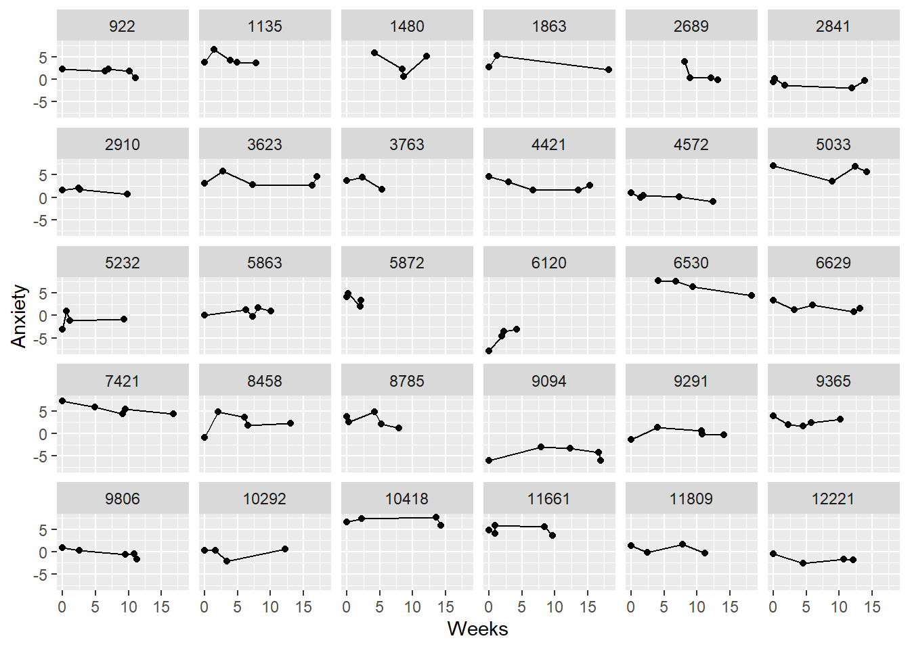
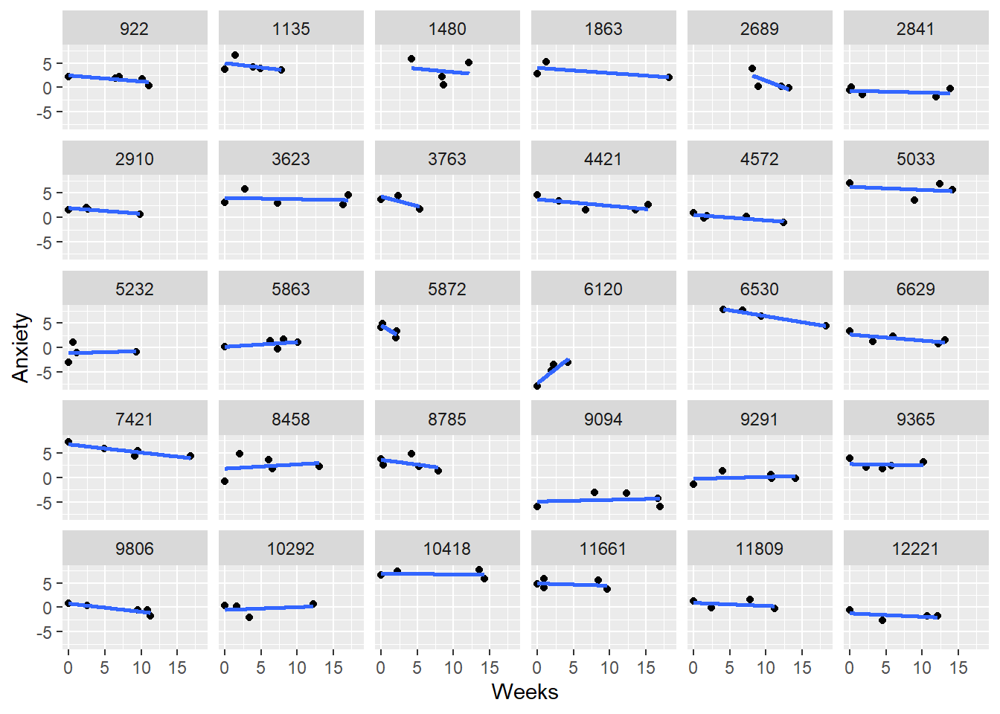
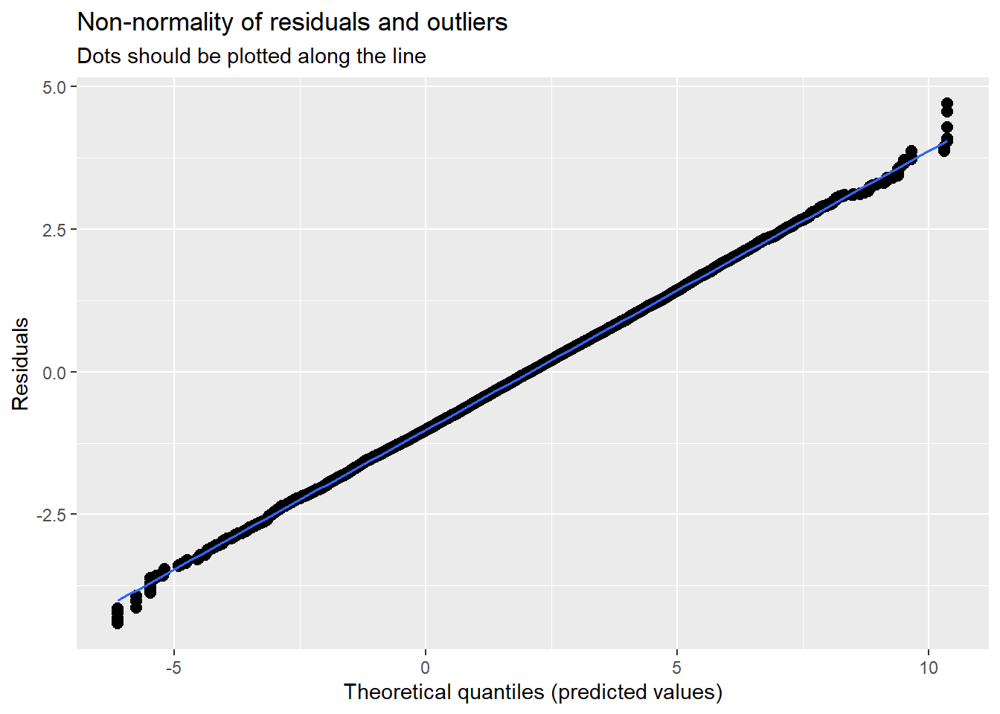
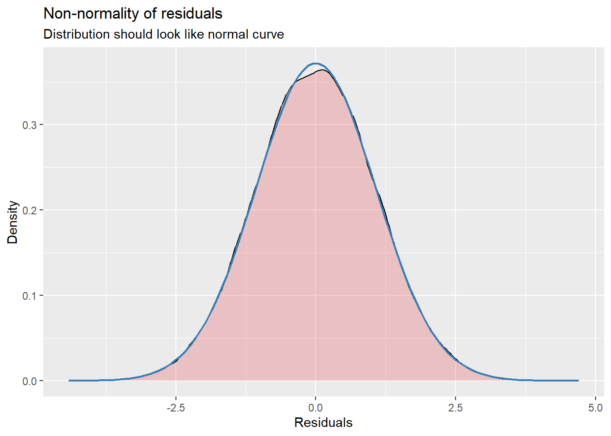
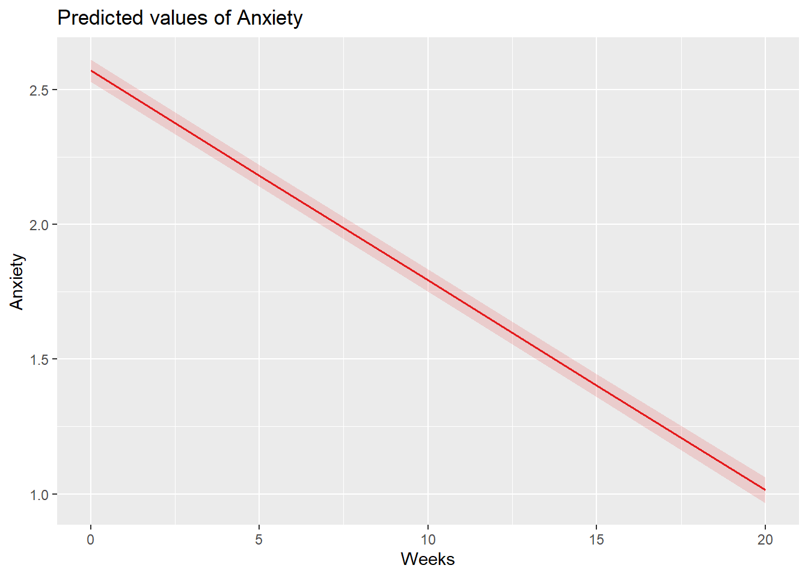
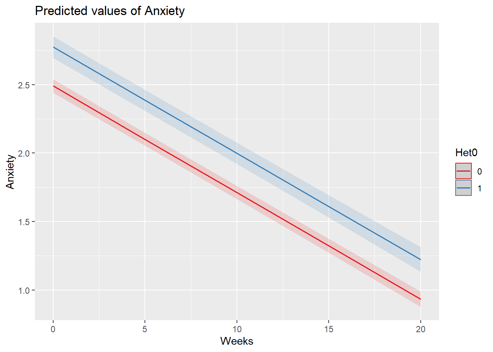
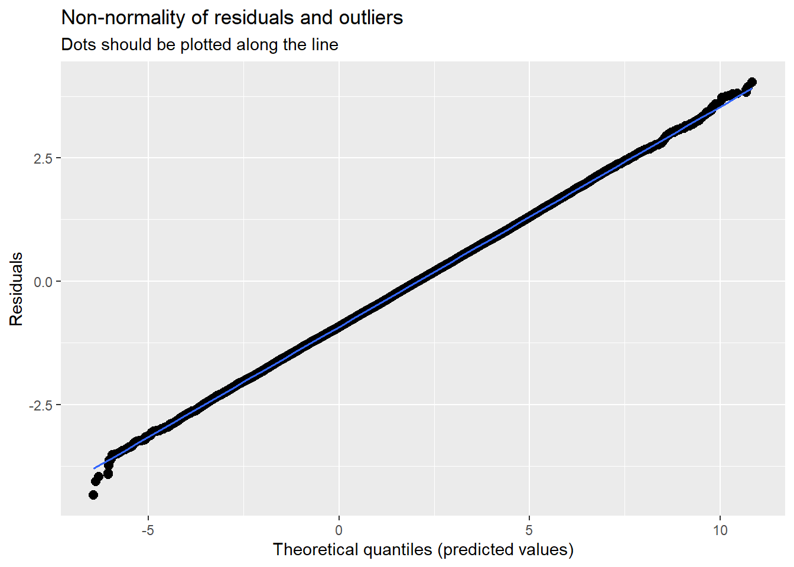
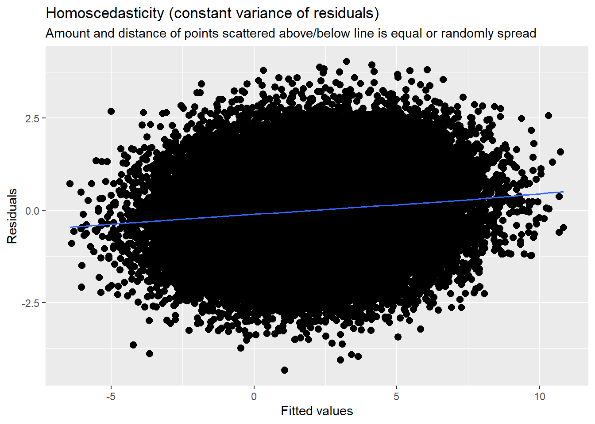
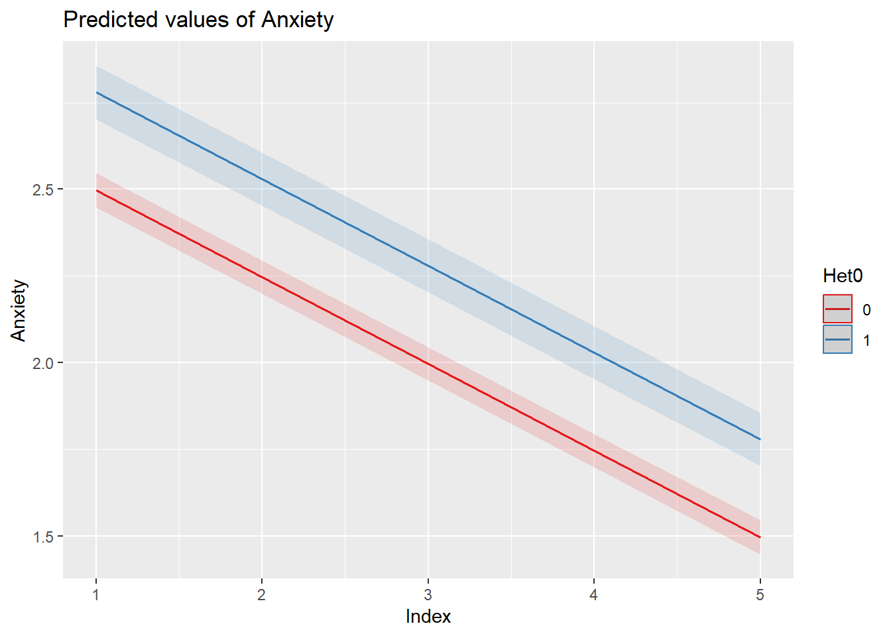

Chapter 15 Calendrical Time (and Missingness) in MLMs
Because much longitudinal research involves date or time stamps (and multi-level analyses can be improved by using unstructured time), the primary focus of this lecture is on working with calendrical time. We will consider what is the proper “metric” for clocking time, engage in “date math,” and then rework the Lefevor et al.(Lefevor et al., 2017) with this alternate metric for time. The bonus reel of the chapter asks a number of “What if…?” questions (i.e., what if we used the Index (time structured) variable as an indicator of time; what if our dataset was unbalanced) and provides quick answers and offers possible R script solutions.
15.2 Exploring Variants of Time and Balance
Datasets present their unique challenges. In longitudinal designs where time is a focal predictor, the “clock” used to mark time is a critical choice. Further, there are a number of considerations when converting dates to markers of time.
Another challenge has to do with balance. A highlight of MLM is the hope that individuals can have missing observations and varying numbers of observations per case. In this chapter, we randomly delete a number of cases from the otherwise perfectly balanced dataset to see how it challenges (or doesn’t) the process and the results.
Given that this chapter does not introduce a new statistic, let’s get right to the example.
15.3 Research Vignette
Our research vignette (Lefevor et al., 2017) examines the intersection of religious and sexual identities of clients in therapy. With 12,825 participants from the Center for Collegiate Mental Health 2012-2014 data set, the project is an example of working with big data. Because the data is available to members only (and behind a paywall), I simulated the data. In the simulation, categorical variables (e.g., sexual identity, session number, religious identity) were rendered as continuous variables and in the simulation, I needed to transform them back into categorical ones. Inevitably, this will have introduced a great deal of error. Thus, we can expect that the results from the simulated data will be different from those obtained by the authors.
The Method section of the article provides detailed information about the inclusion criteria ofr the study and the coding of the variables. This included data about the religious and sexual identities as well as a minimum of three separate scores on the Counseling Center Assessment of Psychologial Sympsoms (CCAPS); (Locke et al., 2012) measure. For the final dataset, clients attended an average of 10.58 sessions (SD = 7.65) and had an average of 5.36 CCAPS administrations (SD = 4.04). This means that in the original dataset, each client was represented by a varying number of observations (likely ranging from 3 [the minimum required for inclusion] and, perhaps as many as 17 [adding +3SDs to the mean CCAPS administrations]). In simulating the data, I specified five observations for each of the 12,825 clients.
Let’s take a look at the variables in the study
Anxiety and Depression: The anxiety and depression ratings were taken from the CCAPS measure (Locke et al., 2012) that assesses psychological distress across seven domains. Clients rate themselves over the past two weeks on a 5-point Likert-type scale ranging from 0 (not at all like me) to 4 (extremely like me). Higher scores indicate more distress. The dataset comes from multiple institutions with different procedures around assessment CCAPS there is not a 1:1 correspondence with session number and CCAPS assessment.
Sexual Identity: Sexual identity was dichotomized into heterosexual (-1, 85.5%) and LGBQQ (1, 14.5%).
Relious Identity: Religious identity was coded into three categories including dominant religious (DR; Christian, Catholic), nondominant religious (NDR; Muslim, Hindu, Buddhist, Jewish), and nondominant unaffiliated (NDU; agnostic, atheist, no preference). The three categories were contrast coded with an orthogonal contrast-coding scheme with two variables. The first variable compared DR(coded as 2) to NDU and NDR (coded as -1); the second variable compared the two nondominant groups (NDU = -1, DR = 0, NDR = 1).
Time: Time was a variable in the study. In the article, Lefevor et al. (2017) clocked time with session number. Conceptualizing session as an indicator of “dose”, each participants’ observation included a session variable representing a value ranging from the first to the twentieth session. In the prior lessons where we used this vignette, we centered the first session at 0 so that in the data simulation, session was an integer-level variable ranging from 1 to 19. In the simulation for this lesson (where the goal is to manipulate time), I have further transformed session so that it is a date (year, month, date).
15.3.1 Simulating the data from the journal article
This simulation is very similar (but not identical) to the simulation used in the MLM longitudinal exploration and model building chapters. The primary difference is that when I created the SessionT variable, I did not require the values to be integers. Instead, the number of sessions could be fractional as they still ranged from 0 to 19. The session variable becomes our key in creating a variable representing calendrical time.
## ── Attaching core tidyverse packages ──────────────────────── tidyverse 2.0.0 ──
## ✔ dplyr 1.1.2 ✔ readr 2.1.4
## ✔ forcats 1.0.0 ✔ stringr 1.5.1
## ✔ ggplot2 3.5.0 ✔ tibble 3.2.1
## ✔ lubridate 1.9.2 ✔ tidyr 1.3.0
## ✔ purrr 1.0.1
## ── Conflicts ────────────────────────────────────────── tidyverse_conflicts() ──
## ✖ dplyr::filter() masks stats::filter()
## ✖ dplyr::lag() masks stats::lag()
## ℹ Use the conflicted package (<http://conflicted.r-lib.org/>) to force all conflicts to become errorsset.seed(200513)
n_client = 12825
n_session = 5
b0 = 2.03 #intercept for anxiety
b1 = -0.22 #b weight for L1 session
b2 = 0.13 #b weight for L2 sexual identity
b3 = -0.03 #b weight for L2 Rel1 (D-R vs ND-R & ND-U)
b4 = 0.01 #b weight for the L2 Rel2 (ND-R vs ND-U)
# the values used below are the +/- 3SD they produce continuous
# variables which later need to be transformed to categorical ones;
# admittedly this introduces a great deal of error/noise into the
# simulation the article didn't include a correlation matrix or M/SDs
# so this was a clunky process
(Session = runif(n_client * n_session, -3.61, 3.18)) #calc L1 Session, values are the +/3 3SD
(SexualIdentity = runif(n_client * Session, -6.66, 6.92)) #calc L2 Sexual Identity, values are the +/3 3SD
(Religion1 = runif(n_client * Session, -3.43, 3.37)) #calc L2 Religion1, values are the +/3 3SD
(Religion2 = rep(runif(n_session, -3.38, 3.41), each = n_session)) #calc L2 Religion2, values are the +/3 3SD
mu = 1.76 #intercept of empty model
sds = 2.264 #this is the SD of the DV
sd = 1 #this is the observation-level random effect variance that we set at 1
# ( church = rep(LETTERS[1:n_church], each = n_mbrs) ) #this worked
# in the prior
(client = rep(LETTERS[1:n_client], each = n_session))
# ( session = numbers[1:(n_client*n_session)] )
(clienteff = rnorm(n_client, 0, sds))
(clienteff = rep(clienteff, each = n_session))
(sessioneff = rnorm(n_client * n_session, 0, sd))
(Anxiety = b0 + b1 * Session + b2 * SexualIdentity + b3 * Religion1 + b4 *
Religion2 + clienteff + sessioneff)
(dat = data.frame(client, clienteff, sessioneff, Session, SexualIdentity,
Religion1, Religion2, Anxiety))
dat <- dat %>%
dplyr::mutate(ID = row_number())
# moving the ID number to the first column; requires
dat <- dat %>%
dplyr::select(ID, everything())
Lefevor2017 <- dat %>%
select(ID, client, Session, SexualIdentity, Religion1, Religion2, Anxiety)
Lefevor2017$ClientID <- rep(c(1:12825), each = 5)
# rounded Sexual Identity into dichotomous variable 85% were
# heterosexual,
# The following variables should be L2, but were simulated as if they
# were L1
Lefevor2017$Rel1 <- as.numeric(robumeta::group.mean(Lefevor2017$Religion1,
Lefevor2017$ClientID)) #aggregated at group mean
Lefevor2017$Rel2 <- as.numeric(robumeta::group.mean(Lefevor2017$Religion2,
Lefevor2017$ClientID)) #aggregated at group mean
Lefevor2017$SxID <- as.numeric(robumeta::group.mean(Lefevor2017$SexualIdentity,
Lefevor2017$ClientID)) #aggregated at group mean
# Rel2 has contrast codes for dominant religion (DR, 0), nondominant
# religious (NDR, 1) and nondominant unspecified (NDU, -1) Strategy
# is to figure out the raw score associated with the percentile rank
# of -1 and 0, to set the breakpoints for the coding NDU coded as -1
# 19.2+13.5+9.6 NDU has bottom 42.3 percent
# DR coded as 0, so quantile cut will be 42.3 + 52.7 = 95th 33.4 +
# 19.3 52.7% of sample (according to article) was DR must look up
# percentile ranks for 5% and 57.5%
# NDR 2.3+1+1+.7 NDR has 5% of sample 42.3+52.7
# quantile(Lefevor2017$Religion2, probs = c(.423, .95)) effects
# coding the second Religion variable so that NDU = -1, DR = 0, NDR =
# 1
Lefevor2017$Rel2L2 <- ifelse(Lefevor2017$Religion2 <= -3.0877087, -1, ifelse(Lefevor2017$Religion2 >=
-3.0877087 & Lefevor2017$Religion2 <= 0.9299491, 0, 1))
# checking work Rel2L2_table <- table(Lefevor2017$Rel2L2)
# prop.table(Rel2L2_table) Lefevor2017 %>% count(Rel2L2)
# creating the first religion variable where DR is 2 and NDR and NDU
# are both -1
Lefevor2017$Rel1L2 <- plyr::mapvalues(Lefevor2017$Rel2L2, from = c(-1,
0, 1), to = c(-1, 2, -1))
Lefevor2017$DRel0 <- plyr::mapvalues(Lefevor2017$Rel2L2, from = c(-1, 0,
1), to = c(1, 0, 1))
# checking to make sure that 52.7% are coded 2 (DR) Rel1L2_table <-
# table(Lefevor2017$Rel1L2) prop.table(Rel1L2_table)
# heterosexual is -1 LGBTQIA+ is 1 quantile(Lefevor2017$SxID, probs =
# c(.85))
Lefevor2017$SexID <- ifelse(Lefevor2017$SxID <= 1.203468, -1, 1)
Lefevor2017$Het0 <- plyr::mapvalues(Lefevor2017$SexID, from = c(-1, 1),
to = c(0, 1))
# SexID_table <- table(Lefevor2017$SexID) prop.table(SexID_table)
# creating a variable representing the session number for each
# client, in the article up to 20 sessions were allowed.
# install.packages('scales')
# Right from the beginning I centered this so that 0 would represent
# intake Lefevor2017$Session0 <-
# as.integer(scales::rescale(Lefevor2017$Session, to = c(0, 19)))
Lefevor2017$SessionT <- scales::rescale(Lefevor2017$Session, to = c(0,
19))
# creating session waves (1 thru 5) by rank ordering within each
# person's variable the continuous variable Session that was created
# in the original simulation
LefevorTIME <- Lefevor2017 %>%
dplyr::group_by(ClientID) %>%
dplyr::mutate(Index = rank(Session))
# selecting the simulated variables
LefevorTIME_sim <- LefevorTIME %>%
dplyr::select(ClientID, Index, SessionT, Anxiety, DRel0, Het0)
# rearranging variables so that IDs are together
LefevorTIME_sim <- LefevorTIME_sim %>%
dplyr::select(ClientID, Index, SessionT, Anxiety, DRel0, Het0)
# resorting data so that each person is together
LefevorTIME_sim <- dplyr::arrange(LefevorTIME_sim, ClientID, Index)
# In the transition from long-to-wide, it seems like you can only do
# one L1 variable at a time When there are multiple L1 and L2 vars,
# put all L2 vars on left of tilde The wave/index function should
# come next; this should be finite (like integers of 1,2,3,4) with a
# maximum Put the name of the SINGLE L1 variable in the concatonated
# list
library(data.table)##
## Attaching package: 'data.table'
##
## The following objects are masked from 'package:lubridate':
##
## hour, isoweek, mday, minute, month, quarter, second, wday, week,
## yday, year
##
## The following objects are masked from 'package:dplyr':
##
## between, first, last
##
## The following object is masked from 'package:purrr':
##
## transposeLfvrTWp1 <- reshape2::dcast(LefevorTIME_sim, ClientID + DRel0 + Het0 ~
Index, value.var = c("Index"))
# rename the anxiety variable
LfvrTWp1 <- rename(LfvrTWp1, Index1 = "1", Index2 = "2", Index3 = "3",
Index4 = "4", Index5 = "5")
LfvrTWp2 <- reshape2::dcast(LefevorTIME_sim, ClientID ~ Index, value.var = c("Anxiety"))
# rename the anxiety variable
LfvrTWp2 <- rename(LfvrTWp2, Anx1 = "1", Anx2 = "2", Anx3 = "3", Anx4 = "4",
Anx5 = "5")
# For remaining L1 variable, do them one at a time -- key them from
# the person-level ID and the wave/index.
LfvrTWp3 <- reshape2::dcast(LefevorTIME_sim, ClientID ~ Index, value.var = c("SessionT"))
LfvrTWp3 <- dplyr::rename(LfvrTWp3, Sess1 = "1", Sess2 = "2", Sess3 = "3",
Sess4 = "4", Sess5 = "5")
# Next, join the dataframes by the person-level ID Only two can be
# joined at a time
LfvrTWide <- dplyr::full_join(LfvrTWp1, LfvrTWp2, by = c("ClientID"))
LfvrTWide <- dplyr::full_join(LfvrTWide, LfvrTWp3, by = c("ClientID"))To increase the portability of the OER, this lesson uses simulated data. Here is script for exporting/downloading the long and wide forms of the data as a .csv files to your local computer and then importing/uploading it again. I find that saving the .csv file (data) in the same place as the .rmd file(s) is essential for R to connect the two.
Once you write the document to your file, you only need to run the piece of script that reads it back in.
# Once you simulate the data, the 'write.table' script saves it --
# ideally to the folder where your .rmd file is located
# write.table(LefevorTIME_sim , file='LefevorTLong.csv', sep=',',
# col.names=TRUE, row.names=FALSE) If you have used the above code,
# you can clear your environment, then simply run this line of code
# to bring the data back in TIMElong <- read.csv ('LefevorTLong.csv',
# head = TRUE, sep = ',')# Once you simulate the data, the 'write.table' script saves it --
# ideally to the folder where your .rmd file is located
write.table(LfvrTWide, file = "LefevorTWide.csv", sep = ",", col.names = TRUE,
row.names = FALSE)
# If you have used the above code, you can clear your environment,
# then simply run this line of code to bring the data back in
# TIMEwide <- read.csv ('LefevorTWide.csv', head = TRUE, sep = ',')15.4 More Simulation – Appointment Dates
Lefevor et al. (Lefevor et al., 2017) treated sessions as a dosage marker and clocked time by the number of sessions. But what if we wanted to use calendrical time, as time? In this lesson we will get practice at working with dates and calculating time intervals (e.g., days, weeks, or months) with those dates. To demonstrate another possible way of working with time, I have decided to simulate the dates as part of this lesson.
If you simulated the data and saved it locally, you should be able to bring it into the R Environment as a file.
## ClientID DRel0 Het0 Index1 Index2 Index3 Index4 Index5 Anx1 Anx2
## 1 1 0 0 1 2 3 4 5 3.707621 3.57984960
## 2 2 1 0 1 2 3 4 5 3.493704 3.09390261
## 3 3 1 0 1 2 3 4 5 1.186357 2.21117371
## 4 4 1 0 1 2 3 4 5 2.942570 2.34895407
## 5 5 0 0 1 2 3 4 5 2.717222 4.74703344
## 6 6 0 0 1 2 3 4 5 2.487774 0.01596648
## Anx3 Anx4 Anx5 Sess1 Sess2 Sess3 Sess4 Sess5
## 1 3.874312 3.7994900 1.556770 0.1845726 7.670686 8.539096 13.273797 16.01546
## 2 2.022628 2.7468959 4.003687 5.5126599 6.002033 7.781499 8.367488 10.90543
## 3 -1.246828 0.3381523 -1.475709 1.1219976 2.529710 12.279964 12.624917 18.73150
## 4 5.112765 2.6254631 2.171254 2.5158497 6.317120 9.876657 13.103456 13.93061
## 5 3.471733 5.0021070 4.828522 5.0965424 6.040165 14.066772 15.946901 17.50296
## 6 1.484700 0.8271757 2.537089 6.1330161 8.275050 8.628714 13.328045 14.03743If we examine the head of the data, we see five variables (Sess1 to Sess5) that were resimulated to be fractional values between 0 and 19). Thinking this simulation through, we have five repeated measures from each client that correspond with when they took the CCAPS measure.Because counseling centers differed on the frequency and scheduling for the CCAPS, there is not a 1:1 correspondence with CCAPS administration and session number. I have kept this in mind in creating a “dates” based time metric.
First I must create the Intake date. In this particular simulation, this is simply a marker/baseline for clocking time. I am only using it to create dates for the weekly counseling sessions. In my imagination this might have been the date that the client called to schedule an appointment.
In the script below, I am creating the variable “Intake.” I have assigned all the clients the same intake date (May 28, 2021). I need to tell R that the format is “year/month/date.” The ymd() function does that for me.
We can confirm that our Intake variable is a date by checking the structure.
## Date[1:12825], format: "2021-05-28" "2021-05-28" "2021-05-28" "2021-05-28" "2021-05-28" ...In the next step of the data simulation I need to create Weeks# variables that have a date. The date must consistently increase from Week1 through Week5. I am going to make the assumption that the simulated values for the Sess# variables (recall, they are fractional values that range from 0 to 19) are a reasonable estimate of weekly time. Therefore, I can add it to the Intake date to create new dates for each of the five observations for each client.
TIMEwide <- TIMEwide %>%
dplyr::mutate(Weeks1 = Intake + lubridate::dweeks(Sess1)) %>%
dplyr::mutate(Weeks2 = Intake + lubridate::dweeks(Sess2)) %>%
dplyr::mutate(Weeks3 = Intake + lubridate::dweeks(Sess3)) %>%
dplyr::mutate(Weeks4 = Intake + lubridate::dweeks(Sess4)) %>%
dplyr::mutate(Weeks5 = Intake + lubridate::dweeks(Sess5))
head(TIMEwide)## ClientID DRel0 Het0 Index1 Index2 Index3 Index4 Index5 Anx1 Anx2
## 1 1 0 0 1 2 3 4 5 3.707621 3.57984960
## 2 2 1 0 1 2 3 4 5 3.493704 3.09390261
## 3 3 1 0 1 2 3 4 5 1.186357 2.21117371
## 4 4 1 0 1 2 3 4 5 2.942570 2.34895407
## 5 5 0 0 1 2 3 4 5 2.717222 4.74703344
## 6 6 0 0 1 2 3 4 5 2.487774 0.01596648
## Anx3 Anx4 Anx5 Sess1 Sess2 Sess3 Sess4 Sess5
## 1 3.874312 3.7994900 1.556770 0.1845726 7.670686 8.539096 13.273797 16.01546
## 2 2.022628 2.7468959 4.003687 5.5126599 6.002033 7.781499 8.367488 10.90543
## 3 -1.246828 0.3381523 -1.475709 1.1219976 2.529710 12.279964 12.624917 18.73150
## 4 5.112765 2.6254631 2.171254 2.5158497 6.317120 9.876657 13.103456 13.93061
## 5 3.471733 5.0021070 4.828522 5.0965424 6.040165 14.066772 15.946901 17.50296
## 6 1.484700 0.8271757 2.537089 6.1330161 8.275050 8.628714 13.328045 14.03743
## Intake Weeks1 Weeks2 Weeks3
## 1 2021-05-28 2021-05-29 07:00:29 2021-07-20 16:40:31 2021-07-26 18:34:05
## 2 2021-05-28 2021-07-05 14:07:36 2021-07-09 00:20:29 2021-07-21 11:17:30
## 3 2021-05-28 2021-06-04 20:29:44 2021-06-14 16:59:28 2021-08-21 23:02:01
## 4 2021-05-28 2021-06-14 14:39:45 2021-07-11 05:16:34 2021-08-05 03:16:42
## 5 2021-05-28 2021-07-02 16:13:08 2021-07-09 06:44:52 2021-09-03 11:13:03
## 6 2021-05-28 2021-07-09 22:20:48 2021-07-24 22:12:30 2021-07-27 09:37:25
## Weeks4 Weeks5
## 1 2021-08-28 21:59:52 2021-09-17 02:35:52
## 2 2021-07-25 13:44:16 2021-08-12 08:06:43
## 3 2021-08-24 08:59:09 2021-10-06 02:53:31
## 4 2021-08-27 17:22:50 2021-09-02 12:20:35
## 5 2021-09-16 15:04:45 2021-09-27 12:29:50
## 6 2021-08-29 07:06:41 2021-09-03 06:17:18Let’s peek at the structure of one of the Weeks# variables.
## POSIXct[1:12825], format: "2021-05-29 07:00:29" "2021-07-05 14:07:36" "2021-06-04 20:29:44" ...The POSIXct format stores a date (complete with time) and an associated timezone (i.e., the default time zone is the one your computer is set to). The metric is seconds beginning from January 1, 1970. Any dates before that are in negative numbers. This format makes it possible to do calculate with dates/times and then extract intervals.
To this point I have only been using some of the lubridate functions to simulate the data. This is generally the point where we would receive the data – that point where each event of interest has a time stamp.
15.5 Reworking Lefevor et al. using Calendrical Time (and Unbalanced Data)
15.5.1 Creating Time Intervals
On their own, datestamps are not useful as predictors in a regression equation. Therefore, we must manipulate or transform them to represent some “sensible metric for time” (Singer & Willett, 2003); that is, we need to think about how we wish to clock time. In making this consideration, we also want to think about how regression works. Time will be a focal predictor and so we are interested in the meaningfulness and interpretability of a “one-unit change.” Using days as a metric seems too small because we would not expect to detect change in 1-day increments. Months feels reasonable to me, but with a maximum of 19 weeks, we would have a maximum of just under five units of the months metric. Because the span of time is only 19 session and sessions tend to occur weekly, let’s create a metric of weeks.
First, I need to create the time intervals from which I will extract the durations. In regression, it is important to have a meaningful zero point. We want Week1 to be that zero.
Calculating intervals of time requires using the %–% operator. This results in a data column that lists the two dates being compared. In our example we want to count time forward by listing the Intake variable before the %–% and the Appointment variable.
library(lubridate) #neeeded to use the %--% command
TIMEwide <- TIMEwide %>%
dplyr::mutate(TimeInterval1 = Weeks1 %--% Weeks1) %>%
dplyr::mutate(TimeInterval2 = Weeks1 %--% Weeks2) %>%
dplyr::mutate(TimeInterval3 = Weeks1 %--% Weeks3) %>%
dplyr::mutate(TimeInterval4 = Weeks1 %--% Weeks4) %>%
dplyr::mutate(TimeInterval5 = Weeks1 %--% Weeks5)
head(TIMEwide)## ClientID DRel0 Het0 Index1 Index2 Index3 Index4 Index5 Anx1 Anx2
## 1 1 0 0 1 2 3 4 5 3.707621 3.57984960
## 2 2 1 0 1 2 3 4 5 3.493704 3.09390261
## 3 3 1 0 1 2 3 4 5 1.186357 2.21117371
## 4 4 1 0 1 2 3 4 5 2.942570 2.34895407
## 5 5 0 0 1 2 3 4 5 2.717222 4.74703344
## 6 6 0 0 1 2 3 4 5 2.487774 0.01596648
## Anx3 Anx4 Anx5 Sess1 Sess2 Sess3 Sess4 Sess5
## 1 3.874312 3.7994900 1.556770 0.1845726 7.670686 8.539096 13.273797 16.01546
## 2 2.022628 2.7468959 4.003687 5.5126599 6.002033 7.781499 8.367488 10.90543
## 3 -1.246828 0.3381523 -1.475709 1.1219976 2.529710 12.279964 12.624917 18.73150
## 4 5.112765 2.6254631 2.171254 2.5158497 6.317120 9.876657 13.103456 13.93061
## 5 3.471733 5.0021070 4.828522 5.0965424 6.040165 14.066772 15.946901 17.50296
## 6 1.484700 0.8271757 2.537089 6.1330161 8.275050 8.628714 13.328045 14.03743
## Intake Weeks1 Weeks2 Weeks3
## 1 2021-05-28 2021-05-29 07:00:29 2021-07-20 16:40:31 2021-07-26 18:34:05
## 2 2021-05-28 2021-07-05 14:07:36 2021-07-09 00:20:29 2021-07-21 11:17:30
## 3 2021-05-28 2021-06-04 20:29:44 2021-06-14 16:59:28 2021-08-21 23:02:01
## 4 2021-05-28 2021-06-14 14:39:45 2021-07-11 05:16:34 2021-08-05 03:16:42
## 5 2021-05-28 2021-07-02 16:13:08 2021-07-09 06:44:52 2021-09-03 11:13:03
## 6 2021-05-28 2021-07-09 22:20:48 2021-07-24 22:12:30 2021-07-27 09:37:25
## Weeks4 Weeks5
## 1 2021-08-28 21:59:52 2021-09-17 02:35:52
## 2 2021-07-25 13:44:16 2021-08-12 08:06:43
## 3 2021-08-24 08:59:09 2021-10-06 02:53:31
## 4 2021-08-27 17:22:50 2021-09-02 12:20:35
## 5 2021-09-16 15:04:45 2021-09-27 12:29:50
## 6 2021-08-29 07:06:41 2021-09-03 06:17:18
## TimeInterval1
## 1 2021-05-29 07:00:29 UTC--2021-05-29 07:00:29 UTC
## 2 2021-07-05 14:07:36 UTC--2021-07-05 14:07:36 UTC
## 3 2021-06-04 20:29:44 UTC--2021-06-04 20:29:44 UTC
## 4 2021-06-14 14:39:45 UTC--2021-06-14 14:39:45 UTC
## 5 2021-07-02 16:13:08 UTC--2021-07-02 16:13:08 UTC
## 6 2021-07-09 22:20:48 UTC--2021-07-09 22:20:48 UTC
## TimeInterval2
## 1 2021-05-29 07:00:29 UTC--2021-07-20 16:40:31 UTC
## 2 2021-07-05 14:07:36 UTC--2021-07-09 00:20:29 UTC
## 3 2021-06-04 20:29:44 UTC--2021-06-14 16:59:28 UTC
## 4 2021-06-14 14:39:45 UTC--2021-07-11 05:16:34 UTC
## 5 2021-07-02 16:13:08 UTC--2021-07-09 06:44:52 UTC
## 6 2021-07-09 22:20:48 UTC--2021-07-24 22:12:30 UTC
## TimeInterval3
## 1 2021-05-29 07:00:29 UTC--2021-07-26 18:34:05 UTC
## 2 2021-07-05 14:07:36 UTC--2021-07-21 11:17:30 UTC
## 3 2021-06-04 20:29:44 UTC--2021-08-21 23:02:01 UTC
## 4 2021-06-14 14:39:45 UTC--2021-08-05 03:16:42 UTC
## 5 2021-07-02 16:13:08 UTC--2021-09-03 11:13:03 UTC
## 6 2021-07-09 22:20:48 UTC--2021-07-27 09:37:25 UTC
## TimeInterval4
## 1 2021-05-29 07:00:29 UTC--2021-08-28 21:59:52 UTC
## 2 2021-07-05 14:07:36 UTC--2021-07-25 13:44:16 UTC
## 3 2021-06-04 20:29:44 UTC--2021-08-24 08:59:09 UTC
## 4 2021-06-14 14:39:45 UTC--2021-08-27 17:22:50 UTC
## 5 2021-07-02 16:13:08 UTC--2021-09-16 15:04:45 UTC
## 6 2021-07-09 22:20:48 UTC--2021-08-29 07:06:41 UTC
## TimeInterval5
## 1 2021-05-29 07:00:29 UTC--2021-09-17 02:35:52 UTC
## 2 2021-07-05 14:07:36 UTC--2021-08-12 08:06:43 UTC
## 3 2021-06-04 20:29:44 UTC--2021-10-06 02:53:31 UTC
## 4 2021-06-14 14:39:45 UTC--2021-09-02 12:20:35 UTC
## 5 2021-07-02 16:13:08 UTC--2021-09-27 12:29:50 UTC
## 6 2021-07-09 22:20:48 UTC--2021-09-03 06:17:18 UTCDon’t let the result of this script scare you! In the second step, we convert the TimeInterval# variable to weeks. The “d” in the “dweeks” function tells R that we are calculating a duration. The “x=1” indicates that we are counting 1 week at a time. If we wanted to create 2-week intervals, we simply write, “x = 2”.
TIMEwide <- TIMEwide %>%
dplyr::mutate(Wks1 = as.duration(TimeInterval1)/dweeks(x = 1)) %>%
dplyr::mutate(Wks2 = as.duration(TimeInterval2)/dweeks(x = 1)) %>%
dplyr::mutate(Wks3 = as.duration(TimeInterval3)/dweeks(x = 1)) %>%
dplyr::mutate(Wks4 = as.duration(TimeInterval4)/dweeks(x = 1)) %>%
dplyr::mutate(Wks5 = as.duration(TimeInterval5)/dweeks(x = 1))
head(TIMEwide)## ClientID DRel0 Het0 Index1 Index2 Index3 Index4 Index5 Anx1 Anx2
## 1 1 0 0 1 2 3 4 5 3.707621 3.57984960
## 2 2 1 0 1 2 3 4 5 3.493704 3.09390261
## 3 3 1 0 1 2 3 4 5 1.186357 2.21117371
## 4 4 1 0 1 2 3 4 5 2.942570 2.34895407
## 5 5 0 0 1 2 3 4 5 2.717222 4.74703344
## 6 6 0 0 1 2 3 4 5 2.487774 0.01596648
## Anx3 Anx4 Anx5 Sess1 Sess2 Sess3 Sess4 Sess5
## 1 3.874312 3.7994900 1.556770 0.1845726 7.670686 8.539096 13.273797 16.01546
## 2 2.022628 2.7468959 4.003687 5.5126599 6.002033 7.781499 8.367488 10.90543
## 3 -1.246828 0.3381523 -1.475709 1.1219976 2.529710 12.279964 12.624917 18.73150
## 4 5.112765 2.6254631 2.171254 2.5158497 6.317120 9.876657 13.103456 13.93061
## 5 3.471733 5.0021070 4.828522 5.0965424 6.040165 14.066772 15.946901 17.50296
## 6 1.484700 0.8271757 2.537089 6.1330161 8.275050 8.628714 13.328045 14.03743
## Intake Weeks1 Weeks2 Weeks3
## 1 2021-05-28 2021-05-29 07:00:29 2021-07-20 16:40:31 2021-07-26 18:34:05
## 2 2021-05-28 2021-07-05 14:07:36 2021-07-09 00:20:29 2021-07-21 11:17:30
## 3 2021-05-28 2021-06-04 20:29:44 2021-06-14 16:59:28 2021-08-21 23:02:01
## 4 2021-05-28 2021-06-14 14:39:45 2021-07-11 05:16:34 2021-08-05 03:16:42
## 5 2021-05-28 2021-07-02 16:13:08 2021-07-09 06:44:52 2021-09-03 11:13:03
## 6 2021-05-28 2021-07-09 22:20:48 2021-07-24 22:12:30 2021-07-27 09:37:25
## Weeks4 Weeks5
## 1 2021-08-28 21:59:52 2021-09-17 02:35:52
## 2 2021-07-25 13:44:16 2021-08-12 08:06:43
## 3 2021-08-24 08:59:09 2021-10-06 02:53:31
## 4 2021-08-27 17:22:50 2021-09-02 12:20:35
## 5 2021-09-16 15:04:45 2021-09-27 12:29:50
## 6 2021-08-29 07:06:41 2021-09-03 06:17:18
## TimeInterval1
## 1 2021-05-29 07:00:29 UTC--2021-05-29 07:00:29 UTC
## 2 2021-07-05 14:07:36 UTC--2021-07-05 14:07:36 UTC
## 3 2021-06-04 20:29:44 UTC--2021-06-04 20:29:44 UTC
## 4 2021-06-14 14:39:45 UTC--2021-06-14 14:39:45 UTC
## 5 2021-07-02 16:13:08 UTC--2021-07-02 16:13:08 UTC
## 6 2021-07-09 22:20:48 UTC--2021-07-09 22:20:48 UTC
## TimeInterval2
## 1 2021-05-29 07:00:29 UTC--2021-07-20 16:40:31 UTC
## 2 2021-07-05 14:07:36 UTC--2021-07-09 00:20:29 UTC
## 3 2021-06-04 20:29:44 UTC--2021-06-14 16:59:28 UTC
## 4 2021-06-14 14:39:45 UTC--2021-07-11 05:16:34 UTC
## 5 2021-07-02 16:13:08 UTC--2021-07-09 06:44:52 UTC
## 6 2021-07-09 22:20:48 UTC--2021-07-24 22:12:30 UTC
## TimeInterval3
## 1 2021-05-29 07:00:29 UTC--2021-07-26 18:34:05 UTC
## 2 2021-07-05 14:07:36 UTC--2021-07-21 11:17:30 UTC
## 3 2021-06-04 20:29:44 UTC--2021-08-21 23:02:01 UTC
## 4 2021-06-14 14:39:45 UTC--2021-08-05 03:16:42 UTC
## 5 2021-07-02 16:13:08 UTC--2021-09-03 11:13:03 UTC
## 6 2021-07-09 22:20:48 UTC--2021-07-27 09:37:25 UTC
## TimeInterval4
## 1 2021-05-29 07:00:29 UTC--2021-08-28 21:59:52 UTC
## 2 2021-07-05 14:07:36 UTC--2021-07-25 13:44:16 UTC
## 3 2021-06-04 20:29:44 UTC--2021-08-24 08:59:09 UTC
## 4 2021-06-14 14:39:45 UTC--2021-08-27 17:22:50 UTC
## 5 2021-07-02 16:13:08 UTC--2021-09-16 15:04:45 UTC
## 6 2021-07-09 22:20:48 UTC--2021-08-29 07:06:41 UTC
## TimeInterval5 Wks1 Wks2 Wks3
## 1 2021-05-29 07:00:29 UTC--2021-09-17 02:35:52 UTC 0 7.4861138 8.354523
## 2 2021-07-05 14:07:36 UTC--2021-08-12 08:06:43 UTC 0 0.4893729 2.268839
## 3 2021-06-04 20:29:44 UTC--2021-10-06 02:53:31 UTC 0 1.4077127 11.157966
## 4 2021-06-14 14:39:45 UTC--2021-09-02 12:20:35 UTC 0 3.8012706 7.360807
## 5 2021-07-02 16:13:08 UTC--2021-09-27 12:29:50 UTC 0 0.9436231 8.970230
## 6 2021-07-09 22:20:48 UTC--2021-09-03 06:17:18 UTC 0 2.1420336 2.495697
## Wks4 Wks5
## 1 13.089225 15.830892
## 2 2.854828 5.392770
## 3 11.502919 17.609502
## 4 10.587607 11.414764
## 5 10.850359 12.406417
## 6 7.195028 7.904416Let’s check the structure of one of the Wks# variables.
## num [1:12825] 0 0 0 0 0 0 0 0 0 0 ...Let’s also take a look at the descriptives
## vars n mean sd median trimmed mad min max range skew kurtosis
## Wks1 1 12825 0.00 0.00 0.00 0.00 0.00 0.00 0.00 0.00 NaN NaN
## Wks2 2 12825 3.20 2.66 2.52 2.84 2.41 0.00 16.19 16.19 1.17 1.17
## Wks3 3 12825 6.36 3.40 5.98 6.16 3.62 0.07 17.95 17.89 0.48 -0.35
## Wks4 4 12825 9.52 3.61 9.51 9.52 3.96 0.30 18.79 18.48 0.00 -0.66
## Wks5 5 12825 12.70 3.39 13.05 12.90 3.63 0.92 18.90 17.99 -0.48 -0.38
## se
## Wks1 0.00
## Wks2 0.02
## Wks3 0.03
## Wks4 0.03
## Wks5 0.03The Wks1 through Wks5 variables are what we will use to clock time. We can see that they progress from 0 (hypothethically, the first appointment) to 18.90. This is consistent with the the original simulation, where I restricted the Session variable values were to range between 0 and 19.
This simulation isn’t perfect in that the CCAPS administrations were not always at the first session. Additionally, there may be a few cases cases where the weeks values are extroardinarily close together or even in reverse order. A time reversal violates Singer and Willett’s (2003) guidelines. None-the-less, in this simulation with over 12,000 cases, this should be sufficient for demonstration. Further, it models some of the decisions made when we are working with raw data (which, at least in my lab, always has some complexities).
15.5.2 Wide to Long
Now that our date math is finished, we can restructure the data from wide to long. We have created a number of variables related to time. Regarding the time variables will only need the Index (created automatically) and the Wks# variables. Of course we will want our L1 (Anx#) and L2 (ClientID, DRel0, Het0) variables.
library(data.table)
TIMElong <- (data.table::melt(setDT(TIMEwide), id.vars = c("ClientID",
"DRel0", "Het0"), measure.vars = list(c("Anx1", "Anx2", "Anx3", "Anx4",
"Anx5"), c("Wks1", "Wks2", "Wks3", "Wks4", "Wks5"))))
# This process does not preserve the variable names, so we need to
# rename them
TIMElong <- rename(TIMElong <- rename(TIMElong, Index = variable, Anxiety = "value1",
Weeks = "value2"))
# rearanging variables so that IDs are together
TIMElong <- TIMElong %>%
select(ClientID, Index, Weeks, Anxiety, DRel0, Het0)
# resorting data so that each person is together
TIMElong <- arrange(TIMElong, ClientID, Index)
head(TIMElong)## ClientID Index Weeks Anxiety DRel0 Het0
## 1: 1 1 0.000000 3.707621 0 0
## 2: 1 2 7.486114 3.579850 0 0
## 3: 1 3 8.354523 3.874312 0 0
## 4: 1 4 13.089225 3.799490 0 0
## 5: 1 5 15.830892 1.556770 0 0
## 6: 2 1 0.000000 3.493704 1 0## Classes 'data.table' and 'data.frame': 64125 obs. of 6 variables:
## $ ClientID: int 1 1 1 1 1 2 2 2 2 2 ...
## $ Index : Factor w/ 5 levels "1","2","3","4",..: 1 2 3 4 5 1 2 3 4 5 ...
## $ Weeks : num 0 7.49 8.35 13.09 15.83 ...
## $ Anxiety : num 3.71 3.58 3.87 3.8 1.56 ...
## $ DRel0 : int 0 0 0 0 0 1 1 1 1 1 ...
## $ Het0 : int 0 0 0 0 0 0 0 0 0 0 ...
## - attr(*, ".internal.selfref")=<externalptr>Examining the structure of the data assures us that the value of the Weeks and Index variables progress in a positive direction, together. We also see that the Weeks variable is numerical. This is appropriate since we are simply counting the number of weeks.
15.5.3 MLM is for unbalanced designs
In the prior lessons I noted that a strength of MLM is that data can be unbalanced. The original simulations produced perfectly balanced sets of data with 5 observations each. To demonstrate that MLM can accommodate sets of data where the number of observations per person, vary.
Here, I update the simulation by randomly deleting 5000 rows. With this big data circumstance, this still leaves us a number of cases! Note: this is for demonstration only. You would never, intentionally, delete cases without a compelling reason!
15.5.4 Abbreviated OLS Style Exploration
A more thorough preliminary investigation of the data occurs in a prior lesson. In this quick demonstration, we take a look at individual growth plots from when clocked Weeks variable as nonparametric and parametric (i.e., where individual linear regressions are superimposed on the raw data).
We start by creating a random sample. Here is script allowing us to sample entire cases (i.e., the individual client with all their appointment data).
In these first two plots we look at anxiety as a function of the time-unstructured, weeks, data. Compared to the graphs in the chapter where the data was balanced (each person had 5 observations), it is apparent that not everyone has the same number of observations.
ggplot(data = rndm30time, aes(x = Weeks, y = Anxiety)) + geom_point() +
geom_line() + facet_wrap(~ClientID)
In the lesson on longitudinal exploration we created individual regression equations and superimposed them on the raw data. This second plot does not print the individual regression equations for us, but calculates them behind the scenes and creates the individual plots. Similar to the plots with nonparametric smoothing, we notice the difference in numbers of observations per cases. The straight line, though, does seem to be an appropriate functional form.
ggplot(data = rndm30time, aes(x = Weeks, y = Anxiety)) + geom_point() +
stat_smooth(method = "lm", se = FALSE) + facet_wrap(~ClientID)## `geom_smooth()` using formula = 'y ~ x' If this were our real data, we would complete the process outlined in the longitudinal exploration chapter. Because the purpose of this lesson is focused on unstructured time with unbalanced data, we will move forward with a quick recap of building the MLM. This next section is abbreviated from the more thorough process demonstrated in the basic longitudinal model lesson.
15.5.5 Rebuilding the Model (Unstructured Time, Unbalanced Design)
We follow the same model building approach as in the basic longitudinal model lesson. This involves progressing through the following models:
- Unconditional means model
- Unconditional growth model
- Uncontrolled effects of sexual identity
- Controlled effects of religious affiliation
- Trimming nonsignificant effects
15.5.5.1 Model 1: Unconditional means model
We start with the unconditional means model. In this model, we are seeking the grand mean. By identifying the nesting/grouping variable (ClientID) we also understand the proportions of between- and within- subjects variance.
## Linear mixed model fit by maximum likelihood ['lmerMod']
## Formula: Anxiety ~ 1 + (1 | ClientID)
## Data: TIMElong
##
## AIC BIC logLik deviance df.resid
## 226006.8 226033.8 -113000.4 226000.8 59122
##
## Scaled residuals:
## Min 1Q Median 3Q Max
## -3.6726 -0.6053 0.0002 0.6052 3.9062
##
## Random effects:
## Groups Name Variance Std.Dev.
## ClientID (Intercept) 5.101 2.258
## Residual 1.446 1.202
## Number of obs: 59125, groups: ClientID, 12825
##
## Fixed effects:
## Estimate Std. Error t value
## (Intercept) 2.07580 0.02056 101sjPlot::tab_model(M1a, p.style = "numeric", show.ci = FALSE, show.se = TRUE,
show.df = FALSE, show.re.var = TRUE, show.aic = TRUE, show.dev = TRUE,
use.viewer = TRUE, dv.labels = c("Mod1"))## Model was not fitted with REML, however, `estimator = "REML"`. Set
## `estimator = "ML"` to obtain identical results as from `AIC()`.| Mod1 | |||
|---|---|---|---|
| Predictors | Estimates | std. Error | p |
| (Intercept) | 2.08 | 0.02 | <0.001 |
| Random Effects | |||
| σ2 | 1.45 | ||
| τ00 ClientID | 5.10 | ||
| ICC | 0.78 | ||
| N ClientID | 12825 | ||
| Observations | 59125 | ||
| Marginal R2 / Conditional R2 | 0.000 / 0.779 | ||
| Deviance | 226000.825 | ||
| AIC | 226012.756 | ||
# can swap this statement with the 'file = 'TabMod_Table'' to get
# Viewer output or the outfile that you can open in Word file =
# 'TabMod_Table.doc'We learn that the mean anxiety score is 2.08 across all individuals and all times. A primary purpose of the unconditional means model is to obtain and interpret the ICC. Between-persons variance is 78%; within-persons variance is its inverse (22%).
Although I would normally run the diagnostic plots after each model, in this lesson I am only displaying them after the first model (as a quick check to make sure there is nothing catastrophically wrong) and after the last model.
# If the code below does not run, install the package glmmTMB from
# its source with the following code Remove the hashtag to install,
# then replace it to avoide re-re-installing the package
# install.packages('glmmTMB', type='source')
sjPlot::plot_model(M1a, type = "diag")## [[1]]## `geom_smooth()` using formula = 'y ~ x'
##
## [[2]]
## [[2]]$ClientID## `geom_smooth()` using formula = 'y ~ x'
##
##
## [[3]]
##
## [[4]]## `geom_smooth()` using formula = 'y ~ x'
15.5.5.2 Model 2: Unconditional growth model
The second model is introduces time (this time our Weeks variable) into the L1 submodel. Because a linear model made sense in our exploratory analyses, we specify a trajectory of linear change. We do not include any other substantive predictors.Because there are no other predictors, it is an unconditional growth model.
For comparison, this was our prior model; we can see how the model building occurs. M1a <- lme4::lmer(Anxiety ~1 +(1 | ClientID), TIMElong, REML = FALSE)
## boundary (singular) fit: see help('isSingular')## Linear mixed model fit by maximum likelihood ['lmerMod']
## Formula: Anxiety ~ Weeks + (Weeks | ClientID)
## Data: TIMElong
##
## AIC BIC logLik deviance df.resid
## 219677.4 219731.3 -109832.7 219665.4 59119
##
## Scaled residuals:
## Min 1Q Median 3Q Max
## -3.8701 -0.6005 -0.0026 0.6072 3.5860
##
## Random effects:
## Groups Name Variance Std.Dev. Corr
## ClientID (Intercept) 5.175071253 2.274878
## Weeks 0.000001625 0.001275 -1.00
## Residual 1.260961495 1.122925
## Number of obs: 59125, groups: ClientID, 12825
##
## Fixed effects:
## Estimate Std. Error t value
## (Intercept) 2.5697482 0.0214769 119.65
## Weeks -0.0777985 0.0009444 -82.38
##
## Correlation of Fixed Effects:
## (Intr)
## Weeks -0.290
## optimizer (nloptwrap) convergence code: 0 (OK)
## boundary (singular) fit: see help('isSingular')sjPlot::tab_model(M1a, M2a, p.style = "numeric", show.ci = FALSE, show.se = TRUE,
show.df = FALSE, show.re.var = TRUE, show.aic = TRUE, show.dev = TRUE,
use.viewer = TRUE, dv.labels = c("Mod1", "Mod2"))## Model was not fitted with REML, however, `estimator = "REML"`. Set
## `estimator = "ML"` to obtain identical results as from `AIC()`.## Model was not fitted with REML, however, `estimator = "REML"`. Set
## `estimator = "ML"` to obtain identical results as from `AIC()`.| Mod1 | Mod2 | |||||
|---|---|---|---|---|---|---|
| Predictors | Estimates | std. Error | p | Estimates | std. Error | p |
| (Intercept) | 2.08 | 0.02 | <0.001 | 2.57 | 0.02 | <0.001 |
| Weeks | -0.08 | 0.00 | <0.001 | |||
| Random Effects | ||||||
| σ2 | 1.45 | 1.26 | ||||
| τ00 | 5.10 ClientID | 5.18 ClientID | ||||
| τ11 | 0.00 ClientID.Weeks | |||||
| ρ01 | -1.00 ClientID | |||||
| ICC | 0.78 | |||||
| N | 12825 ClientID | 12825 ClientID | ||||
| Observations | 59125 | 59125 | ||||
| Marginal R2 / Conditional R2 | 0.000 / 0.779 | 0.121 / NA | ||||
| Deviance | 226000.825 | 219665.401 | ||||
| AIC | 226012.756 | 219695.425 | ||||
# can swap this statement with the 'file = 'TabMod_Table'' to get
# Viewer output or the outfile that you can open in Word file =
# 'TabMod_Table.doc'A plot of predicted values illustrates the decrease in anxiety as sessions continue.

Interpreting Fixed Effects Looking at the tab_model() in the viewer, we can see that
At Week1 (the zero value), the average client was estimated to have a non-zero anxiety level of 2.82 (p < 0.001; \(\gamma _{00}\)). On average, anxiety decreases by 0.08 units per session.
Interpreting variance components With Weeks in the model, the L1 residual variance, \(\sigma^{2}\) now summarizes the scatter of each person’s data around their own linear change trajectory.
When we have both unconditional means and growth models, we can examine the decrease in within-person residual variance. Here’s the formula:
\[Pseudo R_{\varepsilon }^{2} = \frac{\sigma^{2}(unconditional. means. model) - \sigma^{2}(unconditional. growth. model)}{\sigma ^{2}(unconditional. means. model)}\]
We calculate it manually:
## [1] 0.1310345We conclude that 13% of the within-person variation in anxiety is explained by the number of weeks in therapy. The only way to further reduce this variance component is to add time-covarying predictors to the L1 submodel.
The value of \(\tau _{00}\) is 5.18; this is variance remaining around the intercept (anxiety at Week1). Because the introduction of the time variable, Weeks, changes the meaning of the L2 variance components, we do not compare the \(\tau _{00}\)) values between Models 1 and 2. As we move forward (keeping Weeks in the model) we will use the Model 2 estimates as benchmarks for comparison.
The value of \(\tau _{11}\) is 0.00; this is variance remaining around the slope (rate of growth).
15.5.5.3 Model 3: The uncontrolled effects of sexual identity
We will add sexual identity into the model. Because the only other predictor is Weeks, its addition (as a L2 variable, with a cross-level interaction with time), it is considered to be an uncontrolled addition.
For comparison: M1a <- lme4::lmer(Anxiety ~1 +(1 | ClientID), TIMElong, REML = FALSE) M2a <- lme4::lmer(Anxiety ~ Weeks +(Weeks | ClientID), TIMElong, REML = FALSE)
# with lme4 package
M3a <- lme4::lmer(Anxiety ~ Weeks * Het0 + (Weeks | ClientID), TIMElong,
REML = FALSE)## boundary (singular) fit: see help('isSingular')## Linear mixed model fit by maximum likelihood ['lmerMod']
## Formula: Anxiety ~ Weeks * Het0 + (Weeks | ClientID)
## Data: TIMElong
##
## AIC BIC logLik deviance df.resid
## 219642.5 219714.4 -109813.3 219626.5 59117
##
## Scaled residuals:
## Min 1Q Median 3Q Max
## -3.8677 -0.6008 -0.0023 0.6075 3.5884
##
## Random effects:
## Groups Name Variance Std.Dev. Corr
## ClientID (Intercept) 5.158483221 2.271229
## Weeks 0.000001621 0.001273 -1.00
## Residual 1.260967447 1.122928
## Number of obs: 59125, groups: ClientID, 12825
##
## Fixed effects:
## Estimate Std. Error t value
## (Intercept) 2.4908090 0.0252470 98.658
## Weeks -0.0778911 0.0011125 -70.016
## Het0 0.2834528 0.0478504 5.924
## Weeks:Het0 0.0003096 0.0021045 0.147
##
## Correlation of Fixed Effects:
## (Intr) Weeks Het0
## Weeks -0.290
## Het0 -0.528 0.153
## Weeks:Het0 0.153 -0.529 -0.292
## optimizer (nloptwrap) convergence code: 0 (OK)
## boundary (singular) fit: see help('isSingular')sjPlot::tab_model(M1a, M2a, M3a, p.style = "numeric", show.ci = FALSE,
show.se = TRUE, show.df = FALSE, show.re.var = TRUE, show.aic = TRUE,
show.dev = TRUE, use.viewer = TRUE, dv.labels = c("Mod1", "Mod2", "Mod3"))## Model was not fitted with REML, however, `estimator = "REML"`. Set
## `estimator = "ML"` to obtain identical results as from `AIC()`.## Model was not fitted with REML, however, `estimator = "REML"`. Set
## `estimator = "ML"` to obtain identical results as from `AIC()`.
## Model was not fitted with REML, however, `estimator = "REML"`. Set
## `estimator = "ML"` to obtain identical results as from `AIC()`.| Mod1 | Mod2 | Mod3 | |||||||
|---|---|---|---|---|---|---|---|---|---|
| Predictors | Estimates | std. Error | p | Estimates | std. Error | p | Estimates | std. Error | p |
| (Intercept) | 2.08 | 0.02 | <0.001 | 2.57 | 0.02 | <0.001 | 2.49 | 0.03 | <0.001 |
| Weeks | -0.08 | 0.00 | <0.001 | -0.08 | 0.00 | <0.001 | |||
| Het0 | 0.28 | 0.05 | <0.001 | ||||||
| Weeks × Het0 | 0.00 | 0.00 | 0.883 | ||||||
| Random Effects | |||||||||
| σ2 | 1.45 | 1.26 | 1.26 | ||||||
| τ00 | 5.10 ClientID | 5.18 ClientID | 5.16 ClientID | ||||||
| τ11 | 0.00 ClientID.Weeks | 0.00 ClientID.Weeks | |||||||
| ρ01 | -1.00 ClientID | -1.00 ClientID | |||||||
| ICC | 0.78 | ||||||||
| N | 12825 ClientID | 12825 ClientID | 12825 ClientID | ||||||
| Observations | 59125 | 59125 | 59125 | ||||||
| Marginal R2 / Conditional R2 | 0.000 / 0.779 | 0.121 / NA | 0.131 / NA | ||||||
| Deviance | 226000.825 | 219665.401 | 219626.529 | ||||||
| AIC | 226012.756 | 219695.425 | 219675.376 | ||||||
# can swap this statement with the 'file = 'TabMod_Table'' to get
# Viewer output or the outfile that you can open in Word file =
# 'TabMod_Table.doc'
Interpreting Fixed Effects The estimated anxiety at Week1 for heterosexual individuals is 2.49 (p < .001). If the client is LGBQQ, the average Week1 anxiety level is higher: 2.77 (p < .001; 2.49 + .28).
The estimated rate of change in anxiety for the average client who is heterosexual is -.08 (p < .001) units per week. The estimated differential in the rate of change in anxiety between clients who are heterosexual and LGBQQ is nondistinguishable (\(\beta\) = 0.00, p = .883). This is evident in the interaction plot produced by the plot_model() function.
Interpreting Variance Components
Not surprisingly, the \(\sigma ^{2}\) value (1.26) stayed the same from M2a to M3a. This is because we did not add a within-subjects (time covarying) predictor. If it had changed, we would have conducted the proportionate reduction in variance evaluation.
\(\tau _{00}\) decreased from 5.18 (M2a) to 5.164 (M3a). We can apply the proportionate reduction in variance formula to determine the proportion of L2 intercept variance accounted for by the Het0 addition.
\[Pseudo R_{\zeta }^{2} = \frac{\tau _{00} (unconditional. growth. model) - \tau _{00}(subsequent. model)}{\tau _{00}(unconditional. growth. model)}\]
## [1] 0.003861004The \(\tau _{00}\) variance component decreases by less than 1% from the unconditional growth model (M2a)
\(\tau _{11}\) is unchanged. Both M2a and M3a are 0.00; adding sexual identity did not change between-subjects’ slopes. Similarly, if it had changed, we would have conducted the proportionate reduction in variance evaluation.
These variance components are now considered partial or conditional variances because they quantify the interindividual differences in change that remain unexplained by the model’s predictors.
15.5.5.4 Model 4: The controlled effects of religious affiliation
Because sexual identity is already in the model, when we add religious affiliation we are controlling for the effects of sexual identity. Religious affiliation is an L2 variable. When we add it, we will also specify a cross-level interaction with Weeks (L1).
M1a <- lme4::lmer(Anxiety ~1 +(1 | ClientID), TIMElong, REML = FALSE) M2a <- lme4::lmer(Anxiety ~ Weeks +(Weeks | ClientID), TIMElong, REML = FALSE) M3a <- lme4::lmer(Anxiety ~ Weeks*Het0 +(Weeks | ClientID), TIMElong, REML = FALSE)
# with lme4 package
M4a <- lme4::lmer(Anxiety ~ Weeks * Het0 + Weeks * DRel0 + Het0 * DRel0 +
(Weeks | ClientID), TIMElong, REML = FALSE, control = lme4::lmerControl(optimizer = "bobyqa"))## boundary (singular) fit: see help('isSingular')## Linear mixed model fit by maximum likelihood ['lmerMod']
## Formula: Anxiety ~ Weeks * Het0 + Weeks * DRel0 + Het0 * DRel0 + (Weeks |
## ClientID)
## Data: TIMElong
## Control: lme4::lmerControl(optimizer = "bobyqa")
##
## AIC BIC logLik deviance df.resid
## 219646.0 219744.9 -109812.0 219624.0 59114
##
## Scaled residuals:
## Min 1Q Median 3Q Max
## -3.8738 -0.6005 -0.0021 0.6074 3.6019
##
## Random effects:
## Groups Name Variance Std.Dev. Corr
## ClientID (Intercept) 5.158443793 2.271221
## Weeks 0.000001633 0.001278 -1.00
## Residual 1.260911383 1.122903
## Number of obs: 59125, groups: ClientID, 12825
##
## Fixed effects:
## Estimate Std. Error t value
## (Intercept) 2.4710295 0.0397362 62.186
## Weeks -0.0761545 0.0016017 -47.547
## Het0 0.3088905 0.0734210 4.207
## DRel0 0.0329141 0.0509669 0.646
## Weeks:Het0 0.0002992 0.0021045 0.142
## Weeks:DRel0 -0.0029014 0.0019256 -1.507
## Het0:DRel0 -0.0425439 0.0933013 -0.456
##
## Correlation of Fixed Effects:
## (Intr) Weeks Het0 DRel0 Wks:H0 Wk:DR0
## Weeks -0.267
## Het0 -0.521 0.069
## DRel0 -0.772 0.180 0.392
## Weeks:Het0 0.098 -0.369 -0.191 -0.001
## Weeks:DRel0 0.192 -0.719 0.001 -0.249 0.003
## Het0:DRel0 0.395 0.001 -0.758 -0.512 0.002 -0.001
## optimizer (bobyqa) convergence code: 0 (OK)
## boundary (singular) fit: see help('isSingular')sjPlot::tab_model(M1a, M2a, M3a, M4a, p.style = "numeric", show.ci = FALSE,
show.se = TRUE, show.df = FALSE, show.re.var = TRUE, show.aic = TRUE,
show.dev = TRUE, use.viewer = TRUE, dv.labels = c("Mod1", "Mod2", "Mod3",
"Mod4"))## Model was not fitted with REML, however, `estimator = "REML"`. Set
## `estimator = "ML"` to obtain identical results as from `AIC()`.## Model was not fitted with REML, however, `estimator = "REML"`. Set
## `estimator = "ML"` to obtain identical results as from `AIC()`.
## Model was not fitted with REML, however, `estimator = "REML"`. Set
## `estimator = "ML"` to obtain identical results as from `AIC()`.
## Model was not fitted with REML, however, `estimator = "REML"`. Set
## `estimator = "ML"` to obtain identical results as from `AIC()`.| Mod1 | Mod2 | Mod3 | Mod4 | |||||||||
|---|---|---|---|---|---|---|---|---|---|---|---|---|
| Predictors | Estimates | std. Error | p | Estimates | std. Error | p | Estimates | std. Error | p | Estimates | std. Error | p |
| (Intercept) | 2.08 | 0.02 | <0.001 | 2.57 | 0.02 | <0.001 | 2.49 | 0.03 | <0.001 | 2.47 | 0.04 | <0.001 |
| Weeks | -0.08 | 0.00 | <0.001 | -0.08 | 0.00 | <0.001 | -0.08 | 0.00 | <0.001 | |||
| Het0 | 0.28 | 0.05 | <0.001 | 0.31 | 0.07 | <0.001 | ||||||
| Weeks × Het0 | 0.00 | 0.00 | 0.883 | 0.00 | 0.00 | 0.887 | ||||||
| DRel0 | 0.03 | 0.05 | 0.518 | |||||||||
| Weeks × DRel0 | -0.00 | 0.00 | 0.132 | |||||||||
| Het0 × DRel0 | -0.04 | 0.09 | 0.648 | |||||||||
| Random Effects | ||||||||||||
| σ2 | 1.45 | 1.26 | 1.26 | 1.26 | ||||||||
| τ00 | 5.10 ClientID | 5.18 ClientID | 5.16 ClientID | 5.16 ClientID | ||||||||
| τ11 | 0.00 ClientID.Weeks | 0.00 ClientID.Weeks | 0.00 ClientID.Weeks | |||||||||
| ρ01 | -1.00 ClientID | -1.00 ClientID | -1.00 ClientID | |||||||||
| ICC | 0.78 | |||||||||||
| N | 12825 ClientID | 12825 ClientID | 12825 ClientID | 12825 ClientID | ||||||||
| Observations | 59125 | 59125 | 59125 | 59125 | ||||||||
| Marginal R2 / Conditional R2 | 0.000 / 0.779 | 0.121 / NA | 0.131 / NA | 0.131 / NA | ||||||||
| Deviance | 226000.825 | 219665.401 | 219626.529 | 219624.047 | ||||||||
| AIC | 226012.756 | 219695.425 | 219675.376 | 219696.975 | ||||||||
# can swap this statement with the 'file = 'TabMod_Table'' to get
# Viewer output or the outfile that you can open in Word file =
# 'TabMod_Table.doc'We observe that none of the additional terms were statistically significant. Further, none of the variance components changed. Additionally, the output suggested convergence problems. Let’s trim.
M1a <- lme4::lmer(Anxiety ~1 +(1 | ClientID), TIMElong, REML = FALSE) M2a <- lme4::lmer(Anxiety ~ Weeks +(Weeks | ClientID), TIMElong, REML = FALSE) M3a <- lme4::lmer(Anxiety ~ WeeksHet0 +(Weeks | ClientID), TIMElong, REML = FALSE) M4a <- lme4::lmer(Anxiety ~ WeeksHet0 + WeeksDRel0 + Het0DRel0 + (Weeks | ClientID), TIMElong, REML = FALSE, control = lmerControl(optimizer= “bobyqa”))
15.5.5.5 Model 5: Trimming non-signifcant effects
If we strictly trim all no-significant effects, we retain Weeks and sexual identity. We do not specify any interactions.
# with lme4 package
M5a <- lme4::lmer(Anxiety ~ Weeks + Het0 + (Weeks | ClientID), TIMElong,
REML = FALSE, control = lme4::lmerControl(optimizer = "bobyqa"))## boundary (singular) fit: see help('isSingular')## Linear mixed model fit by maximum likelihood ['lmerMod']
## Formula: Anxiety ~ Weeks + Het0 + (Weeks | ClientID)
## Data: TIMElong
## Control: lme4::lmerControl(optimizer = "bobyqa")
##
## AIC BIC logLik deviance df.resid
## 219640.6 219703.5 -109813.3 219626.6 59118
##
## Scaled residuals:
## Min 1Q Median 3Q Max
## -3.8672 -0.6005 -0.0024 0.6075 3.5890
##
## Random effects:
## Groups Name Variance Std.Dev. Corr
## ClientID (Intercept) 5.158470566 2.271227
## Weeks 0.000001628 0.001276 -1.00
## Residual 1.260973480 1.122931
## Number of obs: 59125, groups: ClientID, 12825
##
## Fixed effects:
## Estimate Std. Error t value
## (Intercept) 2.4902389 0.0249481 99.817
## Weeks -0.0778045 0.0009443 -82.390
## Het0 0.2855055 0.0457711 6.238
##
## Correlation of Fixed Effects:
## (Intr) Weeks
## Weeks -0.249
## Het0 -0.511 -0.001
## optimizer (bobyqa) convergence code: 0 (OK)
## boundary (singular) fit: see help('isSingular')sjPlot::tab_model(M1a, M2a, M3a, M4a, M5a, p.style = "numeric", show.ci = FALSE,
show.se = TRUE, show.df = FALSE, show.re.var = TRUE, show.aic = TRUE,
show.dev = TRUE, use.viewer = TRUE, dv.labels = c("Mod1", "Mod2", "Mod3",
"Mod4", "Mod5"))## Model was not fitted with REML, however, `estimator = "REML"`. Set
## `estimator = "ML"` to obtain identical results as from `AIC()`.## Model was not fitted with REML, however, `estimator = "REML"`. Set
## `estimator = "ML"` to obtain identical results as from `AIC()`.
## Model was not fitted with REML, however, `estimator = "REML"`. Set
## `estimator = "ML"` to obtain identical results as from `AIC()`.
## Model was not fitted with REML, however, `estimator = "REML"`. Set
## `estimator = "ML"` to obtain identical results as from `AIC()`.
## Model was not fitted with REML, however, `estimator = "REML"`. Set
## `estimator = "ML"` to obtain identical results as from `AIC()`.| Mod1 | Mod2 | Mod3 | Mod4 | Mod5 | |||||||||||
|---|---|---|---|---|---|---|---|---|---|---|---|---|---|---|---|
| Predictors | Estimates | std. Error | p | Estimates | std. Error | p | Estimates | std. Error | p | Estimates | std. Error | p | Estimates | std. Error | p |
| (Intercept) | 2.08 | 0.02 | <0.001 | 2.57 | 0.02 | <0.001 | 2.49 | 0.03 | <0.001 | 2.47 | 0.04 | <0.001 | 2.49 | 0.02 | <0.001 |
| Weeks | -0.08 | 0.00 | <0.001 | -0.08 | 0.00 | <0.001 | -0.08 | 0.00 | <0.001 | -0.08 | 0.00 | <0.001 | |||
| Het0 | 0.28 | 0.05 | <0.001 | 0.31 | 0.07 | <0.001 | 0.29 | 0.05 | <0.001 | ||||||
| Weeks × Het0 | 0.00 | 0.00 | 0.883 | 0.00 | 0.00 | 0.887 | |||||||||
| DRel0 | 0.03 | 0.05 | 0.518 | ||||||||||||
| Weeks × DRel0 | -0.00 | 0.00 | 0.132 | ||||||||||||
| Het0 × DRel0 | -0.04 | 0.09 | 0.648 | ||||||||||||
| Random Effects | |||||||||||||||
| σ2 | 1.45 | 1.26 | 1.26 | 1.26 | 1.26 | ||||||||||
| τ00 | 5.10 ClientID | 5.18 ClientID | 5.16 ClientID | 5.16 ClientID | 5.16 ClientID | ||||||||||
| τ11 | 0.00 ClientID.Weeks | 0.00 ClientID.Weeks | 0.00 ClientID.Weeks | 0.00 ClientID.Weeks | |||||||||||
| ρ01 | -1.00 ClientID | -1.00 ClientID | -1.00 ClientID | -1.00 ClientID | |||||||||||
| ICC | 0.78 | ||||||||||||||
| N | 12825 ClientID | 12825 ClientID | 12825 ClientID | 12825 ClientID | 12825 ClientID | ||||||||||
| Observations | 59125 | 59125 | 59125 | 59125 | 59125 | ||||||||||
| Marginal R2 / Conditional R2 | 0.000 / 0.779 | 0.121 / NA | 0.131 / NA | 0.131 / NA | 0.131 / NA | ||||||||||
| Deviance | 226000.825 | 219665.401 | 219626.529 | 219624.047 | 219626.551 | ||||||||||
| AIC | 226012.756 | 219695.425 | 219675.376 | 219696.975 | 219662.908 | ||||||||||
# can swap this statement with the 'file = 'TabMod_Table'' to get
# Viewer output or the outfile that you can open in Word file =
# 'TabMod_Table.doc'## [[1]]## `geom_smooth()` using formula = 'y ~ x'
##
## [[2]]
## [[2]]$ClientID## `geom_smooth()` using formula = 'y ~ x'
##
##
## [[3]]
##
## [[4]]## `geom_smooth()` using formula = 'y ~ x' Because of the significant trimming (of non-significant interaction effects), our plot resemble those we have observed throughout the model building process. For this final model we cannot use the type = “int” because it requires an interaction term and we did not have one.

Our results are consistent with what we expected when we trimmed. That is, Anxiety for heterosexual clients at Week1 is 2.48; for LGBQQ clients it is 2.78. For all clients, anxiety decreases, on average, .08 per week.
## [1] 2.7815.6 Structured Time: Reworking the Vignette with Index
So what would happen if we used the Index variable – representing the five, sequenced, observations but ignoring the dosage (i.e., when marked time with Session# ranging from 0 to 19) or calendrical time (i.e., when we marked time in Weeks [fractional, ranging from 0 to 19]).
First, let’s format Index as numeric.
library(dplyr)
TIMElong <- TIMElong %>%
mutate(
Index = as.numeric(Index)
)
as.numeric(as.character(TIMElong$Index))## [1] 1 2 3 4 5 1 2 4 5 1 2 3 4 5 2 3 4 5 1 2 4 5 1 2 4 5 2 3 1 2 3 4 5 1 2 4
## [37] 5 1 2 3 5 1 2 3 4 5 1 3 4 5 1 2 3 4 5 1 2 3 4 5 1 2 3 4 5 3 4 5 1 3 4 5
## [73] 2 3 4 5 1 2 3 4 5 2 3 4 5 1 2 3 4 5 1 2 3 4 5 1 2 3 4 5 1 2 4 5 1 2 3 4
## [109] 5 1 2 3 4 1 2 3 4 5 1 2 3 4 1 2 4 1 2 3 4 5 1 2 4 5 1 2 3 4 5 1 2 3 4 1
## [145] 2 3 4 5 1 2 3 4 5 1 2 3 4 5 1 2 3 4 5 1 2 3 5 1 2 3 4 1 3 4 1 2 3 4 5 1
## [181] 2 3 4 5 1 2 3 4 5 2 4 5 1 2 3 4 5 1 2 3 5 1 2 3 4 1 2 3 4 5 1 2 3 4 5 1
## [217] 2 3 4 5 1 2 3 4 5 1 2 3 4 5 1 3 4 5 2 3 4 5 1 3 5 1 2 4 5 1 2 3 4 5 1 3
## [253] 4 1 2 3 4 1 2 3 4 5 1 2 3 4 5 2 3 4 5 1 2 3 4 1 2 3 4 2 3 4 5 1 2 3 4 5
## [289] 1 2 3 4 5 2 4 5 1 3 4 5 1 2 3 4 5 1 2 3 4 5 1 2 3 4 5 1 2 3 4 5 1 2 3 4
## [325] 5 1 2 3 5 1 2 3 4 5 1 2 4 5 1 2 3 4 5 1 3 4 5 1 2 3 4 5 1 2 3 4 5 1 2 3
## [361] 5 2 3 4 5 1 2 4 5 1 2 4 5 1 2 3 4 5 1 2 3 4 5 1 2 3 4 5 1 2 3 4 5 1 2 3
## [397] 4 5 1 2 3 4 1 2 3 4 5 1 2 3 4 5 1 3 4 5 1 2 3 4 5 1 2 3 4 5 1 2 3 4 1 2
## [433] 3 4 5 1 3 4 5 1 2 3 4 5 1 2 3 4 5 1 2 3 4 5 1 2 3 4 5 1 2 3 5 1 2 4 5 1
## [469] 2 3 4 5 1 2 3 4 5 1 2 3 4 5 1 2 3 4 5 1 2 3 4 5 1 3 4 5 1 2 3 4 5 1 2 3
## [505] 4 5 1 2 3 4 5 1 2 3 4 5 1 2 3 4 5 1 2 3 4 5 1 2 3 4 5 1 2 3 4 5 1 2 4 5
## [541] 1 2 3 4 5 1 2 4 5 1 2 3 4 5 1 2 3 4 5 1 2 3 4 5 1 2 3 4 5 2 3 4 5 1 2 3
## [577] 4 5 1 2 3 4 5 1 2 3 4 5 2 3 4 5 2 3 4 5 1 2 3 4 5 1 2 4 5 2 3 4 5 1 2 3
## [613] 4 5 1 2 3 4 5 1 2 3 4 5 1 2 3 4 5 1 2 3 5 1 2 3 4 5 1 2 3 4 5 2 3 4 5 1
## [649] 2 3 5 1 2 3 4 1 2 3 4 1 4 5 1 2 3 4 5 1 2 3 4 5 1 2 3 4 5 1 2 3 4 1 2 3
## [685] 4 5 1 2 3 5 1 2 3 5 2 3 4 5 1 2 3 5 2 3 4 5 1 2 3 4 5 1 2 4 5 1 2 3 4 5
## [721] 1 4 5 1 2 3 4 5 1 2 3 4 5 2 3 4 2 3 4 5 1 2 3 4 1 2 3 4 5 1 2 3 4 5 1 2
## [757] 3 4 5 1 2 3 4 5 1 2 3 4 5 1 2 3 4 5 1 2 3 4 5 1 2 3 4 5 1 2 4 5 1 2 3 4
## [793] 5 1 2 3 4 5 2 4 5 1 2 3 4 5 2 4 5 1 2 3 4 5 2 1 2 3 4 5 1 2 3 4 5 1 2 3
## [829] 5 1 3 4 5 1 2 3 4 5 1 2 3 4 5 1 2 3 4 5 1 2 3 4 5 1 2 3 4 1 2 3 4 5 2 3
## [865] 4 5 1 2 3 4 5 1 2 3 4 5 1 2 3 4 5 1 2 3 4 5 2 3 4 5 1 2 3 4 5 1 2 3 4 5
## [901] 1 2 3 5 1 2 4 5 1 2 4 5 1 2 3 4 1 2 3 4 5 1 2 3 4 5 1 2 3 4 5 1 2 3 4 5
## [937] 1 2 4 5 1 2 3 4 5 1 2 3 4 5 1 2 3 4 5 1 2 3 4 5 1 2 3 5 1 2 3 4 5 1 2 3
## [973] 4 5 1 2 4 5 1 2 3 4 5 1 4 5 1 2 3 4 5 2 3 4 5 2 3 4 5 1 2 3 4 5 1 2 3 4
## [1009] 5 1 2 3 4 5 1 2 3 4 5 1 3 4 5 1 2 3 4 5 1 2 3 4 5 1 2 3 4 5 1 2 3 4 5 1
## [1045] 2 3 4 1 2 3 4 5 1 3 4 5 1 2 3 4 5 1 2 3 4 5 1 2 3 4 5 1 2 3 5 1 2 3 4 1
## [1081] 2 3 4 5 1 2 3 4 5 1 2 3 4 5 1 2 3 4 5 1 2 3 4 5 1 2 3 4 5 1 2 3 4 5 1 2
## [1117] 3 4 5 1 2 3 4 5 1 2 3 4 5 1 2 3 5 2 3 4 5 1 2 4 5 1 2 3 4 5 1 3 4 5 1 3
## [1153] 4 5 1 2 3 4 5 1 2 4 1 2 3 4 5 1 2 3 4 5 1 2 3 4 5 1 2 3 4 5 1 2 4 5 1 2
## [1189] 3 4 5 2 3 4 5 1 2 3 4 5 1 2 3 4 5 1 2 3 4 5 1 2 3 4 5 1 2 3 4 5 1 2 3 4
## [1225] 5 1 2 3 4 5 2 3 5 1 2 3 4 5 1 2 3 4 5 1 2 3 4 5 1 2 3 4 5 1 2 3 4 5 1 2
## [1261] 3 4 5 1 2 3 4 5 1 2 3 4 5 1 2 3 4 5 1 2 3 4 5 1 2 3 4 5 1 2 3 4 5 1 2 3
## [1297] 4 5 1 2 4 5 1 2 3 4 1 2 3 4 5 1 2 3 4 5 1 2 3 4 5 1 2 3 4 5 1 2 3 5 1 2
## [1333] 3 4 5 1 2 3 4 2 3 4 5 1 4 5 1 3 4 5 1 3 4 5 1 2 3 4 5 1 2 3 4 5 1 2 3 4
## [1369] 5 1 2 3 4 5 1 2 3 4 5 1 2 3 4 5 1 2 3 4 5 1 3 4 2 3 4 5 1 2 3 4 5 1 3 4
## [1405] 5 1 2 3 4 5 1 2 3 4 5 1 2 3 4 5 1 2 3 4 1 2 3 4 5 1 2 4 5 1 2 3 4 5 1 2
## [1441] 3 4 5 1 2 3 4 5 1 2 3 4 5 2 3 4 5 1 2 3 4 5 1 3 4 5 1 2 3 4 5 1 2 3 4 5
## [1477] 1 3 4 5 1 2 3 4 5 2 3 4 5 1 2 3 4 5 1 2 3 4 5 1 2 3 4 5 1 2 3 4 5 1 2 3
## [1513] 4 5 1 3 4 5 1 2 4 5 1 2 3 4 5 1 2 3 4 5 2 3 4 1 2 4 5 1 2 3 5 1 2 3 4 5
## [1549] 1 2 3 5 1 2 3 4 5 1 2 3 4 5 1 2 3 4 5 1 2 3 4 5 1 2 3 4 5 1 2 3 4 5 1 2
## [1585] 3 4 5 1 2 3 5 1 2 3 4 5 1 2 3 4 5 2 3 4 5 1 2 3 4 5 1 2 3 4 1 2 4 5 2 3
## [1621] 4 5 1 2 3 4 5 1 2 3 4 5 1 3 4 1 2 3 5 2 3 4 1 2 3 4 5 1 2 3 4 5 1 2 3 4
## [1657] 1 2 3 4 5 1 2 3 4 5 1 2 3 4 5 1 2 3 4 5 1 2 3 4 5 1 2 3 4 5 1 2 3 4 5 1
## [1693] 2 3 4 5 2 3 4 5 1 2 3 4 1 2 4 5 1 2 3 4 5 1 2 3 4 5 1 3 4 5 1 2 3 4 5 1
## [1729] 2 3 4 5 1 2 3 4 5 1 2 3 4 5 1 2 4 5 1 2 3 4 5 1 2 3 4 5 1 2 3 4 5 1 2 3
## [1765] 4 5 1 2 4 5 1 2 3 4 5 1 2 3 4 5 1 2 3 4 5 1 2 3 5 1 2 3 4 5 1 2 3 4 5 1
## [1801] 2 3 4 5 3 4 5 1 2 3 5 1 2 3 4 5 1 3 5 1 2 3 4 1 2 3 4 5 1 2 3 4 5 1 2 3
## [1837] 4 5 1 2 3 5 1 2 3 4 5 1 2 3 4 5 1 2 3 4 5 1 5 1 2 3 4 5 2 3 4 1 2 3 4 5
## [1873] 1 2 3 4 5 1 2 4 5 1 2 3 4 5 1 2 3 5 1 2 3 4 5 1 3 4 5 1 3 4 5 1 2 3 4 5
## [1909] 1 2 3 4 5 1 2 4 5 1 2 4 1 2 3 4 5 1 2 3 4 5 1 2 3 4 5 1 2 4 5 1 2 3 4 5
## [1945] 1 2 3 4 5 2 4 5 1 3 4 5 1 2 4 5 1 2 3 5 1 2 3 4 5 2 3 4 5 1 2 3 4 5 1 2
## [1981] 3 4 5 1 2 3 4 5 1 2 4 1 2 3 4 5 1 2 3 4 5 2 3 4 5 1 3 4 5 1 2 3 4 5 1 2
## [2017] 3 4 5 2 3 4 5 1 2 3 4 1 2 3 4 5 1 2 3 4 5 1 2 3 4 5 1 2 3 4 5 1 2 3 4 5
## [2053] 2 3 4 5 1 2 4 5 1 3 4 5 1 3 4 5 1 2 3 4 5 1 2 3 5 1 2 3 4 5 1 2 3 4 5 1
## [2089] 2 5 1 2 3 4 5 1 2 3 4 5 1 2 4 5 1 2 3 4 5 1 2 3 4 5 1 2 3 4 5 1 2 3 4 5
## [2125] 1 2 3 4 5 1 2 3 4 5 1 2 3 4 5 1 2 3 4 5 1 2 3 4 5 1 3 4 5 1 2 4 5 1 2 4
## [2161] 5 1 2 3 4 5 1 2 3 4 5 2 3 4 5 1 2 3 4 5 1 2 3 4 5 1 2 3 4 5 1 2 3 4 5 1
## [2197] 2 3 4 5 1 2 3 4 5 1 3 4 5 1 2 3 4 5 1 2 3 4 5 1 2 3 4 5 1 2 3 4 5 1 3 4
## [2233] 1 2 3 4 5 1 2 3 4 5 1 2 4 5 1 2 3 4 2 3 4 5 1 2 3 4 5 1 2 4 5 1 2 3 4 5
## [2269] 1 2 3 4 5 1 3 4 1 2 4 5 2 4 5 1 2 3 4 1 2 3 4 1 2 3 4 5 1 2 3 4 5 1 2 4
## [2305] 5 1 2 3 4 5 1 2 3 4 5 1 2 3 5 1 2 3 4 5 1 2 3 4 5 1 2 3 5 1 2 3 4 5 1 2
## [2341] 3 4 5 1 2 4 5 1 2 3 4 5 2 3 4 5 1 2 3 4 5 1 2 3 4 5 1 2 4 5 1 2 3 4 5 1
## [2377] 2 3 4 1 2 3 4 5 1 2 3 4 5 1 2 3 4 5 1 2 4 5 1 2 4 5 1 2 3 4 5 1 2 3 4 5
## [2413] 1 3 4 5 1 2 3 4 5 1 2 4 5 1 2 3 4 5 1 2 3 4 5 1 2 3 5 1 2 3 4 5 1 2 3 4
## [2449] 5 1 2 3 4 5 1 2 3 4 5 1 2 3 4 5 1 2 3 4 1 2 3 4 5 2 3 4 5 1 2 3 4 5 1 3
## [2485] 4 5 1 2 3 4 5 1 2 3 4 5 1 2 3 4 5 1 2 3 4 5 1 2 3 5 1 2 3 4 5 1 2 4 5 1
## [2521] 2 4 5 1 2 4 5 1 2 3 4 5 1 2 3 4 5 1 2 3 1 2 3 4 5 1 2 3 4 5 1 2 3 4 5 1
## [2557] 2 3 4 5 1 2 3 4 5 1 2 3 4 5 1 2 3 4 5 1 2 3 5 1 2 3 5 1 2 3 4 5 1 2 3 4
## [2593] 5 1 2 3 4 5 1 2 3 5 1 2 4 5 2 3 4 5 1 2 3 4 5 1 2 3 4 5 1 2 3 4 5 1 3 4
## [2629] 5 1 2 3 4 5 1 2 3 4 5 1 2 3 4 5 1 2 3 4 5 1 2 3 4 5 2 3 4 5 1 2 3 5 1 2
## [2665] 3 4 5 1 3 4 5 1 2 3 4 5 1 2 3 4 5 1 2 3 4 5 1 2 3 4 5 1 2 3 4 5 2 3 4 5
## [2701] 1 2 3 4 5 1 2 3 4 5 1 2 3 4 1 2 3 4 5 2 3 4 5 3 4 5 2 3 1 2 3 4 1 2 3 4
## [2737] 5 1 2 3 4 5 2 3 4 5 1 2 3 4 5 1 2 3 4 5 1 2 3 4 5 1 2 3 4 5 2 3 4 1 2 3
## [2773] 4 5 1 2 3 4 5 1 2 3 4 5 1 2 3 4 5 1 2 4 5 1 2 3 4 5 1 2 3 4 5 1 2 3 4 5
## [2809] 1 2 3 4 5 1 2 3 4 5 1 2 3 4 5 1 2 3 4 2 3 5 1 2 3 4 5 1 2 3 4 5 1 2 3 4
## [2845] 5 1 2 3 4 5 1 2 3 4 5 1 2 3 4 5 1 2 3 4 1 2 3 4 5 1 2 3 4 5 1 2 3 4 5 1
## [2881] 3 4 5 1 2 3 4 5 1 2 3 4 5 1 2 3 5 1 2 3 4 5 1 2 3 4 1 2 3 4 5 1 2 3 4 5
## [2917] 1 2 3 4 5 1 2 3 4 5 1 3 4 5 1 2 4 5 2 3 4 5 1 2 3 4 5 1 2 3 4 5 2 3 4 5
## [2953] 1 2 3 4 5 1 2 3 4 5 1 2 3 4 5 1 2 3 4 5 1 2 4 5 1 2 3 4 1 2 3 4 5 1 2 3
## [2989] 4 5 1 2 3 4 5 1 4 5 1 2 3 5 2 3 4 5 1 2 3 4 5 1 2 5 1 2 3 4 5 1 2 4 5 1
## [3025] 2 3 4 5 1 2 3 4 5 1 2 3 4 1 2 3 4 5 1 2 3 4 5 1 2 3 4 5 1 2 3 4 5 1 2 3
## [3061] 4 5 1 2 5 1 2 3 4 5 1 2 3 4 5 1 2 3 4 5 1 2 3 5 1 2 3 4 5 1 2 3 4 5 1 2
## [3097] 3 4 5 1 2 3 4 5 1 2 3 4 5 1 2 3 4 5 1 2 4 5 1 2 3 4 5 1 2 3 4 5 1 2 3 4
## [3133] 5 1 2 3 4 5 1 2 3 4 5 1 2 3 4 5 1 2 3 4 5 1 2 3 4 5 1 2 3 4 5 1 2 3 4 5
## [3169] 1 3 4 5 1 3 4 5 1 3 4 5 1 2 3 4 5 1 2 3 4 5 1 2 3 4 5 1 2 3 4 5 2 3 4 5
## [3205] 1 2 3 4 5 1 2 3 4 5 1 2 3 4 5 1 2 3 4 5 1 2 3 4 5 1 2 3 4 5 1 2 3 4 5 1
## [3241] 2 3 4 1 3 4 5 1 2 3 4 5 1 2 3 4 5 1 2 3 4 5 1 2 3 4 5 1 2 3 4 5 1 2 3 4
## [3277] 5 1 2 4 5 1 2 3 4 5 1 2 3 4 5 1 2 3 4 5 1 2 3 4 5 1 2 3 4 5 1 2 3 4 5 1
## [3313] 2 3 4 5 2 3 4 1 2 3 4 5 1 2 3 4 1 2 3 4 5 1 2 3 4 1 2 3 4 5 1 2 4 1 2 4
## [3349] 1 4 5 1 2 3 4 5 2 3 4 5 1 2 3 4 1 2 3 4 5 1 2 3 4 5 1 2 3 4 5 1 2 4 5 1
## [3385] 2 3 4 5 1 2 3 4 5 1 3 4 5 1 2 3 4 5 1 2 3 4 5 1 2 3 4 5 3 5 1 3 4 5 1 2
## [3421] 3 4 5 1 2 3 4 5 1 2 3 4 5 1 3 4 5 1 2 3 4 5 1 3 4 5 1 2 3 5 1 2 3 4 5 1
## [3457] 3 4 5 1 2 3 4 5 1 2 4 5 1 2 3 4 5 1 2 3 4 5 1 2 3 4 5 1 2 3 4 5 1 2 3 4
## [3493] 5 1 2 3 4 5 1 2 3 4 5 1 2 3 4 5 2 4 5 1 2 3 4 5 3 4 5 1 2 3 4 5 1 3 4 1
## [3529] 2 3 4 5 1 2 3 4 5 1 2 3 4 5 1 2 3 4 5 1 2 3 4 5 1 2 3 4 5 1 2 3 4 5 1 2
## [3565] 3 4 5 1 2 3 5 1 2 3 5 1 2 3 4 5 1 2 3 4 5 1 2 3 4 5 1 2 3 5 1 2 3 4 5 2
## [3601] 3 4 5 1 2 4 5 1 2 3 4 5 1 2 3 4 5 1 2 3 5 1 2 3 4 5 1 2 3 4 5 1 3 4 1 2
## [3637] 3 4 1 2 3 4 5 1 2 3 4 5 1 2 3 4 5 1 2 3 4 5 1 2 3 4 1 2 3 5 1 2 3 4 5 1
## [3673] 2 3 5 1 2 4 5 1 2 3 4 5 1 2 3 4 5 1 2 3 4 1 2 3 4 5 1 3 4 5 1 2 3 5 1 2
## [3709] 3 4 5 1 2 3 4 1 3 5 1 2 3 4 5 1 2 3 4 5 1 2 3 4 5 1 2 3 4 5 1 2 4 5 1 2
## [3745] 3 4 5 1 2 3 4 5 1 2 3 4 1 2 3 4 5 1 2 3 4 5 1 2 3 4 5 1 2 3 4 5 1 2 3 4
## [3781] 5 1 2 3 4 5 1 2 3 4 5 1 2 4 5 1 3 4 5 1 2 3 4 5 1 2 3 4 5 1 2 3 4 5 1 2
## [3817] 3 4 5 1 2 3 4 5 1 2 3 4 5 1 2 3 4 5 1 2 3 4 5 1 3 4 5 1 3 4 5 1 2 3 4 5
## [3853] 1 3 4 5 1 2 3 5 1 2 3 4 5 1 2 3 4 5 1 2 3 5 1 2 3 4 5 1 2 3 4 5 1 2 3 4
## [3889] 5 1 2 3 4 5 1 2 3 4 5 1 2 3 4 5 1 3 4 5 1 2 3 4 5 1 2 3 4 5 1 2 3 4 5 1
## [3925] 2 3 4 5 1 2 3 5 1 2 3 4 5 1 2 3 5 1 2 3 5 1 2 3 5 1 2 3 4 5 1 2 3 4 5 1
## [3961] 2 3 4 5 1 2 3 5 1 2 3 4 1 2 3 4 5 1 2 3 5 1 2 3 4 5 1 2 3 4 1 2 3 4 5 1
## [3997] 2 3 4 5 1 2 3 4 5 1 2 3 4 5 1 2 3 4 5 1 2 3 4 5 1 2 3 4 5 1 2 3 4 5 1 2
## [4033] 3 4 5 3 4 5 1 2 3 4 5 1 2 3 4 5 1 2 3 4 5 1 2 3 4 5 1 2 3 4 5 1 2 3 4 5
## [4069] 2 3 4 5 1 2 3 4 1 3 4 5 1 2 3 4 5 1 2 3 4 5 2 3 5 1 3 4 1 2 3 4 5 1 2 3
## [4105] 4 5 1 2 3 4 5 1 2 3 5 1 3 4 5 1 2 3 4 5 1 2 3 4 5 1 2 3 4 5 1 2 3 4 1 2
## [4141] 3 5 1 2 3 4 5 1 2 3 4 5 1 2 3 5 1 2 3 4 5 1 2 3 5 1 3 4 5 2 3 4 5 1 2 3
## [4177] 4 5 2 3 4 5 1 2 3 4 1 2 3 4 5 1 2 4 5 1 2 3 4 5 1 3 4 5 1 3 4 5 1 2 3 4
## [4213] 5 1 2 3 4 5 1 2 3 4 5 1 2 4 5 2 3 4 5 1 2 3 4 5 2 4 5 1 2 3 4 5 1 2 4 5
## [4249] 1 2 3 5 1 2 3 4 5 1 2 3 4 5 1 2 3 4 5 1 2 3 4 5 1 3 4 5 1 3 4 5 1 2 3 4
## [4285] 5 1 2 3 4 5 1 2 3 4 1 2 3 4 5 1 2 3 5 1 2 3 4 5 1 2 3 4 5 1 2 3 4 5 1 2
## [4321] 3 5 2 3 4 5 1 2 3 4 5 1 2 3 4 5 1 2 3 4 5 1 2 3 4 5 1 2 3 1 2 4 5 1 2 3
## [4357] 4 5 1 2 3 4 5 1 2 3 4 5 1 2 3 4 5 1 2 3 4 5 1 2 3 4 5 1 2 3 4 1 2 3 4 5
## [4393] 1 2 3 4 5 1 2 3 4 1 3 4 5 1 2 3 4 5 1 3 4 5 1 2 3 4 1 2 3 4 5 1 2 3 5 1
## [4429] 2 3 4 5 1 2 3 4 5 1 2 3 4 5 2 3 4 5 1 2 3 4 5 1 2 3 4 5 1 2 3 4 5 1 2 3
## [4465] 4 5 1 2 4 5 1 2 3 4 5 1 2 3 4 1 2 3 4 5 1 2 3 4 5 1 2 3 4 5 1 2 4 5 1 2
## [4501] 3 4 5 1 2 4 5 1 2 3 5 1 2 3 4 5 1 2 3 4 5 1 2 4 5 1 2 3 4 5 1 2 3 4 5 1
## [4537] 2 3 4 5 1 2 3 4 5 1 2 3 4 5 1 2 3 4 5 1 2 3 4 5 1 2 4 1 2 3 4 5 1 2 3 4
## [4573] 5 1 2 3 4 5 1 2 3 4 1 2 4 5 2 3 4 5 1 2 3 4 5 1 2 5 1 2 3 4 1 2 3 4 5 1
## [4609] 2 3 4 5 1 2 3 4 5 1 2 3 4 5 1 2 3 4 5 1 2 3 4 5 1 2 3 4 5 1 2 3 4 5 1 2
## [4645] 3 4 5 1 2 3 4 5 1 4 5 1 2 3 4 5 1 2 3 4 5 1 2 3 4 5 1 2 3 4 5 1 2 3 4 5
## [4681] 1 2 3 4 5 1 2 3 4 5 1 2 3 4 5 1 2 3 4 5 1 2 3 4 5 1 2 3 4 5 1 2 3 4 5 1
## [4717] 2 3 4 5 1 2 3 4 5 1 2 3 4 5 1 2 3 4 5 1 2 3 4 5 1 2 3 4 5 1 2 3 4 5 1 2
## [4753] 3 4 1 2 3 4 1 3 4 1 2 3 5 1 2 3 4 5 1 2 3 4 5 1 2 3 4 5 1 4 5 1 2 3 5 1
## [4789] 2 3 4 5 1 2 3 4 5 1 2 3 4 5 1 2 3 4 5 1 3 4 5 1 2 3 4 5 1 2 3 4 5 1 2 3
## [4825] 4 5 2 4 5 2 3 1 2 4 1 2 3 4 5 1 2 3 4 5 1 2 3 4 5 1 2 3 4 1 2 3 4 5 2 3
## [4861] 4 5 1 2 3 4 5 3 4 5 1 2 3 4 5 4 5 1 2 3 4 5 1 2 3 4 5 1 2 3 4 5 1 2 3 4
## [4897] 5 1 2 3 4 5 1 2 3 4 5 1 2 3 4 5 1 2 3 4 5 1 2 3 4 5 1 2 3 4 5 1 2 3 4 5
## [4933] 1 2 3 4 1 2 3 4 5 1 2 4 5 1 2 3 4 5 1 2 3 4 5 1 3 4 5 2 3 4 5 1 2 4 5 1
## [4969] 3 4 5 1 2 3 5 1 2 3 4 5 1 2 3 4 5 1 2 3 4 5 1 2 3 4 5 1 2 3 4 5 1 2 3 4
## [5005] 5 1 2 3 4 5 1 2 3 4 5 1 2 3 4 5 1 2 3 4 5 1 2 3 5 1 2 3 4 5 1 2 3 4 5 1
## [5041] 2 3 4 5 1 2 3 4 5 1 2 3 2 3 4 5 1 2 3 4 5 1 4 5 2 3 4 5 1 4 5 1 2 3 4 5
## [5077] 2 3 1 3 4 5 1 2 3 4 5 1 2 3 4 5 1 2 3 4 5 1 2 3 4 1 2 3 4 5 1 2 3 4 5 1
## [5113] 2 3 4 5 1 3 4 1 2 3 4 5 1 2 3 4 5 1 4 5 1 2 4 5 1 2 3 4 5 2 3 4 1 2 3 4
## [5149] 5 1 2 3 4 5 1 2 3 4 5 1 2 3 5 1 2 3 4 5 1 2 3 4 5 1 2 3 4 5 1 2 3 4 5 1
## [5185] 2 3 4 1 2 3 4 5 1 2 3 4 5 1 2 3 4 5 1 2 4 5 1 2 3 4 5 1 2 3 4 5 1 2 3 4
## [5221] 5 1 2 3 4 5 3 4 5 2 3 4 5 1 2 3 1 2 3 4 5 1 2 3 4 5 1 2 3 4 5 1 2 3 4 1
## [5257] 2 3 4 5 1 2 3 4 5 1 2 3 4 5 1 2 3 4 5 1 2 3 4 5 1 2 3 4 5 1 2 3 4 5 1 2
## [5293] 3 4 5 1 2 3 4 5 2 3 4 5 1 2 3 4 5 1 2 3 4 5 1 2 3 4 5 1 2 3 4 5 1 2 3 4
## [5329] 5 1 2 3 4 5 1 2 3 4 5 1 2 3 4 5 1 2 3 4 5 1 2 3 4 5 1 2 3 4 5 1 2 3 4 5
## [5365] 1 2 3 4 5 1 2 3 4 5 1 2 3 4 5 1 2 3 4 5 1 2 3 5 1 2 3 4 5 1 2 3 4 5 1 2
## [5401] 3 4 5 2 3 4 5 1 2 3 4 5 2 3 4 5 1 2 3 4 5 1 2 3 4 5 1 2 3 4 5 1 2 3 4 5
## [5437] 1 2 4 5 2 3 4 5 1 2 3 4 5 1 2 3 4 5 1 2 4 5 1 2 3 4 1 2 3 4 5 1 2 3 4 5
## [5473] 1 2 3 4 5 2 3 5 2 3 4 5 1 2 3 4 5 1 2 3 4 5 1 2 3 4 5 1 2 3 4 5 1 2 3 5
## [5509] 1 3 4 5 1 3 4 5 1 2 3 4 5 1 2 3 4 5 1 2 3 5 1 2 3 4 5 1 2 3 4 5 1 2 3 4
## [5545] 5 1 2 4 5 1 2 3 4 5 1 2 3 4 5 1 2 3 4 5 1 3 4 5 1 2 3 4 5 2 3 4 5 1 2 4
## [5581] 5 1 2 4 1 2 3 4 5 1 2 3 4 5 1 2 4 5 1 2 3 4 5 1 2 3 4 5 1 2 3 4 5 1 2 3
## [5617] 4 5 1 2 3 4 5 1 2 3 4 5 1 2 3 4 5 1 2 3 4 5 1 2 3 4 5 1 2 3 4 5 2 3 4 5
## [5653] 1 2 3 4 5 1 2 3 5 1 2 3 4 5 1 2 3 4 5 1 3 4 5 1 2 3 4 5 2 3 4 2 3 4 5 1
## [5689] 2 3 4 1 2 3 5 1 2 3 4 5 2 3 4 5 1 3 5 1 2 3 4 5 1 2 3 4 1 2 3 4 5 1 2 3
## [5725] 4 5 1 2 3 4 5 1 2 3 4 5 1 2 3 4 5 1 2 3 4 5 1 2 3 4 5 1 3 4 5 1 2 3 4 1
## [5761] 2 3 4 5 1 3 5 1 2 3 4 5 1 2 3 4 5 1 2 3 4 5 1 2 3 4 5 1 2 3 5 1 2 3 4 5
## [5797] 1 2 3 4 5 1 3 4 5 1 2 3 4 5 1 2 3 4 5 1 2 3 4 5 1 2 3 4 5 1 2 3 4 1 2 3
## [5833] 4 5 1 2 3 4 1 2 3 4 5 2 3 4 5 1 2 3 4 5 1 2 3 4 5 1 2 3 4 5 1 2 3 4 5 1
## [5869] 2 3 4 5 1 2 3 4 5 1 2 3 4 5 1 2 3 4 5 1 2 3 4 5 1 2 3 4 5 1 2 4 5 1 3 4
## [5905] 5 1 3 4 5 1 2 3 4 5 1 2 3 4 5 1 2 3 4 5 1 2 3 4 5 1 2 3 4 1 2 3 5 2 3 4
## [5941] 5 1 2 3 4 5 1 2 3 4 5 1 2 3 4 5 1 2 3 4 5 1 3 4 5 1 2 3 4 5 1 2 4 5 1 2
## [5977] 3 4 5 1 2 3 4 5 1 2 3 4 5 1 2 3 4 5 1 2 3 5 1 2 3 4 5 1 2 3 4 5 1 2 3 4
## [6013] 5 1 2 3 4 5 2 3 4 5 1 2 3 4 5 1 2 3 4 5 2 3 4 5 1 2 3 5 1 2 3 4 5 1 2 3
## [6049] 4 5 1 2 3 4 5 1 2 3 4 5 1 3 4 5 1 2 3 4 5 1 2 3 4 5 1 2 3 4 5 1 2 3 4 5
## [6085] 1 3 5 1 2 3 4 5 1 2 3 4 5 2 3 4 5 1 2 3 4 5 1 2 3 4 5 1 2 3 4 5 1 2 3 4
## [6121] 5 1 2 3 4 5 1 2 3 4 5 1 2 3 4 5 2 3 4 5 1 2 4 5 1 2 3 4 5 1 2 3 4 5 1 2
## [6157] 4 1 2 3 4 5 1 2 3 4 5 1 2 3 4 5 1 2 3 4 5 1 2 3 4 5 1 2 3 4 5 1 2 3 4 1
## [6193] 3 4 5 1 2 3 4 5 1 2 5 1 2 3 4 5 1 2 3 4 1 2 3 4 5 1 2 3 4 5 1 2 3 4 5 1
## [6229] 3 5 1 2 3 5 1 3 4 5 1 2 3 4 1 2 3 4 5 1 2 3 4 1 2 3 4 5 1 2 3 5 1 2 3 4
## [6265] 5 1 2 3 4 5 1 2 4 5 1 2 3 4 5 1 2 3 4 5 1 2 3 4 5 1 2 3 5 2 3 4 5 1 2 3
## [6301] 4 5 2 3 5 1 2 3 4 5 1 2 3 4 1 2 3 4 5 1 4 5 1 2 3 4 1 2 3 4 5 1 3 4 5 1
## [6337] 2 3 4 5 1 2 3 4 5 1 2 3 4 5 1 2 3 4 5 1 2 3 4 5 2 3 4 5 1 2 3 5 2 3 4 5
## [6373] 1 2 3 4 5 1 2 3 4 5 2 3 5 1 2 4 5 1 2 3 4 5 1 2 3 4 5 1 2 3 5 1 2 3 4 5
## [6409] 1 2 3 4 5 1 2 3 4 5 1 2 3 4 5 1 2 3 4 5 1 2 3 4 5 1 2 3 4 5 1 2 3 4 5 1
## [6445] 2 3 4 5 1 2 3 4 5 1 2 3 4 5 1 2 3 4 5 1 2 3 4 5 1 2 3 4 5 1 2 3 4 5 1 3
## [6481] 4 1 2 4 5 1 3 4 5 1 3 4 5 1 3 4 2 3 4 5 1 2 3 4 5 1 2 5 2 4 5 1 2 3 4 5
## [6517] 1 2 3 4 5 1 2 3 4 5 2 3 4 5 1 2 3 4 5 1 2 3 4 5 1 2 3 4 1 2 3 4 5 1 2 3
## [6553] 4 5 2 3 4 5 1 2 3 5 1 2 3 5 1 2 3 4 5 2 3 4 5 1 2 3 4 5 1 2 4 5 1 2 3 4
## [6589] 5 1 2 3 4 5 1 2 4 5 1 2 3 4 5 1 2 3 4 5 1 2 3 4 5 1 2 3 4 5 1 2 3 4 5 2
## [6625] 3 4 5 1 2 3 4 5 1 3 4 5 1 2 3 5 1 2 3 4 5 1 2 3 4 5 1 2 3 4 1 2 3 4 5 1
## [6661] 2 3 5 1 2 3 4 5 1 2 3 4 5 1 2 3 4 5 1 3 4 5 1 2 3 4 1 2 3 4 5 1 2 3 4 5
## [6697] 1 2 3 4 2 4 5 2 3 4 5 1 2 3 4 5 1 2 3 4 5 1 2 3 4 5 1 2 3 4 5 1 2 3 4 5
## [6733] 1 3 4 5 1 2 4 5 1 2 3 4 5 1 2 3 4 5 2 3 4 5 1 2 3 4 5 1 2 3 4 5 1 2 5 1
## [6769] 2 3 4 5 1 2 3 5 2 3 4 5 1 2 3 4 5 2 3 4 5 1 2 3 4 5 1 2 3 4 5 1 2 3 4 1
## [6805] 2 3 4 5 1 2 3 4 5 1 2 3 4 5 2 3 4 5 1 2 3 4 5 2 3 4 5 1 2 3 4 5 1 2 3 4
## [6841] 5 1 2 3 4 5 2 3 4 5 1 3 4 5 1 2 3 4 5 1 2 3 5 1 2 3 4 5 1 2 3 4 5 1 2 3
## [6877] 4 5 1 2 3 4 5 1 2 3 5 1 2 3 4 5 1 2 3 4 5 1 2 3 5 1 2 3 4 1 2 3 4 5 1 3
## [6913] 4 5 1 2 3 4 5 1 2 3 4 5 1 2 3 4 5 1 2 3 4 5 1 2 3 4 5 1 2 3 4 2 3 4 5 1
## [6949] 2 3 4 5 1 2 3 4 5 1 2 3 5 1 2 3 4 5 1 2 4 5 1 2 4 5 1 2 3 4 5 1 2 3 4 5
## [6985] 2 3 4 1 2 3 5 1 2 3 4 5 1 2 3 4 5 1 2 3 4 5 1 3 4 5 2 3 4 5 1 2 3 4 5 1
## [7021] 2 3 4 5 1 2 3 4 5 1 2 3 4 5 1 2 3 5 1 2 3 4 5 1 2 3 5 1 2 3 4 1 2 3 4 5
## [7057] 1 2 3 4 5 1 2 3 4 5 1 3 4 5 1 2 3 4 1 2 3 4 5 1 2 3 4 5 1 2 3 4 5 1 2 3
## [7093] 4 5 1 2 3 4 5 1 2 3 4 5 2 4 5 1 2 3 4 5 1 2 3 4 5 1 2 3 4 5 1 2 3 4 5 1
## [7129] 2 3 4 5 2 3 4 5 1 2 3 4 5 1 2 3 4 5 1 2 3 4 5 1 2 4 1 2 3 4 5 1 2 3 4 5
## [7165] 1 2 3 4 5 1 2 3 4 5 1 2 3 4 5 1 2 3 4 1 2 3 4 5 1 2 3 4 5 1 2 3 4 5 1 2
## [7201] 3 4 5 1 3 4 5 1 2 3 4 5 1 2 3 4 5 1 2 3 4 1 2 3 4 5 1 3 4 5 1 2 3 4 5 2
## [7237] 3 5 1 2 3 4 1 2 3 4 5 2 3 5 1 2 3 4 5 1 3 4 5 1 2 3 4 1 2 4 5 1 2 3 4 5
## [7273] 1 2 3 5 1 2 3 4 5 1 3 4 5 1 2 3 4 5 1 2 4 5 1 2 3 4 5 1 2 3 4 5 1 2 4 5
## [7309] 1 2 3 4 5 1 2 3 4 5 1 2 3 4 5 1 2 3 4 5 1 2 3 4 5 1 3 4 5 1 2 3 5 1 2 3
## [7345] 4 5 1 2 3 4 5 1 2 3 4 5 1 2 3 4 5 1 2 4 5 1 2 3 4 5 1 3 4 5 1 2 3 4 5 1
## [7381] 2 3 4 5 1 2 3 4 5 1 2 3 4 5 1 3 4 5 1 2 3 4 5 1 2 3 4 5 1 2 3 4 5 1 3 4
## [7417] 5 1 2 3 4 5 1 2 3 4 5 1 2 3 4 5 1 2 3 4 5 1 2 3 4 5 1 2 3 4 1 2 4 5 1 2
## [7453] 5 1 2 3 4 5 1 3 4 5 1 2 3 4 5 1 2 3 4 5 1 2 3 4 5 1 2 3 4 5 1 2 3 4 5 1
## [7489] 3 4 5 1 2 3 4 5 1 2 4 5 1 2 3 4 5 1 2 3 4 1 2 3 4 5 1 2 3 4 5 1 2 3 4 1
## [7525] 2 3 4 5 1 2 3 4 5 1 2 3 4 5 1 3 4 5 1 2 3 4 5 1 2 3 4 5 2 3 4 5 1 2 3 4
## [7561] 1 2 4 5 1 3 4 5 1 2 3 4 5 1 2 3 4 5 1 2 3 4 5 1 2 3 4 5 1 2 3 4 5 1 2 3
## [7597] 5 2 4 5 1 2 4 5 1 2 3 4 5 1 2 3 4 5 1 2 3 4 5 1 2 3 4 5 1 2 3 4 5 1 2 3
## [7633] 4 5 1 2 3 4 5 1 2 3 4 5 1 2 3 4 2 3 4 5 1 2 3 4 5 1 3 4 5 1 2 3 4 5 1 2
## [7669] 3 5 1 2 3 4 5 1 2 3 4 5 1 2 3 4 5 1 2 3 4 5 1 2 3 4 5 1 2 3 4 5 1 2 3 4
## [7705] 5 1 2 3 4 5 1 2 3 4 5 1 4 1 2 3 4 5 1 2 3 4 1 2 3 4 5 1 3 4 5 1 2 3 4 5
## [7741] 1 2 3 4 5 1 2 3 4 5 3 4 5 1 2 3 4 5 1 2 3 4 5 1 2 3 4 5 1 2 4 5 1 2 3 4
## [7777] 5 2 3 4 5 1 2 4 5 1 2 3 4 5 1 3 4 1 2 3 4 5 1 2 3 4 5 1 2 3 4 5 1 2 3 4
## [7813] 2 3 4 5 1 2 3 4 5 1 2 3 4 5 1 2 4 5 1 2 3 4 5 1 2 3 4 5 1 2 4 5 1 2 3 4
## [7849] 5 1 2 3 4 5 1 2 3 4 5 1 2 3 4 5 1 2 3 4 5 1 2 3 4 5 1 2 3 4 5 1 2 3 4 5
## [7885] 1 2 3 4 5 1 2 3 4 5 1 2 4 5 1 2 3 4 1 2 4 5 1 2 3 4 5 1 2 3 4 5 1 2 3 4
## [7921] 5 1 2 3 4 5 1 2 3 4 5 1 2 3 4 5 1 2 3 4 5 1 2 3 4 5 1 2 3 4 1 2 3 4 5 2
## [7957] 3 4 5 1 2 3 4 5 2 3 4 5 1 2 3 4 5 1 2 3 4 5 1 3 4 5 1 2 3 4 5 1 2 5 1 2
## [7993] 3 4 2 3 4 5 1 2 3 5 2 3 4 5 1 2 3 4 5 1 2 3 4 5 1 2 3 4 5 1 2 3 4 5 1 2
## [8029] 3 4 5 1 2 3 4 5 1 2 3 4 5 1 2 3 4 5 1 2 4 5 1 2 3 4 5 1 2 3 4 5 1 2 3 4
## [8065] 5 1 2 3 4 5 1 2 3 5 1 2 3 4 5 1 2 3 4 5 1 2 3 4 5 1 2 3 4 5 1 2 3 4 5 1
## [8101] 2 3 4 5 3 4 5 1 2 3 4 5 1 2 3 4 5 1 2 4 5 1 2 4 5 1 2 3 5 1 2 3 4 5 1 2
## [8137] 3 4 5 1 2 3 4 5 1 2 3 4 5 1 2 3 4 5 1 2 3 4 5 1 2 5 1 2 3 4 5 1 2 3 4 5
## [8173] 1 2 3 4 5 1 2 3 4 5 1 2 3 4 5 1 2 3 4 1 2 3 4 5 1 2 3 4 5 1 2 3 4 5 1 2
## [8209] 3 4 5 1 2 3 4 5 1 2 3 4 5 1 2 3 4 5 1 2 3 4 5 1 2 3 4 5 1 2 3 4 5 1 2 3
## [8245] 4 5 1 2 3 4 5 1 3 4 5 1 2 3 4 5 1 2 3 4 5 1 2 3 4 5 1 3 4 5 1 2 3 4 5 2
## [8281] 3 4 5 1 2 4 1 2 3 4 5 1 2 3 4 5 1 2 5 1 2 3 4 5 2 3 4 5 1 2 3 4 5 1 2 3
## [8317] 4 5 2 3 4 5 2 3 4 5 1 2 3 4 5 1 2 3 4 5 1 2 3 4 5 1 2 3 4 5 1 2 4 5 1 2
## [8353] 4 5 1 2 3 4 5 1 2 3 4 1 2 3 4 5 1 2 3 5 2 3 5 1 2 3 4 5 1 2 4 5 1 3 4 5
## [8389] 1 2 3 4 5 1 2 3 4 5 1 2 3 4 1 2 3 4 1 2 3 4 5 1 2 3 4 5 1 2 3 4 5 1 2 3
## [8425] 4 5 1 2 3 4 5 1 2 3 4 5 1 2 4 5 1 2 3 4 5 1 2 3 4 5 1 2 3 4 5 1 2 3 4 5
## [8461] 1 2 3 4 5 1 2 3 4 5 1 2 3 4 5 1 2 3 4 5 1 2 3 4 5 2 3 4 5 1 2 3 4 5 1 2
## [8497] 3 4 5 1 2 3 4 5 1 2 3 4 5 1 2 3 4 5 1 2 3 4 5 1 2 3 4 5 1 2 3 4 5 1 3 4
## [8533] 5 1 2 3 4 5 1 2 3 4 5 1 2 4 5 1 3 4 5 1 2 5 1 2 3 4 5 1 2 3 4 5 1 2 3 4
## [8569] 5 1 2 4 5 1 2 3 4 5 1 2 3 4 5 2 3 4 1 2 3 4 5 2 3 4 5 1 2 3 4 5 1 2 3 4
## [8605] 1 2 3 4 5 1 2 3 4 5 1 2 3 5 1 2 3 4 5 2 3 4 5 1 2 3 4 5 1 2 3 4 5 1 2 3
## [8641] 4 5 1 2 3 4 5 1 2 3 4 1 2 3 4 5 1 2 3 5 1 2 4 5 1 2 3 4 5 1 2 4 5 1 2 3
## [8677] 4 5 1 2 3 4 5 1 2 3 4 5 1 2 3 4 5 2 3 4 1 2 3 4 5 1 2 3 4 5 1 2 3 4 5 1
## [8713] 3 4 5 2 3 5 2 3 4 5 1 2 3 4 5 2 3 5 1 2 3 4 5 1 2 3 5 1 2 3 4 5 1 2 3 4
## [8749] 5 1 2 3 4 5 1 2 3 4 5 1 2 3 5 1 2 3 4 5 1 3 4 5 1 3 4 5 1 3 4 5 1 2 3 4
## [8785] 5 2 3 4 5 2 3 4 5 1 2 3 4 5 1 3 4 5 1 2 3 4 5 1 2 3 4 5 1 2 3 4 5 1 2 3
## [8821] 4 5 1 2 3 4 5 1 2 3 4 5 1 2 3 4 5 1 2 3 4 5 1 2 3 4 5 1 2 3 4 5 1 2 3 4
## [8857] 5 1 2 3 4 1 2 3 4 5 1 2 3 4 5 1 2 3 4 5 1 2 3 4 5 1 2 3 5 1 2 3 4 5 1 2
## [8893] 3 4 5 2 3 4 5 1 2 3 4 5 2 3 4 1 2 3 4 5 1 2 3 4 5 1 2 3 4 5 1 2 3 4 1 4
## [8929] 5 1 2 3 4 5 1 2 3 4 5 1 2 3 4 5 1 2 3 4 5 2 3 4 5 1 2 3 4 1 2 3 4 5 1 2
## [8965] 3 4 5 1 2 3 4 5 1 2 3 4 5 1 2 3 4 1 3 4 5 1 2 3 4 1 2 3 4 5 1 2 3 4 5 2
## [9001] 3 4 5 1 2 3 4 5 1 2 3 4 5 1 2 3 4 5 1 2 3 4 5 1 2 3 4 5 1 2 3 4 5 1 2 3
## [9037] 4 5 1 2 3 5 1 2 3 4 5 1 2 3 4 5 1 2 3 4 5 2 3 4 5 1 2 3 4 5 1 2 3 4 5 1
## [9073] 2 3 4 5 1 2 3 4 5 1 2 3 4 5 1 2 3 4 5 1 2 3 4 5 1 2 3 4 5 1 2 3 4 5 1 2
## [9109] 3 4 5 2 3 4 5 1 2 3 4 5 1 2 3 5 1 2 3 4 5 1 2 3 4 5 2 3 5 1 2 3 4 5 1 2
## [9145] 3 4 5 1 2 3 4 1 2 3 1 3 4 5 1 2 3 4 5 1 2 3 4 5 1 3 4 5 1 2 3 4 5 1 2 3
## [9181] 4 5 1 2 3 4 2 4 5 1 2 5 1 2 3 5 1 2 3 4 5 1 2 3 4 5 1 2 3 4 5 1 2 3 4 5
## [9217] 1 2 4 5 1 2 3 4 5 1 2 3 5 1 2 3 4 5 1 2 3 4 5 1 2 3 4 1 2 3 4 5 1 2 3 4
## [9253] 5 1 2 3 4 1 2 3 4 5 1 2 3 4 5 2 3 4 5 1 2 4 1 2 3 4 5 1 2 3 4 1 2 3 4 5
## [9289] 1 2 3 4 5 2 3 4 5 1 2 3 4 5 1 2 3 4 5 1 2 3 4 5 1 2 3 4 5 1 3 5 1 3 4 5
## [9325] 1 2 3 4 5 1 2 3 4 5 1 2 3 4 5 1 2 3 4 5 1 3 4 5 1 2 3 4 5 1 2 3 4 5 1 2
## [9361] 3 4 5 1 2 3 4 5 1 2 3 4 5 1 2 3 4 5 1 2 3 4 5 1 2 3 4 5 1 2 3 4 5 1 2 3
## [9397] 4 5 1 2 3 4 1 2 3 4 5 2 3 4 5 1 2 3 4 5 1 2 3 4 5 1 2 3 4 5 1 2 3 4 5 2
## [9433] 4 5 1 2 3 4 5 2 3 4 5 1 3 4 5 1 2 4 5 2 3 4 5 1 2 3 4 5 2 3 4 5 2 3 5 1
## [9469] 2 3 4 5 1 2 3 4 5 1 2 4 5 1 2 3 4 5 1 2 3 4 5 1 2 3 4 5 2 3 4 5 1 2 3 4
## [9505] 5 1 2 3 4 5 1 2 3 4 5 1 2 3 4 5 1 3 4 5 1 2 3 4 5 1 3 4 5 1 3 4 5 2 3 4
## [9541] 5 1 2 3 4 5 1 2 3 4 5 1 2 3 4 5 1 2 3 4 5 1 2 3 4 5 1 2 3 4 5 1 2 3 4 5
## [9577] 1 2 3 4 5 1 2 3 4 5 1 2 3 4 5 2 3 4 5 1 2 3 4 1 2 3 4 5 1 2 3 4 5 1 2 3
## [9613] 4 5 1 3 4 5 1 2 3 4 5 2 3 4 5 1 2 3 4 5 3 5 1 2 4 1 2 3 4 5 1 2 3 4 1 2
## [9649] 3 4 5 2 3 4 5 2 3 4 5 1 2 3 4 5 1 2 3 4 5 1 2 3 4 1 2 3 4 5 1 2 3 4 5 1
## [9685] 2 3 4 5 2 3 4 5 1 2 3 4 5 1 2 3 4 5 1 2 3 4 1 2 3 4 5 1 2 3 4 5 1 2 3 4
## [9721] 5 1 2 3 1 2 3 4 5 1 2 3 4 5 1 2 3 4 5 1 2 3 4 5 2 3 5 1 2 3 4 5 2 3 4 5
## [9757] 2 3 4 5 1 2 3 4 5 1 2 3 4 5 1 2 3 4 5 1 2 3 4 5 1 2 3 4 5 1 2 3 4 5 1 2
## [9793] 3 4 5 1 2 3 4 5 1 2 3 4 5 1 2 3 4 5 2 3 4 5 1 2 3 4 5 1 2 3 4 5 1 2 3 4
## [9829] 5 1 2 4 5 1 2 3 4 5 1 2 3 4 5 1 2 3 4 5 1 2 4 5 1 2 3 4 5 1 2 3 4 5 1 2
## [9865] 3 4 5 1 2 4 5 1 2 3 4 5 1 2 3 4 5 1 2 3 4 5 2 3 5 1 2 3 4 5 1 2 3 4 5 1
## [9901] 2 3 4 5 1 2 3 4 5 1 2 3 4 5 1 2 3 4 5 1 3 4 5 1 2 3 4 5 3 4 5 1 2 3 4 5
## [9937] 1 2 3 4 5 1 2 3 4 5 1 2 3 4 5 1 2 3 4 5 1 2 3 4 5 1 2 3 4 5 1 3 4 5 1 2
## [9973] 3 4 5 1 2 3 4 5 2 3 4 5 1 2 3 4 5 1 2 3 4 5 1 2 3 5 1 2 3 4 5 1 2 3 4 5
## [10009] 1 2 3 4 5 1 2 3 4 5 1 3 4 5 1 2 3 4 5 1 2 3 4 5 1 3 5 1 2 3 4 5 1 2 3 4
## [10045] 5 1 3 4 5 1 2 3 4 5 1 2 3 4 5 1 2 3 4 5 2 3 4 5 1 2 3 4 5 2 3 4 5 1 2 3
## [10081] 4 5 1 2 3 4 5 1 2 3 4 5 1 2 3 4 5 1 2 3 4 5 2 5 1 2 3 4 5 1 2 3 4 1 2 4
## [10117] 5 1 2 3 4 5 1 2 3 4 5 1 2 3 4 5 1 2 3 4 5 1 3 4 1 2 3 4 5 1 2 3 4 5 2 3
## [10153] 4 5 1 2 3 4 5 1 3 4 5 3 4 5 1 2 3 4 5 1 2 4 5 1 2 3 4 5 1 2 3 4 5 1 2 3
## [10189] 4 5 1 2 3 4 5 1 2 3 4 1 2 3 4 5 2 3 4 5 1 2 3 4 5 1 2 3 4 5 1 2 3 4 5 1
## [10225] 3 4 5 1 3 4 5 1 2 3 4 5 1 2 3 4 5 1 2 3 4 5 1 2 3 4 5 1 2 3 4 5 1 2 3 4
## [10261] 5 1 2 3 4 5 1 2 3 4 5 1 2 3 4 5 1 2 3 4 5 1 2 4 5 1 2 3 1 2 3 4 5 1 2 3
## [10297] 4 5 1 2 3 4 5 1 2 3 4 5 1 2 3 4 5 1 2 3 4 5 1 2 3 4 5 1 2 3 4 5 1 2 3 4
## [10333] 5 1 2 5 1 2 3 5 1 2 3 4 5 1 3 4 5 1 2 3 4 5 1 2 3 4 5 1 2 3 4 1 2 3 4 5
## [10369] 1 2 3 5 1 2 3 4 5 1 2 3 4 5 1 2 3 4 5 1 2 3 5 1 2 3 4 5 1 2 3 4 5 1 2 3
## [10405] 4 5 1 2 3 4 5 2 3 4 5 1 2 3 4 5 1 2 3 4 5 1 2 3 4 1 2 3 4 5 1 2 3 4 5 1
## [10441] 2 3 4 5 1 2 3 4 5 2 3 4 1 2 3 4 5 1 2 3 5 1 2 3 4 5 1 3 4 5 1 2 3 4 5 1
## [10477] 2 3 4 5 1 2 3 4 5 1 2 3 4 5 2 3 5 1 2 3 4 1 2 3 4 5 1 2 3 5 1 2 3 4 5 1
## [10513] 2 4 5 2 3 4 5 1 2 3 4 5 1 2 3 4 5 1 3 4 5 1 2 3 5 1 2 4 5 1 2 3 4 5 1 2
## [10549] 3 4 5 1 2 3 5 2 3 4 5 2 3 4 1 2 3 4 5 1 2 3 4 5 1 2 3 4 5 1 2 3 4 5 1 3
## [10585] 4 5 1 2 3 4 5 1 2 3 4 5 1 2 3 4 5 1 3 4 1 2 3 5 1 2 3 4 5 1 2 3 4 5 1 2
## [10621] 3 4 5 1 2 3 4 1 2 3 4 5 1 2 3 4 5 1 2 3 4 5 1 2 3 4 5 1 2 3 4 5 3 4 5 1
## [10657] 2 4 5 1 2 4 5 2 3 4 5 1 2 3 4 5 1 2 3 4 5 1 2 3 4 5 1 2 3 4 5 1 2 3 5 1
## [10693] 2 4 1 2 3 4 5 1 2 3 4 5 1 2 3 4 5 1 2 4 5 1 2 3 4 5 1 2 3 4 5 1 2 3 4 5
## [10729] 1 2 3 4 5 1 2 3 4 5 1 2 3 4 5 1 2 3 4 5 1 2 4 1 2 3 4 5 1 2 3 4 5 1 2 3
## [10765] 4 5 1 2 3 4 5 1 2 3 4 5 1 2 4 5 1 2 3 4 5 1 2 4 5 1 2 3 4 1 2 3 5 1 2 3
## [10801] 4 5 1 2 3 4 5 1 2 3 4 5 1 2 3 4 5 1 2 4 5 1 2 3 4 5 1 2 4 5 1 2 3 5 1 3
## [10837] 4 1 2 3 4 5 1 2 3 4 5 1 3 4 5 1 2 3 4 5 1 2 3 4 5 1 2 3 4 5 1 2 3 5 2 3
## [10873] 4 5 1 3 4 5 1 2 3 4 5 1 2 3 4 5 1 2 3 4 5 1 2 3 4 5 1 2 3 4 5 1 2 4 5 1
## [10909] 2 3 4 5 1 2 3 4 1 2 3 4 1 2 3 4 5 1 2 3 4 5 1 2 3 4 5 2 3 4 5 1 2 3 4 5
## [10945] 1 2 3 4 5 1 2 3 5 1 2 3 4 5 1 2 3 4 5 1 2 3 4 5 1 2 3 4 5 1 2 3 4 5 1 2
## [10981] 4 5 1 2 3 4 5 1 2 3 4 5 1 3 4 5 1 2 3 4 5 1 2 3 4 5 4 5 1 2 3 4 5 1 2 3
## [11017] 5 1 2 4 5 1 2 3 4 5 1 2 3 4 5 1 2 3 4 5 1 2 3 5 1 2 3 4 5 1 2 3 4 5 1 2
## [11053] 3 4 5 1 2 3 4 5 1 2 3 5 1 2 3 4 1 2 4 1 2 3 4 5 1 2 3 4 5 1 2 3 4 5 1 2
## [11089] 3 4 5 1 2 3 4 5 1 2 3 4 5 2 3 5 1 2 3 4 5 1 3 4 1 2 4 1 2 3 4 5 1 2 3 5
## [11125] 1 2 3 4 5 1 2 4 5 1 2 3 5 1 2 3 4 5 1 2 3 4 5 1 2 3 5 1 2 3 4 1 2 4 5 1
## [11161] 2 3 4 5 1 2 3 4 5 1 2 3 4 5 1 2 3 4 5 1 2 3 4 1 2 4 5 1 2 3 4 5 1 2 3 4
## [11197] 5 1 2 3 4 1 3 4 5 1 2 3 4 5 1 2 3 4 5 1 2 3 4 5 1 2 3 4 5 1 2 3 4 5 1 2
## [11233] 3 4 5 1 2 3 4 1 2 3 4 5 1 3 4 5 1 2 3 4 5 1 2 3 4 5 1 2 3 4 5 2 3 4 5 1
## [11269] 2 4 1 2 3 4 5 1 2 3 4 5 1 2 3 4 5 1 2 3 4 5 2 3 4 5 1 2 3 4 5 1 2 3 4 5
## [11305] 2 3 4 5 2 3 4 5 1 2 3 4 5 1 2 3 5 1 2 3 4 5 1 2 3 5 1 2 3 4 5 1 2 3 4 5
## [11341] 1 2 3 4 1 3 4 5 1 2 3 4 5 1 3 4 5 1 2 3 4 5 1 2 3 4 5 1 2 3 4 5 1 2 3 4
## [11377] 5 1 2 3 4 1 2 3 4 5 1 2 3 4 1 2 3 4 5 1 2 3 4 1 2 3 4 5 1 2 3 4 5 1 2 3
## [11413] 4 5 1 2 3 4 5 1 2 4 5 1 2 3 4 5 1 4 5 1 2 3 5 1 2 3 4 1 2 3 4 5 1 2 3 4
## [11449] 5 1 2 3 4 1 2 3 4 1 2 3 4 5 1 2 3 4 5 1 2 3 4 5 1 2 3 4 5 1 2 3 4 5 1 2
## [11485] 3 4 5 2 3 5 1 3 4 5 1 2 3 4 5 2 3 4 5 1 2 3 4 5 1 2 3 4 5 1 2 3 4 5 1 2
## [11521] 3 4 5 2 4 5 1 2 3 4 5 1 2 3 4 5 1 2 3 1 2 3 4 5 2 3 4 5 1 2 3 5 1 2 3 4
## [11557] 5 1 2 3 5 1 2 3 4 5 2 3 4 5 1 2 3 4 5 1 3 4 5 1 2 3 4 5 1 2 3 1 2 4 5 1
## [11593] 2 3 4 5 1 2 3 4 5 1 2 3 4 5 1 2 3 4 5 1 2 4 5 1 2 3 4 5 1 3 4 5 1 2 3 4
## [11629] 5 1 2 3 4 5 1 2 3 4 5 1 2 3 4 5 1 2 3 4 5 1 3 4 5 1 2 3 4 5 1 2 5 1 2 3
## [11665] 4 5 1 2 3 4 5 1 2 3 4 5 1 2 3 4 5 1 2 3 4 5 1 2 3 4 5 1 2 3 4 5 1 2 3 4
## [11701] 5 1 2 3 4 5 1 2 4 5 1 2 3 5 1 2 3 4 5 2 3 4 5 1 2 3 4 5 1 2 3 4 5 1 2 3
## [11737] 4 5 1 2 3 5 1 2 3 4 5 1 2 3 5 1 2 3 4 5 1 2 3 4 5 1 2 3 4 5 1 2 3 4 5 1
## [11773] 2 4 5 1 2 3 4 5 1 2 3 4 1 2 3 4 5 1 2 3 4 1 2 3 4 5 1 2 4 5 1 3 4 5 1 2
## [11809] 3 4 5 1 2 3 4 5 1 2 3 4 5 2 3 4 5 1 2 3 4 5 1 2 3 4 5 1 2 3 4 5 1 2 3 4
## [11845] 5 1 2 3 5 1 2 4 5 1 2 3 4 5 1 2 3 4 5 1 2 3 4 1 2 3 4 5 1 2 5 1 2 3 4 5
## [11881] 2 3 4 5 1 2 3 4 5 1 3 1 2 3 4 5 1 2 3 4 5 2 3 4 5 1 2 3 4 5 1 2 3 4 5 1
## [11917] 2 3 4 5 1 2 3 4 5 1 2 3 4 5 1 2 3 4 5 1 2 3 4 5 1 2 3 4 5 1 3 4 5 1 2 3
## [11953] 4 5 1 2 3 4 5 1 2 3 4 1 2 3 4 5 1 3 4 5 1 2 3 4 1 2 3 5 1 2 3 4 5 1 2 3
## [11989] 4 5 1 2 3 4 5 1 2 3 4 5 1 2 3 4 5 1 2 3 4 5 1 2 3 4 5 3 4 5 1 2 3 4 1 2
## [12025] 3 4 5 1 2 3 4 5 1 2 3 4 5 1 3 4 5 1 3 4 5 1 2 3 4 5 1 2 3 4 5 2 3 4 5 1
## [12061] 2 3 4 5 1 2 3 4 5 1 2 3 4 5 1 2 3 4 5 1 2 3 4 1 2 3 5 1 3 4 5 3 5 1 2 3
## [12097] 4 5 1 2 4 5 1 2 3 4 5 1 2 3 4 5 1 2 3 4 5 1 2 3 4 5 1 3 4 5 1 2 3 4 5 2
## [12133] 3 4 5 1 2 3 4 5 1 2 3 4 5 1 2 3 4 1 2 3 4 5 1 2 4 1 2 3 4 5 1 2 3 4 1 2
## [12169] 3 5 1 2 3 4 1 2 3 4 5 1 2 3 4 5 3 4 5 1 2 3 4 5 1 2 3 4 5 1 2 3 4 5 2 3
## [12205] 4 5 2 3 4 5 1 2 3 4 5 1 3 4 5 1 2 3 4 5 1 3 4 5 1 2 3 4 5 1 2 4 5 1 2 3
## [12241] 4 5 1 2 4 5 1 2 3 4 5 1 2 3 5 1 2 3 4 5 2 3 5 1 2 3 4 5 1 2 3 4 5 1 2 3
## [12277] 5 1 2 3 4 5 1 2 3 4 5 1 2 3 4 5 1 2 3 4 5 1 2 3 4 5 1 2 3 4 5 1 2 3 4 5
## [12313] 1 2 3 4 5 1 3 4 5 1 2 3 4 5 1 2 3 4 5 1 2 3 4 5 1 2 3 4 5 2 3 4 5 1 2 5
## [12349] 1 2 3 4 5 1 2 3 5 1 2 3 4 5 1 2 3 5 1 2 3 4 5 1 2 3 4 5 1 2 3 4 5 1 3 4
## [12385] 5 1 2 3 5 1 2 3 4 5 1 2 3 4 5 1 2 3 5 1 2 4 5 1 2 3 4 5 1 2 3 4 1 2 3 4
## [12421] 5 1 2 3 4 5 1 2 3 4 5 1 2 3 4 5 1 2 3 4 5 1 2 3 4 5 1 2 3 4 5 1 2 3 4 5
## [12457] 1 2 3 4 5 1 2 3 4 5 1 2 3 4 5 1 2 3 4 5 1 2 3 4 5 1 2 3 4 5 1 2 3 4 5 1
## [12493] 2 3 4 5 1 2 3 4 5 1 2 3 4 5 1 2 4 5 1 2 3 4 5 1 2 3 4 5 1 2 3 4 5 1 2 3
## [12529] 4 5 1 2 3 4 5 1 2 3 4 5 1 2 3 4 5 1 2 3 4 5 1 2 3 4 5 1 2 3 4 5 1 2 3 4
## [12565] 5 1 2 3 5 1 2 3 4 5 1 2 3 4 5 2 3 4 5 1 2 3 4 5 1 2 3 4 5 1 2 4 5 2 3 4
## [12601] 5 1 2 3 4 5 1 2 3 4 5 1 2 3 4 5 1 2 3 4 5 1 3 4 5 2 3 4 5 1 2 3 4 5 1 2
## [12637] 3 4 5 1 2 3 4 5 1 2 3 4 5 1 2 3 4 5 1 2 4 5 1 2 3 4 5 1 2 3 4 5 1 2 3 4
## [12673] 5 1 2 5 2 3 4 1 2 3 4 5 1 3 4 5 1 2 3 4 5 1 2 3 4 5 1 2 4 1 2 3 4 5 2 3
## [12709] 4 5 1 2 3 4 5 1 2 3 4 5 1 2 3 4 5 1 2 3 4 5 1 2 3 4 5 1 2 3 5 1 2 3 4 5
## [12745] 1 2 3 4 5 1 2 4 5 1 2 3 4 5 1 2 3 4 5 1 2 3 4 5 1 2 3 4 5 1 2 3 4 5 1 2
## [12781] 3 4 5 1 2 3 4 5 1 2 3 4 5 1 2 3 4 5 1 2 3 4 5 1 2 3 4 5 1 2 3 4 5 1 2 3
## [12817] 4 5 1 2 3 4 5 1 3 5 1 2 3 4 5 1 2 3 4 5 1 2 3 4 5 1 2 3 4 5 1 2 3 4 2 3
## [12853] 4 5 1 2 3 4 1 2 3 4 5 1 2 3 4 1 2 3 4 5 1 2 3 4 5 1 2 3 4 5 1 2 3 4 5 1
## [12889] 2 3 4 5 1 2 3 4 5 1 2 3 4 5 1 2 3 4 5 1 2 3 4 5 1 2 3 5 1 2 3 4 5 1 2 3
## [12925] 5 1 2 3 4 5 1 2 3 4 5 1 4 5 1 2 4 5 1 2 3 4 5 1 2 3 4 5 1 2 3 4 5 1 2 3
## [12961] 4 1 2 3 4 5 1 2 3 4 1 2 3 4 1 2 4 2 3 4 5 1 2 3 4 5 1 2 3 4 1 2 3 4 5 1
## [12997] 2 3 4 5 1 2 3 4 1 2 4 5 1 3 4 5 1 2 3 4 5 1 2 3 4 5 1 2 3 4 1 2 3 4 5 1
## [13033] 2 4 5 1 2 3 4 1 2 3 4 5 2 3 4 5 1 2 3 4 5 2 3 4 5 1 2 3 5 1 2 3 4 5 1 2
## [13069] 3 4 5 1 2 3 4 5 2 3 5 1 2 3 4 5 1 2 3 4 5 1 2 3 4 5 1 3 4 5 1 2 3 4 5 2
## [13105] 3 4 5 1 2 3 5 1 2 3 4 5 1 2 4 5 1 2 3 4 5 1 2 3 4 5 1 2 3 4 5 1 2 3 4 5
## [13141] 1 2 3 4 5 1 2 3 4 5 1 3 4 5 2 4 5 1 2 3 4 5 1 2 3 4 5 1 2 3 4 5 1 2 3 4
## [13177] 5 1 2 3 4 1 2 3 4 1 2 3 5 2 3 4 5 1 2 3 4 5 1 2 3 4 5 1 2 3 4 5 1 2 3 4
## [13213] 5 2 3 4 1 4 5 1 2 3 4 1 2 3 5 1 2 3 4 5 1 2 3 4 5 1 2 3 4 5 1 2 3 4 5 1
## [13249] 2 3 4 5 1 2 3 4 5 1 2 3 4 5 1 2 3 4 5 1 2 3 4 5 1 2 3 4 5 1 4 5 2 3 4 5
## [13285] 1 2 3 4 5 1 2 4 5 1 2 3 4 1 3 5 1 2 3 4 5 1 2 4 5 1 2 3 4 5 1 2 3 4 5 1
## [13321] 2 3 4 5 1 2 3 4 5 1 2 3 4 5 1 2 3 4 5 1 2 3 4 1 3 4 5 1 2 4 1 2 3 4 5 1
## [13357] 2 3 4 5 1 2 3 5 1 2 4 5 1 2 4 5 1 2 3 4 5 1 2 3 4 5 1 2 3 4 5 1 2 3 4 1
## [13393] 2 3 4 5 2 3 4 5 1 2 3 4 5 1 2 3 4 5 1 2 3 4 5 2 3 4 1 2 3 4 5 1 2 3 4 5
## [13429] 1 2 3 4 5 1 4 5 1 2 3 4 5 1 2 3 4 5 1 2 3 4 1 2 3 4 5 1 2 3 4 5 1 2 3 4
## [13465] 5 1 2 3 4 5 1 2 3 4 5 1 2 3 4 5 1 2 3 5 1 2 3 5 1 2 3 4 5 1 2 4 1 2 3 4
## [13501] 5 1 2 3 4 5 1 2 4 5 1 2 3 4 5 1 2 3 4 5 1 2 3 4 5 1 2 3 4 5 1 2 3 4 5 1
## [13537] 2 3 4 5 1 2 3 4 1 2 3 4 5 1 2 3 4 5 1 3 4 5 1 2 3 4 5 1 2 4 5 1 2 3 4 5
## [13573] 1 2 3 4 5 1 2 3 4 5 1 2 3 4 5 1 2 3 4 5 1 2 3 4 5 1 2 3 4 5 1 2 3 4 5 1
## [13609] 2 3 4 5 1 2 3 4 5 1 2 3 4 5 2 3 5 1 2 3 4 5 1 2 3 4 5 1 2 4 5 1 2 3 4 5
## [13645] 1 2 3 4 5 1 2 3 4 5 1 2 3 4 5 1 2 3 4 5 1 2 3 4 5 2 3 4 5 1 2 3 1 2 3 4
## [13681] 5 1 2 3 4 1 2 3 4 5 1 2 3 4 1 2 1 2 3 4 5 1 3 4 5 1 2 3 4 5 1 2 3 4 5 1
## [13717] 2 3 4 5 3 5 1 2 3 4 5 1 2 3 4 5 1 2 3 4 1 2 3 4 5 1 2 3 5 1 2 3 4 5 1 2
## [13753] 3 5 1 2 3 4 5 1 2 3 4 1 2 3 4 5 1 2 3 4 5 1 2 3 4 5 1 2 3 4 5 1 2 3 4 5
## [13789] 1 2 3 4 5 1 2 3 4 5 1 2 3 4 1 2 4 5 1 2 3 4 5 1 2 3 4 5 1 2 3 4 5 1 2 3
## [13825] 4 5 1 2 3 4 5 1 2 3 4 5 1 2 3 4 5 1 2 3 4 5 1 2 4 5 1 2 3 5 1 2 3 4 5 1
## [13861] 2 3 4 5 1 2 3 4 5 1 2 3 4 5 1 2 3 4 1 2 3 4 5 1 3 4 2 3 4 5 1 2 3 4 5 1
## [13897] 2 3 4 5 1 3 4 1 2 4 5 1 2 3 4 5 1 2 3 4 5 1 2 3 4 5 1 2 4 5 1 2 3 4 5 1
## [13933] 2 3 4 5 1 2 3 4 5 1 2 3 4 5 1 2 3 4 5 1 2 3 4 5 1 2 3 4 5 1 2 3 4 5 1 2
## [13969] 3 4 5 1 2 3 4 5 1 2 3 4 5 1 2 3 4 5 1 4 5 1 2 3 4 5 1 2 3 4 5 2 3 4 5 1
## [14005] 2 3 4 5 1 2 3 4 5 1 2 3 4 5 1 2 4 5 1 2 3 4 5 1 2 3 4 5 1 2 3 4 5 1 2 3
## [14041] 4 5 1 3 4 5 1 2 3 4 5 1 2 3 4 5 1 2 3 4 5 1 2 4 1 2 3 4 5 1 2 3 4 5 1 3
## [14077] 4 5 1 2 3 4 5 1 2 3 4 5 1 2 3 5 1 2 3 4 5 1 2 3 4 5 1 2 3 4 5 1 2 3 5 1
## [14113] 2 3 4 5 1 2 3 4 1 2 3 4 5 1 2 3 4 5 1 2 3 4 5 1 2 3 4 5 1 2 3 4 5 2 3 4
## [14149] 5 1 3 4 5 1 2 4 5 1 2 3 4 5 1 2 4 1 2 3 4 5 1 3 5 1 2 3 4 5 1 2 3 5 3 4
## [14185] 5 1 2 3 4 5 1 2 3 4 5 1 2 3 4 5 1 2 3 5 1 2 3 4 5 1 2 3 4 5 1 2 3 4 5 1
## [14221] 2 3 4 5 1 2 3 4 5 1 2 3 4 5 1 3 4 1 2 3 4 5 1 2 3 4 5 1 2 3 4 5 1 2 3 4
## [14257] 1 2 4 5 1 2 3 4 5 1 2 3 4 2 3 5 1 2 3 4 5 1 3 4 5 1 2 3 5 1 2 3 4 1 2 3
## [14293] 4 5 1 2 3 4 5 1 2 3 4 5 1 2 3 4 5 1 3 4 5 1 2 3 4 5 1 2 3 4 5 1 2 3 4 5
## [14329] 1 2 3 4 5 1 2 3 5 1 2 3 4 1 3 4 5 1 2 3 4 1 2 3 4 5 2 3 4 5 1 2 3 4 5 1
## [14365] 2 3 4 5 1 2 3 4 5 2 3 4 5 1 2 3 4 5 1 2 3 4 5 1 2 3 4 5 1 2 3 4 5 1 2 3
## [14401] 4 5 1 2 3 4 5 1 2 3 4 5 2 3 4 5 1 2 3 4 5 1 2 3 4 5 1 2 3 5 2 4 5 1 2 3
## [14437] 4 5 2 3 4 5 1 2 3 4 5 1 2 3 4 5 1 4 1 2 3 4 5 1 2 3 4 1 2 3 4 1 2 3 4 5
## [14473] 1 4 5 1 2 3 5 1 2 3 4 5 1 2 3 4 5 1 2 3 4 5 1 3 4 5 1 2 3 4 5 1 2 3 4 5
## [14509] 1 2 3 4 1 2 4 5 1 2 3 4 5 1 2 3 4 5 1 2 3 4 5 1 2 3 4 5 1 2 3 4 5 1 2 3
## [14545] 5 1 2 5 1 2 3 4 5 1 2 3 4 5 1 3 4 5 1 2 3 4 5 1 2 4 5 1 2 3 4 1 2 3 4 5
## [14581] 1 2 3 4 5 1 2 3 4 5 1 3 4 5 1 2 3 4 5 2 3 4 5 1 2 3 4 5 1 3 4 5 1 2 3 4
## [14617] 5 1 2 3 4 5 1 2 3 4 5 1 2 3 4 5 1 2 3 4 5 1 2 3 4 5 1 2 3 4 5 1 3 4 5 1
## [14653] 2 4 5 1 2 3 4 5 1 4 5 1 2 3 4 5 1 2 3 4 5 1 2 3 4 5 1 2 3 4 5 1 2 3 4 5
## [14689] 3 4 5 1 2 3 4 5 1 2 3 4 5 1 2 3 4 5 1 2 3 4 5 1 2 3 4 5 1 2 3 4 5 1 2 3
## [14725] 4 5 1 2 3 4 5 1 2 5 1 2 3 4 5 1 2 3 4 5 1 2 4 5 1 2 3 4 5 1 2 3 4 5 1 2
## [14761] 3 4 5 1 2 3 4 5 1 2 3 4 1 2 3 4 5 2 3 4 5 1 2 3 4 5 1 2 3 4 5 1 2 3 4 5
## [14797] 1 2 3 4 5 1 2 3 4 5 1 3 4 5 1 2 3 4 1 2 4 5 1 2 4 5 1 2 3 5 1 2 3 4 1 2
## [14833] 3 4 5 1 2 3 4 5 2 3 4 5 1 2 3 5 1 2 3 4 5 1 2 3 4 5 1 2 3 4 5 1 3 4 5 1
## [14869] 2 3 4 5 1 2 3 4 5 1 2 3 4 5 2 3 4 5 1 2 3 4 5 1 2 4 5 1 2 3 4 5 1 2 3 4
## [14905] 5 1 2 3 4 5 1 2 3 4 5 1 2 3 4 5 1 2 3 4 5 1 3 4 1 2 4 5 1 2 3 4 5 1 2 3
## [14941] 4 5 1 2 3 5 1 2 3 4 5 1 2 3 4 5 1 2 3 5 1 2 3 4 5 1 2 3 4 5 1 2 3 4 1 2
## [14977] 3 4 5 1 2 3 4 5 1 2 4 5 1 2 3 4 5 1 2 3 4 5 1 2 3 4 5 1 2 3 4 5 1 2 3 4
## [15013] 5 1 2 3 4 5 1 2 3 4 5 1 2 3 4 5 1 2 3 4 5 1 3 4 5 1 2 3 4 5 1 2 4 5 1 2
## [15049] 3 4 5 1 2 3 4 5 1 2 3 4 5 1 2 3 4 5 1 2 3 4 1 2 3 4 5 1 2 3 4 5 1 2 3 4
## [15085] 5 1 2 3 4 5 1 2 3 4 5 1 2 3 4 5 1 2 3 4 5 1 3 5 1 2 3 4 5 1 2 3 4 5 1 2
## [15121] 3 4 5 1 2 3 4 5 1 2 3 4 5 1 2 4 5 1 2 3 4 5 1 2 3 4 5 1 2 3 4 5 1 2 3 4
## [15157] 5 1 2 3 4 5 1 2 3 4 5 1 2 4 5 1 2 4 5 1 2 3 4 5 1 3 4 1 3 4 5 1 3 4 5 4
## [15193] 5 1 3 4 5 1 2 3 4 5 1 3 4 5 1 2 3 4 5 1 2 3 4 5 1 2 3 4 5 1 2 3 5 1 2 3
## [15229] 4 5 1 2 4 5 1 2 3 4 5 1 2 3 4 5 1 2 3 4 5 1 2 3 4 5 1 2 3 4 5 1 2 4 5 1
## [15265] 2 3 4 5 1 2 4 5 1 2 3 4 5 1 2 4 5 1 2 4 5 2 3 4 5 1 2 3 4 5 1 2 3 4 5 1
## [15301] 2 3 4 5 1 2 3 5 1 2 3 4 5 1 2 3 5 1 2 3 4 5 1 2 3 5 1 2 3 4 5 2 3 4 5 1
## [15337] 2 3 4 5 1 2 3 4 5 1 2 3 4 5 1 2 3 4 5 1 2 3 4 5 1 3 5 1 2 4 5 1 2 3 5 1
## [15373] 2 3 4 5 1 2 4 5 1 2 3 4 5 1 2 3 4 2 3 4 5 1 2 3 4 5 1 2 3 4 5 1 2 3 4 5
## [15409] 1 2 3 4 5 1 2 3 4 5 1 2 3 4 5 1 2 3 4 5 1 2 3 4 5 1 2 3 4 5 1 2 3 4 5 1
## [15445] 2 3 4 5 1 2 4 5 1 2 3 4 1 2 3 4 1 2 3 4 5 1 2 3 4 5 1 2 3 4 5 1 2 3 4 5
## [15481] 1 3 4 5 2 3 4 1 2 3 4 5 1 3 4 5 1 2 3 4 5 1 2 3 5 1 2 3 4 5 1 2 3 4 5 1
## [15517] 2 3 4 5 1 2 3 4 5 1 2 3 4 5 1 2 3 4 5 1 2 3 4 5 1 2 3 4 5 1 2 3 4 5 1 2
## [15553] 3 4 5 1 2 3 4 5 1 2 3 4 5 2 3 4 5 2 3 4 5 1 3 5 1 2 3 4 5 1 2 3 4 5 1 2
## [15589] 3 4 5 1 2 4 5 1 2 3 4 5 2 3 4 5 1 2 3 4 5 1 2 3 4 5 1 2 3 4 5 1 2 3 4 5
## [15625] 1 2 3 5 1 2 3 4 5 1 2 3 4 5 1 2 3 4 5 1 2 5 1 2 3 4 5 1 2 3 4 5 1 2 3 4
## [15661] 5 1 2 4 5 1 2 3 4 5 1 2 3 4 5 1 2 3 5 1 2 3 4 5 1 2 3 4 1 3 4 1 2 3 4 1
## [15697] 2 3 4 5 2 3 4 5 1 2 3 5 1 2 3 4 5 1 2 3 4 5 1 2 4 5 1 2 3 4 5 1 2 3 4 5
## [15733] 1 2 3 4 5 1 2 4 5 1 2 3 4 5 1 2 3 4 5 1 2 3 4 5 1 2 3 4 5 1 2 3 4 5 2 3
## [15769] 4 5 1 2 3 4 5 1 2 3 4 5 1 2 3 4 5 1 2 3 4 5 1 2 5 1 2 3 4 5 1 2 3 4 5 1
## [15805] 2 3 4 5 1 2 3 4 5 1 2 3 4 5 1 2 4 5 1 2 3 4 5 1 2 3 4 5 1 2 3 4 1 2 3 4
## [15841] 5 1 2 3 4 5 2 4 5 1 2 3 4 5 1 2 3 4 5 1 2 3 4 5 1 2 3 5 1 2 3 4 5 1 2 3
## [15877] 4 5 1 2 3 4 5 1 2 3 4 5 1 2 3 4 5 1 2 3 4 5 1 2 3 4 5 1 2 4 5 1 2 3 4 5
## [15913] 1 2 3 4 5 1 4 1 2 3 4 5 1 2 3 4 5 1 2 3 4 5 1 2 3 4 5 1 2 3 4 5 1 2 3 4
## [15949] 5 1 2 3 4 1 2 3 4 5 1 2 3 4 5 1 2 3 4 5 3 4 5 1 2 3 4 5 1 2 3 4 5 1 2 3
## [15985] 4 5 1 2 3 4 5 1 2 3 4 5 1 2 3 4 5 1 2 3 4 1 2 3 4 5 1 2 3 4 5 1 3 4 1 2
## [16021] 3 4 1 2 3 4 5 1 2 3 4 5 1 2 3 4 5 1 2 3 4 5 1 2 3 4 5 1 2 3 4 5 1 3 4 5
## [16057] 1 2 3 4 5 1 2 3 4 1 2 3 4 5 1 2 3 4 5 1 2 3 4 5 1 2 3 4 5 1 2 3 4 5 1 2
## [16093] 3 4 5 1 2 3 4 5 1 2 4 5 1 2 3 4 5 1 2 3 4 5 1 2 3 4 5 1 2 3 4 1 2 3 4 1
## [16129] 2 3 4 5 2 3 4 5 1 2 3 4 5 1 2 3 4 5 2 3 4 5 1 2 3 4 5 1 2 3 5 1 2 3 4 5
## [16165] 2 3 4 5 2 3 4 5 1 2 3 4 5 1 2 3 4 5 1 3 4 5 2 3 4 5 1 2 3 4 5 1 3 4 5 1
## [16201] 2 3 4 5 1 2 3 4 5 1 2 3 4 5 1 2 3 4 5 1 2 3 4 5 1 2 4 5 1 2 3 4 5 1 2 3
## [16237] 4 5 1 2 3 4 5 1 2 3 4 5 1 2 3 4 5 1 2 3 4 1 2 3 4 5 1 2 3 4 5 1 2 3 4 5
## [16273] 1 2 3 4 5 1 2 3 4 1 2 3 4 5 1 2 3 4 5 1 3 4 5 1 2 3 4 5 2 3 4 5 1 2 3 4
## [16309] 5 1 3 5 1 2 3 4 5 1 2 3 4 5 1 2 3 4 5 1 2 3 4 5 1 2 3 4 5 1 2 3 4 5 1 2
## [16345] 3 4 5 1 2 3 4 5 2 3 4 5 1 2 3 4 5 1 2 3 4 5 1 2 4 5 1 2 3 4 5 2 3 4 5 1
## [16381] 2 3 4 5 2 3 4 5 1 2 3 4 2 3 4 5 1 3 4 5 1 2 3 4 5 1 2 3 4 5 1 2 3 4 5 1
## [16417] 2 3 4 5 1 3 4 5 1 2 3 4 5 1 2 3 4 5 1 2 3 4 1 2 4 5 1 2 3 4 5 1 2 3 4 5
## [16453] 1 2 3 4 5 1 2 3 4 5 1 2 3 5 1 2 3 4 5 1 2 3 4 5 1 3 4 5 1 2 3 4 5 1 2 3
## [16489] 4 5 1 2 4 1 2 3 4 5 1 2 3 4 5 1 2 3 4 5 1 2 3 5 2 3 4 5 1 2 3 4 5 1 2 3
## [16525] 4 5 1 2 3 4 5 1 2 3 4 5 1 2 3 4 5 1 2 3 5 1 2 3 4 5 1 2 4 5 1 2 3 4 5 1
## [16561] 2 3 4 5 1 2 3 4 5 1 2 3 4 5 1 2 3 4 5 1 2 4 5 1 2 3 4 5 1 2 3 4 5 1 2 3
## [16597] 4 5 1 2 3 4 5 1 2 3 4 5 1 2 3 5 1 2 3 4 5 1 2 3 4 5 1 2 3 4 5 1 2 3 4 5
## [16633] 1 3 4 5 1 2 3 5 1 3 4 5 1 2 3 4 5 1 2 4 5 1 2 3 4 5 1 2 3 4 5 2 3 5 1 2
## [16669] 3 4 5 1 2 3 4 5 1 2 3 4 5 1 2 3 4 5 1 2 3 4 5 1 2 3 4 5 1 2 3 4 5 1 2 3
## [16705] 5 1 3 4 5 1 2 3 4 5 1 2 3 4 5 1 2 3 4 5 1 2 3 4 1 2 3 4 5 1 3 4 5 1 2 3
## [16741] 4 5 1 2 3 4 5 1 2 3 4 5 1 2 3 4 5 2 3 4 5 1 2 3 4 5 1 2 3 4 5 1 2 3 4 5
## [16777] 1 2 3 4 5 1 2 3 4 5 1 2 3 4 5 1 2 3 4 5 1 2 3 4 5 1 2 3 4 5 1 4 5 1 2 3
## [16813] 4 5 1 2 3 5 1 2 3 4 5 1 2 3 4 5 1 2 3 5 1 2 3 4 5 1 2 3 4 5 1 2 3 4 5 1
## [16849] 2 3 4 1 2 3 4 5 1 2 3 4 5 1 2 3 4 5 1 2 3 5 1 2 3 4 5 1 2 3 4 5 1 2 3 4
## [16885] 5 1 2 3 4 5 1 2 3 5 1 2 3 4 5 1 2 3 4 5 1 2 3 4 5 1 2 3 4 5 1 2 3 4 5 1
## [16921] 2 3 4 5 1 2 3 4 5 1 2 3 4 5 1 3 4 5 1 2 3 4 5 1 2 3 4 5 1 2 3 4 5 1 2 3
## [16957] 5 1 2 3 5 1 2 3 4 5 1 3 5 1 2 3 5 1 2 3 4 5 1 2 3 4 5 3 4 5 1 2 4 5 1 4
## [16993] 5 2 3 4 5 1 2 3 4 5 1 3 5 1 2 3 4 5 2 3 4 5 1 2 3 4 5 1 2 3 4 5 1 2 3 4
## [17029] 5 1 2 3 4 1 2 3 4 5 1 2 3 4 5 1 2 3 4 5 1 2 3 4 5 1 2 3 4 5 1 2 3 4 2 3
## [17065] 4 5 1 2 3 4 5 1 2 3 4 1 2 3 4 5 1 2 3 4 1 2 3 4 5 2 3 4 5 1 2 3 4 5 1 2
## [17101] 3 4 5 1 2 3 4 5 1 2 3 4 5 1 2 3 4 5 1 2 3 4 5 1 2 3 5 1 2 3 4 1 2 3 4 5
## [17137] 1 2 3 4 5 1 2 3 5 1 2 3 4 5 1 2 3 4 5 1 2 3 4 5 1 2 3 5 1 2 3 4 5 1 3 4
## [17173] 5 1 2 3 4 5 1 2 3 4 5 1 2 3 4 5 1 2 3 4 5 2 3 4 5 1 2 3 4 5 1 2 3 4 5 1
## [17209] 3 4 5 1 2 3 4 5 1 4 5 1 2 3 4 5 1 2 3 4 5 1 2 3 4 5 1 2 3 4 5 1 2 3 4 5
## [17245] 1 2 3 4 5 1 2 3 4 5 1 2 3 5 1 2 3 5 1 2 3 4 5 1 2 3 4 5 1 2 4 5 1 2 3 4
## [17281] 5 1 2 3 4 5 1 2 4 5 1 2 3 5 1 2 3 4 5 1 2 3 4 5 1 2 3 4 5 1 3 4 1 2 3 4
## [17317] 5 1 3 4 5 1 2 3 4 5 1 2 3 4 5 1 2 3 1 2 3 4 5 1 2 3 4 5 1 3 4 5 2 3 4 5
## [17353] 1 2 3 4 1 2 3 4 5 1 2 3 4 5 1 2 3 4 5 2 3 4 5 1 2 3 4 5 1 2 3 4 5 1 2 3
## [17389] 4 5 1 3 4 5 1 2 3 4 5 1 2 3 4 5 1 2 3 4 1 2 3 4 5 2 4 5 1 2 3 4 5 1 3 5
## [17425] 1 2 3 4 5 1 2 3 4 1 2 3 4 5 1 2 3 4 5 1 2 4 5 1 2 3 4 5 1 3 4 5 1 2 3 4
## [17461] 5 1 2 3 4 5 1 2 3 4 5 1 2 3 4 5 1 2 3 4 5 1 2 3 4 5 1 2 3 4 5 1 2 3 4 5
## [17497] 1 3 5 1 2 3 5 1 2 3 4 5 1 2 3 4 5 1 3 5 1 2 4 5 1 2 3 5 2 3 4 5 1 2 3 4
## [17533] 5 1 2 3 4 5 1 2 3 4 5 1 2 3 4 5 1 2 3 4 5 1 2 3 4 5 1 2 4 5 1 2 3 4 5 1
## [17569] 2 3 4 5 2 3 4 5 1 2 3 4 5 1 2 3 4 5 1 2 3 4 5 1 2 3 4 5 1 2 3 4 5 1 2 3
## [17605] 4 1 3 4 5 1 2 3 4 5 1 3 4 5 1 2 3 4 5 1 2 3 4 5 1 2 3 4 5 1 2 3 4 5 1 2
## [17641] 3 4 5 1 2 3 5 1 2 3 4 5 1 2 3 4 5 2 3 4 5 2 3 4 5 1 2 4 5 1 2 4 5 1 2 3
## [17677] 4 5 1 2 3 4 5 1 2 3 4 5 1 3 4 5 1 2 3 4 5 1 2 3 4 5 1 2 3 4 1 3 4 5 1 2
## [17713] 3 4 5 2 3 4 5 1 2 3 4 5 1 2 3 4 1 2 3 4 5 1 2 3 4 5 1 3 4 5 1 2 3 4 5 1
## [17749] 2 3 4 1 2 3 4 5 1 2 3 5 1 2 3 4 5 1 2 3 4 5 1 2 3 4 5 1 2 3 4 5 1 2 3 4
## [17785] 5 1 2 3 4 5 1 2 3 4 5 1 2 3 4 5 2 3 4 5 2 3 4 5 1 2 3 4 5 1 2 3 4 5 1 2
## [17821] 4 5 2 3 4 5 1 2 4 5 1 2 3 4 5 1 2 3 4 2 3 4 5 1 2 3 4 1 2 3 4 5 1 2 3 4
## [17857] 5 1 2 3 4 5 1 2 3 4 2 3 5 1 2 3 4 5 1 2 3 4 5 1 2 3 4 5 1 2 3 4 5 1 2 4
## [17893] 5 1 2 3 4 5 1 2 3 4 5 1 2 3 4 5 1 2 3 4 5 1 2 3 4 5 1 2 3 4 5 1 2 3 4 5
## [17929] 1 2 3 4 5 1 2 3 4 5 1 3 4 5 1 2 5 1 2 3 4 5 1 2 4 5 1 3 4 5 1 2 3 4 5 1
## [17965] 2 3 4 5 1 2 3 4 5 1 2 3 4 5 1 2 3 4 5 1 2 3 4 5 1 2 3 5 1 2 3 4 5 1 2 3
## [18001] 4 5 2 3 4 5 1 3 4 5 1 2 3 4 5 1 2 3 4 5 1 2 3 4 5 1 2 3 4 5 1 2 3 4 5 1
## [18037] 3 4 5 1 2 3 4 5 1 2 3 4 5 1 2 3 4 5 1 2 3 4 5 1 2 3 4 5 1 2 3 4 5 1 2 3
## [18073] 4 5 1 2 3 4 5 1 2 3 4 5 1 2 3 4 5 1 2 3 4 5 2 3 4 5 1 2 3 4 5 1 2 3 4 5
## [18109] 1 2 3 5 1 2 3 4 5 1 2 3 4 5 1 2 3 4 5 1 2 3 4 5 1 2 3 4 5 1 2 3 5 1 2 3
## [18145] 5 1 2 3 4 1 2 3 4 5 2 3 4 5 1 2 3 4 5 1 2 3 4 5 1 2 3 4 5 2 3 4 1 2 3 4
## [18181] 5 1 2 3 4 5 1 2 3 4 5 2 3 5 1 2 3 4 5 1 2 3 4 1 2 3 4 5 1 2 3 4 5 1 2 3
## [18217] 4 5 1 2 3 4 5 1 2 3 4 5 1 2 3 4 5 1 2 3 4 5 1 2 3 4 5 1 2 3 4 5 1 2 3 4
## [18253] 1 2 3 4 5 1 2 3 4 5 1 2 3 4 5 1 2 3 4 5 1 2 3 4 5 1 2 3 4 5 2 3 4 5 2 3
## [18289] 4 5 1 2 3 4 5 2 3 5 1 2 3 4 5 1 2 3 4 5 1 2 3 4 5 1 2 3 4 5 1 2 3 5 1 3
## [18325] 4 5 1 2 3 1 2 3 4 5 1 2 3 5 1 2 3 4 5 1 2 3 4 5 1 2 4 5 1 2 3 4 5 1 2 3
## [18361] 4 5 1 2 5 2 4 5 1 2 3 4 5 1 2 3 4 5 1 3 4 5 1 2 3 4 5 1 2 3 4 5 1 2 3 4
## [18397] 5 1 2 3 4 5 1 2 3 4 5 1 2 3 4 5 1 2 3 1 2 3 4 5 2 3 4 5 1 2 3 4 1 2 4 5
## [18433] 1 2 3 4 5 1 2 3 4 5 1 2 3 4 5 2 3 4 5 1 2 3 5 1 2 3 4 5 1 2 3 4 5 2 3 4
## [18469] 5 1 2 4 5 2 3 4 5 1 2 3 4 5 1 2 3 4 5 1 2 3 4 5 1 2 3 5 1 2 3 4 5 1 2 3
## [18505] 4 5 1 2 3 4 5 1 2 3 4 5 1 2 3 4 5 1 2 3 4 5 1 3 4 5 1 2 3 4 5 1 2 3 4 5
## [18541] 1 2 3 4 5 1 2 3 5 1 2 3 4 5 2 3 4 5 1 2 3 4 5 1 2 3 4 5 1 2 3 4 5 1 2 3
## [18577] 4 5 1 2 3 4 5 1 2 3 4 5 1 2 3 4 5 1 2 3 4 5 2 3 4 5 1 3 4 5 1 2 3 4 5 1
## [18613] 2 3 4 5 1 2 4 5 1 2 4 5 2 3 4 1 2 3 4 5 1 2 3 4 5 1 2 3 4 5 1 2 3 4 5 1
## [18649] 2 3 5 1 2 3 4 5 1 4 5 1 2 3 5 1 2 3 4 5 2 3 4 5 1 3 4 5 1 2 3 4 5 1 2 3
## [18685] 4 1 2 4 5 1 2 3 5 1 2 4 5 1 2 3 4 5 1 2 3 4 5 1 2 3 4 5 2 3 4 5 1 2 3 4
## [18721] 5 1 2 3 4 1 2 3 4 5 1 2 3 4 5 1 2 3 4 5 1 3 4 5 1 2 3 4 5 1 2 3 4 5 1 2
## [18757] 3 5 1 2 3 4 5 1 2 4 5 2 3 4 5 1 2 3 4 5 1 2 3 4 5 1 2 3 4 5 1 2 3 5 1 2
## [18793] 3 4 5 1 2 3 4 1 2 4 5 1 2 3 4 5 1 2 3 4 5 1 2 3 4 5 2 3 4 5 1 2 3 4 5 1
## [18829] 2 3 4 5 1 2 3 5 1 2 3 4 5 1 2 3 5 1 2 3 4 5 1 3 4 5 1 2 3 4 2 3 4 5 1 2
## [18865] 3 4 5 1 2 3 5 1 2 3 4 5 1 2 3 4 5 1 2 3 4 5 2 3 4 5 1 2 4 1 2 3 4 5 1 2
## [18901] 3 4 5 1 2 3 4 5 1 2 4 1 2 3 4 5 1 2 3 4 5 1 2 3 4 5 2 3 4 5 1 2 3 4 5 1
## [18937] 2 3 4 5 1 2 3 4 5 1 2 3 4 5 1 2 3 4 5 1 2 3 4 1 3 4 1 2 3 4 5 1 2 3 4 5
## [18973] 1 2 3 4 5 1 3 4 5 1 2 3 4 1 2 3 4 5 1 2 3 4 5 1 2 3 4 1 2 3 4 5 1 2 3 4
## [19009] 5 1 2 3 4 5 1 2 3 4 5 1 2 4 1 2 3 4 5 1 2 3 4 5 1 2 3 4 5 1 2 3 4 5 1 3
## [19045] 4 5 1 2 3 4 5 1 2 3 4 5 1 3 4 5 2 3 4 5 1 2 3 4 5 1 2 3 4 5 1 2 3 4 5 1
## [19081] 2 3 4 5 1 2 3 4 5 1 2 3 4 1 3 4 5 2 3 4 1 3 4 5 2 3 4 5 1 2 3 4 5 1 2 4
## [19117] 5 1 2 3 4 5 1 2 3 4 5 1 2 4 1 3 4 5 1 2 3 4 5 1 2 3 4 5 1 2 3 4 5 1 2 3
## [19153] 4 5 1 2 3 4 5 1 2 3 4 5 1 2 3 4 5 1 2 3 5 1 3 4 5 1 2 3 4 1 2 3 4 5 1 3
## [19189] 4 5 1 2 3 4 5 1 2 3 4 5 1 2 3 4 5 1 2 3 4 5 1 2 4 5 2 3 4 5 2 3 4 5 1 2
## [19225] 3 4 5 1 2 3 4 5 1 2 3 4 5 1 2 3 4 5 1 2 3 4 5 1 2 3 5 1 2 3 4 5 1 2 3 4
## [19261] 1 2 3 4 5 1 3 4 5 1 2 3 4 1 2 3 4 5 1 2 3 4 5 1 2 3 4 5 1 2 3 4 5 1 2 3
## [19297] 4 5 1 2 3 4 5 1 2 3 4 5 1 2 3 4 5 1 2 4 5 1 2 3 5 1 2 3 4 5 1 2 3 4 5 1
## [19333] 2 3 4 5 1 2 3 4 5 1 3 4 5 1 2 3 5 1 3 4 5 1 2 3 4 5 2 3 4 5 1 2 3 4 5 1
## [19369] 2 3 4 5 1 2 3 4 5 1 2 3 4 5 1 2 4 5 1 3 4 5 1 2 3 5 1 2 3 4 5 1 2 3 4 5
## [19405] 1 2 3 4 5 1 2 4 5 1 3 4 5 1 2 3 4 5 1 2 3 4 5 1 2 4 5 1 3 4 5 1 2 3 4 5
## [19441] 1 2 4 5 1 2 3 4 5 1 2 4 1 2 3 4 5 1 2 3 4 5 1 2 3 4 5 1 2 3 4 5 1 2 3 5
## [19477] 1 2 3 4 5 1 2 3 4 5 1 2 3 4 5 1 2 3 5 1 2 3 4 5 1 2 3 4 5 1 2 4 5 1 2 3
## [19513] 4 5 1 2 3 4 5 1 2 3 4 5 1 2 3 4 5 1 2 3 4 5 1 2 3 4 5 1 2 3 4 5 1 2 3 4
## [19549] 5 1 2 3 4 5 1 2 3 4 5 1 2 3 5 1 2 3 4 5 1 3 4 5 1 2 3 4 2 3 4 5 1 2 3 4
## [19585] 5 1 2 3 4 5 1 2 3 4 5 2 3 4 5 1 2 3 4 5 1 2 3 5 1 3 4 5 1 2 3 4 5 1 2 3
## [19621] 4 5 2 3 4 5 1 3 4 5 1 2 3 4 5 1 2 4 5 1 2 3 4 5 1 2 3 4 5 1 2 3 4 1 2 3
## [19657] 5 1 2 4 5 1 2 3 4 5 1 2 4 1 2 3 4 5 1 2 3 4 5 1 2 3 4 5 1 2 3 4 5 1 2 3
## [19693] 4 5 1 2 3 4 5 1 2 3 5 1 2 3 4 5 2 3 4 5 1 2 3 4 5 1 2 3 4 5 1 2 3 4 5 1
## [19729] 2 3 4 5 1 3 4 5 1 2 3 4 5 1 3 4 5 1 2 3 4 5 1 2 3 4 1 2 3 4 5 1 2 3 4 5
## [19765] 1 2 3 4 5 1 2 3 4 5 1 2 3 4 1 2 4 5 1 2 3 4 5 1 3 4 5 1 2 4 5 1 2 3 4 5
## [19801] 1 2 3 4 5 1 2 3 4 5 1 2 3 4 5 1 2 3 4 5 1 2 3 5 1 3 4 5 1 2 3 4 5 1 2 3
## [19837] 4 5 2 3 4 5 1 2 3 4 5 1 2 3 4 5 1 2 3 5 1 2 3 4 5 1 2 3 4 5 2 3 4 5 2 3
## [19873] 4 1 2 3 4 5 1 2 3 4 5 1 2 3 4 5 1 2 3 4 5 1 2 3 4 5 1 2 3 4 5 1 2 3 4 5
## [19909] 1 2 5 1 2 3 4 1 2 3 4 5 1 3 4 5 1 2 3 4 5 1 2 3 4 5 1 2 3 4 5 1 2 4 1 3
## [19945] 4 5 1 2 3 4 5 1 2 3 4 5 1 2 3 4 5 1 2 3 5 1 2 3 4 5 1 2 3 4 5 1 2 3 4 5
## [19981] 1 2 4 5 1 2 3 4 5 1 2 3 4 5 1 2 3 4 5 1 2 3 5 1 2 3 5 1 2 3 4 5 1 2 3 4
## [20017] 5 1 2 3 4 5 1 2 3 4 5 1 2 3 4 5 1 2 3 4 5 1 2 3 4 5 1 2 3 4 5 2 3 4 5 1
## [20053] 2 3 4 5 1 2 3 4 5 1 2 3 4 5 1 2 3 4 5 1 2 3 4 5 1 2 3 4 5 1 2 3 4 1 2 3
## [20089] 4 5 1 2 4 5 1 2 3 4 5 1 2 3 4 5 1 2 3 4 1 2 3 4 5 1 2 4 5 1 2 3 4 5 1 2
## [20125] 3 4 5 1 2 3 4 5 1 2 3 4 5 1 2 3 4 5 1 2 3 4 5 1 2 3 4 5 1 2 3 4 5 1 2 3
## [20161] 4 5 1 2 3 4 5 1 2 3 4 5 1 2 3 4 5 1 2 3 4 5 1 2 3 4 5 1 2 3 4 1 2 3 5 1
## [20197] 2 3 4 5 1 2 3 4 5 1 2 3 4 5 1 2 3 4 5 1 2 3 4 5 1 2 3 4 5 1 2 3 4 5 1 2
## [20233] 3 4 5 1 2 3 4 5 1 2 3 4 5 1 2 3 4 5 1 2 3 4 5 1 2 3 4 5 2 3 4 5 1 2 3 4
## [20269] 5 1 2 3 4 5 1 2 3 4 5 1 2 4 5 1 2 3 4 5 1 2 3 4 5 1 2 3 4 5 1 2 3 4 5 1
## [20305] 2 3 4 5 1 2 3 4 1 2 3 4 5 1 2 5 1 3 4 5 1 2 3 4 5 1 2 3 4 5 1 2 3 4 5 1
## [20341] 2 3 4 5 1 2 3 4 5 1 2 3 4 5 1 2 3 4 5 1 2 3 4 5 1 2 3 4 5 1 2 3 4 5 1 2
## [20377] 3 4 5 1 2 3 4 5 1 2 3 4 5 1 2 3 4 5 1 2 3 4 5 1 2 3 4 5 1 3 4 5 1 2 3 4
## [20413] 5 1 2 3 4 5 2 3 4 5 1 2 3 4 5 1 2 4 5 1 2 3 4 5 2 3 4 5 1 2 3 4 5 1 2 3
## [20449] 4 5 1 2 3 4 5 1 2 3 4 5 1 3 4 5 1 2 3 4 5 1 2 3 4 5 1 2 3 4 5 1 2 3 5 1
## [20485] 2 3 4 5 2 3 4 5 2 3 5 1 2 3 4 5 1 2 3 4 1 2 3 4 5 1 2 3 4 5 1 2 4 5 1 2
## [20521] 3 4 5 1 2 3 4 5 1 3 5 1 2 3 4 5 1 2 3 4 5 1 2 3 4 5 1 2 3 4 5 1 2 3 4 5
## [20557] 1 2 3 4 5 1 2 3 4 5 1 2 3 4 5 1 2 3 5 1 2 3 4 5 1 2 3 4 5 1 2 3 4 5 1 2
## [20593] 3 4 5 1 2 3 4 5 1 2 3 4 5 2 3 4 5 1 2 3 4 1 2 3 4 5 1 3 4 1 2 3 5 1 2 3
## [20629] 4 5 1 2 3 4 5 1 2 3 4 5 1 2 3 4 5 1 2 3 4 5 1 2 3 4 5 2 4 1 2 3 4 1 2 3
## [20665] 4 5 1 2 3 4 5 1 2 3 4 5 1 2 3 4 1 2 3 4 5 2 3 4 5 1 2 3 4 1 2 3 4 5 1 2
## [20701] 3 4 5 1 2 3 4 5 1 2 3 4 5 2 3 4 5 1 2 3 4 5 1 2 3 4 5 1 2 3 4 5 1 2 3 4
## [20737] 5 1 2 3 4 5 1 2 3 4 5 1 2 3 4 5 1 2 3 4 5 1 3 4 5 1 2 3 4 5 1 2 3 5 1 2
## [20773] 3 4 5 1 2 3 4 5 1 2 3 4 5 1 3 4 5 1 2 3 4 5 2 3 4 1 2 3 4 5 1 2 3 4 5 1
## [20809] 2 3 4 5 1 2 3 4 5 1 2 3 4 5 1 2 4 5 1 2 3 4 5 2 3 4 5 1 2 3 4 5 1 2 3 4
## [20845] 5 1 2 4 5 1 2 3 4 5 1 2 3 4 5 1 2 3 4 5 1 3 4 5 1 2 3 4 5 1 4 5 1 2 3 4
## [20881] 5 1 2 5 1 2 3 4 5 1 2 4 5 1 2 3 4 5 1 2 3 4 5 1 2 3 4 1 2 3 4 5 1 2 3 4
## [20917] 5 1 2 3 4 5 1 3 4 5 1 2 3 4 5 1 2 3 4 5 1 2 3 5 1 2 3 5 1 2 3 4 2 3 5 1
## [20953] 3 4 5 1 2 3 4 5 1 2 3 4 5 1 2 3 4 5 2 3 4 5 1 2 3 4 5 1 2 4 1 2 3 4 5 1
## [20989] 2 3 4 5 1 2 3 4 5 1 2 3 4 5 1 2 3 4 5 1 2 3 4 5 2 3 4 5 1 2 3 4 5 1 2 3
## [21025] 5 1 2 3 4 5 1 2 3 4 5 1 2 3 4 5 1 2 3 4 5 1 2 3 4 5 1 2 3 4 5 1 3 4 5 1
## [21061] 2 3 4 5 1 2 3 4 5 1 2 3 4 5 1 4 5 1 2 3 5 1 3 4 5 1 3 4 5 1 2 3 4 5 1 2
## [21097] 3 4 5 1 2 3 5 1 2 3 4 5 1 2 3 4 5 1 2 3 4 5 1 2 3 4 5 1 2 3 4 5 1 3 4 5
## [21133] 1 2 4 1 2 3 5 1 2 3 4 5 2 3 4 5 4 5 1 2 3 4 5 1 4 5 1 2 3 4 5 1 2 4 5 1
## [21169] 2 3 4 5 1 2 3 4 5 2 3 4 5 1 2 3 4 5 1 2 3 4 5 1 2 3 4 5 1 2 3 4 5 2 3 4
## [21205] 5 1 2 3 4 5 1 2 3 4 5 1 2 3 4 5 1 2 3 4 5 1 2 3 4 5 1 2 3 4 5 1 2 3 4 5
## [21241] 1 2 3 4 5 1 2 3 4 5 1 3 4 5 1 2 3 4 5 1 2 3 4 5 1 2 3 4 5 1 2 5 1 2 3 5
## [21277] 1 2 3 4 5 1 2 3 4 5 1 2 3 4 5 1 3 4 5 1 2 3 4 5 1 2 3 4 5 1 2 3 4 5 2 4
## [21313] 5 1 2 3 4 5 1 2 3 4 5 1 2 3 4 5 1 2 4 5 1 3 4 5 1 2 3 4 5 1 2 3 4 5 1 2
## [21349] 4 5 1 2 3 4 5 1 2 3 4 5 1 2 3 4 5 1 2 3 4 5 1 3 4 5 1 2 3 5 1 2 4 5 1 2
## [21385] 3 4 5 1 3 4 5 1 2 3 4 5 1 2 3 4 5 1 2 3 4 5 1 2 3 5 1 2 3 4 5 1 2 3 4 5
## [21421] 1 2 3 4 5 1 2 3 4 5 2 3 4 5 1 2 3 4 5 1 2 3 4 5 1 2 3 4 5 1 2 3 4 5 1 2
## [21457] 3 4 5 1 2 3 4 5 1 2 3 4 5 1 2 3 4 5 1 2 3 4 5 1 2 3 4 5 1 2 3 4 5 1 2 3
## [21493] 4 5 1 2 3 4 5 1 2 3 4 5 1 2 3 4 5 1 2 3 4 5 1 2 3 5 1 2 3 4 5 2 3 4 5 1
## [21529] 2 3 4 5 1 2 3 4 5 1 3 4 5 1 2 3 4 5 1 2 1 2 3 4 5 1 2 3 4 5 1 2 3 4 5 1
## [21565] 2 3 4 5 1 2 4 5 1 2 3 4 5 1 2 3 4 5 1 2 3 4 5 1 2 3 4 5 1 2 3 4 5 1 2 3
## [21601] 4 5 1 2 3 4 5 1 2 3 4 5 1 2 3 4 5 1 2 3 4 1 2 3 4 5 1 2 3 4 5 1 2 3 4 5
## [21637] 1 2 4 5 1 2 3 4 5 1 2 3 4 5 1 2 3 4 5 2 3 4 5 1 2 3 4 5 2 3 4 5 1 2 3 4
## [21673] 5 1 2 3 4 5 1 2 3 4 5 1 3 4 5 1 2 3 4 5 1 2 3 4 5 1 2 3 4 5 2 3 4 5 1 2
## [21709] 3 4 1 2 3 4 5 2 3 4 5 1 2 3 4 5 1 2 3 4 5 1 2 3 4 5 1 2 3 4 5 1 2 3 4 5
## [21745] 1 2 3 4 5 1 2 3 4 5 1 2 3 4 5 1 2 3 4 5 1 2 3 4 5 1 2 3 4 1 2 3 4 5 1 3
## [21781] 4 5 1 2 4 5 1 2 3 4 5 1 3 4 5 1 3 4 5 1 2 3 4 5 1 2 3 4 5 1 2 3 4 5 1 2
## [21817] 3 4 5 1 2 3 4 5 1 2 3 4 5 1 2 3 4 5 1 2 3 4 5 1 2 3 4 5 1 2 3 4 5 1 2 3
## [21853] 4 5 1 2 3 4 5 1 2 4 5 1 2 3 4 5 1 2 3 4 5 1 2 3 4 5 1 2 3 4 5 1 2 3 4 5
## [21889] 1 2 3 4 5 1 2 3 4 5 1 2 3 4 5 2 4 5 1 2 3 4 5 1 2 3 4 5 1 2 3 4 5 1 2 3
## [21925] 4 1 2 4 5 1 2 3 4 5 1 2 3 5 1 3 4 1 2 3 4 5 1 2 3 4 5 1 2 3 4 5 1 2 3 4
## [21961] 5 1 2 3 4 5 1 2 3 4 5 1 2 3 4 5 1 2 3 4 5 1 3 4 5 1 2 3 4 5 1 2 3 4 5 1
## [21997] 3 4 5 1 2 3 4 5 1 2 3 4 5 1 2 3 4 5 1 2 3 4 5 1 2 3 4 5 1 2 3 4 5 1 2 4
## [22033] 5 1 3 4 5 1 2 3 4 5 1 2 3 4 5 1 2 3 4 5 1 2 3 4 5 1 2 3 4 5 1 2 3 4 5 1
## [22069] 2 3 4 5 1 2 3 4 5 1 2 3 4 5 1 2 3 4 5 1 2 3 4 5 1 2 3 4 5 1 2 3 4 5 1 2
## [22105] 3 4 5 1 2 3 4 5 1 2 3 4 5 1 2 3 4 5 1 4 5 1 2 3 4 1 2 3 4 1 3 4 5 1 2 3
## [22141] 4 5 1 2 3 4 5 1 2 3 4 5 1 2 3 4 5 1 2 3 5 1 2 3 4 5 1 4 5 1 2 3 4 5 1 2
## [22177] 3 4 5 1 2 3 5 1 2 3 5 1 2 3 4 5 1 2 4 5 1 2 3 4 5 1 2 3 4 5 1 3 5 1 2 3
## [22213] 4 1 2 3 4 1 2 3 4 5 1 2 3 4 5 1 2 3 4 5 2 3 4 5 1 2 3 4 5 1 2 3 4 5 1 2
## [22249] 3 5 1 2 3 4 5 1 2 3 4 5 1 2 3 4 5 1 2 3 4 5 1 3 4 5 1 4 5 1 2 3 5 1 2 3
## [22285] 4 5 1 2 3 4 5 1 2 4 5 1 2 3 5 1 2 3 4 5 1 2 3 4 5 1 2 3 4 5 1 2 3 5 1 2
## [22321] 3 4 5 1 2 3 4 5 1 2 3 4 5 1 2 4 5 2 3 4 5 1 2 3 4 5 1 2 3 4 1 2 3 4 5 1
## [22357] 4 5 1 2 3 5 1 2 3 4 5 1 2 4 5 1 2 3 4 5 1 2 3 4 5 1 2 3 4 5 1 2 3 1 2 3
## [22393] 4 1 2 3 4 5 1 2 3 4 5 1 2 4 5 1 2 3 4 5 1 3 4 5 1 2 3 4 5 1 2 3 4 1 2 3
## [22429] 4 5 1 3 4 5 1 2 3 4 5 1 2 3 4 5 1 2 3 4 5 1 2 4 5 1 2 3 4 5 1 2 3 4 5 1
## [22465] 2 3 4 5 1 2 3 4 5 1 2 3 4 5 1 2 3 5 1 2 3 4 5 1 2 3 5 1 2 3 4 5 1 2 3 4
## [22501] 1 2 3 4 5 3 4 5 1 3 4 5 1 2 3 4 5 1 2 3 4 5 1 2 3 4 5 1 2 3 4 5 1 2 3 4
## [22537] 5 1 2 3 4 5 1 2 3 5 1 2 3 4 5 1 2 3 4 5 1 2 3 4 5 1 3 5 1 3 4 5 1 2 3 4
## [22573] 5 1 2 3 4 5 1 2 3 4 5 1 2 3 4 5 1 3 4 5 1 2 3 4 5 1 2 3 4 5 1 2 3 5 1 2
## [22609] 3 4 5 1 2 3 5 1 2 3 4 5 1 2 3 4 5 2 3 4 5 3 4 5 1 2 3 4 5 1 2 3 4 5 1 2
## [22645] 3 4 5 1 2 3 5 1 2 3 4 5 1 2 3 4 5 1 2 3 4 5 1 3 4 5 1 2 3 4 5 1 2 3 4 1
## [22681] 3 4 5 1 2 3 4 5 1 2 3 4 5 1 2 3 4 5 1 2 3 4 5 1 2 3 4 5 1 2 3 4 5 1 2 3
## [22717] 4 5 1 2 3 4 5 1 2 3 4 5 1 2 3 4 5 1 2 3 4 5 1 2 3 4 5 1 2 3 4 5 1 2 3 4
## [22753] 5 1 2 3 4 5 1 2 3 4 5 1 2 3 4 5 1 2 3 4 5 1 2 3 4 5 1 2 3 4 5 1 2 3 4 5
## [22789] 1 2 3 4 5 1 2 3 4 5 1 2 3 4 5 2 3 4 5 1 2 3 4 5 1 2 3 4 5 1 2 3 4 5 1 3
## [22825] 4 5 1 2 4 5 1 2 3 4 1 2 3 4 5 1 2 3 4 5 1 2 3 4 5 2 3 4 5 1 2 3 5 1 2 3
## [22861] 4 5 1 2 3 4 5 1 2 3 4 5 1 2 3 4 1 2 3 4 5 1 2 4 5 2 3 4 5 1 2 3 4 5 1 2
## [22897] 3 4 5 1 2 3 4 5 1 2 3 4 5 1 2 3 4 5 1 2 3 4 5 1 2 3 4 5 1 2 3 4 5 1 2 3
## [22933] 4 5 1 2 3 4 5 1 2 3 4 5 2 3 4 5 1 2 4 5 1 2 4 5 1 2 3 4 5 1 3 4 1 2 3 4
## [22969] 5 1 2 3 4 5 1 2 3 4 5 1 2 3 4 1 2 4 5 1 2 3 4 5 3 4 1 3 5 2 3 4 1 2 3 4
## [23005] 5 1 2 3 4 5 1 2 3 4 5 1 2 4 5 1 2 3 4 5 1 2 3 4 5 2 3 4 5 1 2 3 4 5 1 2
## [23041] 3 4 5 1 2 4 5 1 2 3 4 5 1 2 3 4 5 1 2 3 4 5 1 2 3 4 5 1 2 3 4 5 2 3 4 5
## [23077] 1 2 3 4 5 1 2 3 5 1 2 3 4 5 2 3 4 5 1 2 3 4 5 1 2 3 4 5 1 2 3 4 5 1 2 3
## [23113] 4 5 1 2 3 4 5 1 3 4 5 1 2 3 4 5 1 2 3 4 5 1 2 3 4 5 1 2 4 5 1 2 3 4 5 1
## [23149] 2 3 4 5 1 2 3 4 5 1 2 3 4 5 1 3 4 5 1 2 3 4 5 2 3 4 5 1 3 4 5 1 2 4 5 1
## [23185] 2 3 4 5 1 2 3 4 5 1 3 4 5 1 2 3 4 5 1 2 3 4 5 1 3 4 5 1 2 5 1 2 3 4 5 1
## [23221] 2 3 4 5 1 2 3 4 5 1 2 3 4 5 1 2 3 4 5 1 2 3 4 5 1 2 3 4 5 1 2 3 4 5 1 2
## [23257] 3 4 5 1 2 3 4 5 1 2 3 4 5 1 3 5 1 2 3 4 5 1 2 3 4 5 1 3 4 5 1 2 3 4 5 1
## [23293] 2 3 4 1 2 3 4 5 1 2 4 5 1 2 3 5 1 2 3 4 5 1 2 3 4 5 1 2 3 4 5 1 2 3 4 5
## [23329] 1 2 3 4 5 1 3 4 5 1 2 3 4 1 3 4 5 3 4 5 1 2 3 5 1 2 3 4 5 1 4 5 1 2 3 4
## [23365] 5 1 2 3 4 5 1 2 3 4 5 1 2 3 4 5 1 2 3 5 2 3 4 5 1 2 3 4 5 1 2 3 4 5 1 2
## [23401] 3 4 5 1 2 3 4 5 1 2 3 4 5 2 3 4 5 1 2 3 4 5 1 2 3 4 5 1 2 4 5 1 2 3 4 5
## [23437] 1 2 3 4 1 2 3 4 5 1 2 3 4 5 1 2 3 4 5 1 2 3 4 5 1 2 3 4 1 2 3 4 5 1 2 3
## [23473] 4 5 1 2 3 4 5 1 2 3 4 5 1 2 3 4 5 1 2 3 4 5 1 3 4 5 1 2 3 4 5 1 2 3 5 1
## [23509] 2 3 4 5 1 2 3 4 5 1 2 3 4 1 2 3 4 5 1 3 4 5 1 2 4 5 1 2 3 4 5 1 2 3 4 1
## [23545] 2 3 4 5 2 3 4 1 3 4 5 1 2 3 4 5 1 2 3 4 5 1 2 3 4 5 1 2 3 4 5 1 2 3 4 5
## [23581] 1 2 3 4 5 1 2 3 4 2 3 4 5 1 2 3 4 5 1 2 3 4 5 1 2 4 5 1 2 3 4 5 1 2 3 4
## [23617] 5 1 2 3 4 5 1 2 3 5 1 2 3 4 5 1 2 4 5 1 2 3 4 5 2 3 4 5 1 2 3 4 5 1 2 3
## [23653] 4 5 1 2 3 4 1 2 3 4 5 1 2 3 4 5 1 2 3 4 5 1 2 3 4 5 1 3 4 5 1 2 3 4 5 1
## [23689] 2 3 4 5 1 2 4 5 1 2 3 4 5 1 2 3 4 5 1 2 3 4 5 1 2 3 4 5 1 2 3 4 5 1 2 3
## [23725] 4 5 1 2 4 5 1 2 4 5 1 2 3 4 5 1 2 3 4 5 1 2 3 4 5 1 2 3 4 5 1 2 3 4 5 1
## [23761] 2 3 4 5 1 2 3 4 5 1 2 3 4 5 1 2 3 4 5 1 2 3 4 5 1 2 3 4 5 1 2 3 1 2 3 4
## [23797] 5 1 2 3 5 1 2 3 4 5 1 2 3 5 1 2 3 4 5 1 2 3 4 5 2 3 4 5 1 2 3 4 5 1 2 3
## [23833] 4 5 1 2 3 4 5 1 2 5 1 2 3 4 5 1 2 3 5 1 2 3 4 5 1 2 3 4 5 1 2 3 4 1 2 3
## [23869] 4 5 1 2 3 4 5 2 3 4 5 1 2 3 4 5 1 2 3 4 5 1 2 3 4 5 1 2 3 4 5 2 3 4 5 1
## [23905] 2 3 5 1 2 3 4 5 1 2 3 4 5 1 2 3 4 5 1 2 3 4 1 2 3 4 5 1 4 1 2 3 4 5 1 2
## [23941] 3 4 5 1 3 4 5 1 2 3 4 1 2 3 4 5 1 2 3 4 5 1 2 4 1 2 3 4 5 3 4 5 1 2 3 4
## [23977] 5 1 2 4 5 1 2 5 1 2 5 1 2 3 4 5 1 2 3 4 5 1 2 3 4 5 1 2 3 4 5 1 2 3 4 5
## [24013] 1 2 3 4 5 1 2 3 4 5 1 2 3 4 5 1 2 3 4 5 1 2 3 4 5 1 2 3 4 5 1 2 3 5 1 2
## [24049] 3 4 5 1 2 3 4 5 1 2 3 4 5 1 3 4 5 1 2 3 4 5 2 3 4 1 2 3 4 5 1 2 3 4 1 2
## [24085] 3 4 5 1 2 3 4 5 1 3 4 5 1 2 3 4 5 1 2 3 4 5 1 2 4 5 1 2 3 4 1 2 3 4 5 1
## [24121] 2 4 1 2 3 4 5 1 2 3 4 5 2 3 4 5 1 2 4 5 1 2 3 4 5 1 2 3 4 5 1 2 3 4 5 1
## [24157] 2 3 4 5 1 2 3 4 5 1 2 3 4 5 1 2 3 4 5 1 2 3 4 5 1 2 3 4 5 1 2 4 1 2 3 4
## [24193] 5 1 2 3 4 5 1 2 3 4 5 1 2 3 4 1 2 4 5 1 2 4 5 1 2 3 4 5 2 4 5 1 2 3 4 5
## [24229] 1 2 3 4 5 1 2 3 4 5 1 3 4 5 1 2 3 4 5 1 2 3 4 5 1 2 4 5 1 2 3 4 5 1 2 3
## [24265] 4 5 1 2 3 4 5 1 2 3 4 5 2 3 4 5 1 2 4 5 1 2 3 5 1 2 3 4 5 1 2 3 5 2 3 4
## [24301] 5 1 2 3 4 5 1 2 3 4 5 1 2 3 4 5 1 2 3 4 5 1 2 3 4 5 1 2 3 4 5 1 2 3 4 5
## [24337] 1 2 3 4 5 1 2 3 4 5 1 2 3 4 1 2 3 4 5 1 2 3 4 5 1 2 3 4 1 2 3 4 5 1 2 3
## [24373] 4 5 1 2 3 4 5 1 3 4 5 2 4 1 2 3 4 5 1 3 4 5 1 2 3 4 5 1 2 3 4 5 1 2 3 4
## [24409] 5 1 2 3 4 5 1 2 3 4 5 1 2 3 4 1 2 3 4 5 1 2 3 4 1 2 4 5 1 2 3 4 5 2 3 4
## [24445] 5 1 2 3 4 5 1 2 3 4 5 1 2 3 4 5 1 2 3 4 5 1 2 3 4 5 1 2 3 4 5 1 2 3 4 5
## [24481] 1 2 5 1 2 4 5 1 2 3 4 5 1 2 3 4 5 1 2 3 4 5 1 2 3 5 1 3 4 5 1 2 3 4 5 1
## [24517] 2 3 4 5 1 2 4 5 1 2 3 4 5 1 2 3 4 5 1 2 3 4 5 1 2 4 5 1 2 3 4 5 1 2 3 4
## [24553] 5 1 2 3 4 5 1 2 3 4 5 1 2 3 4 5 1 2 4 5 2 3 4 1 2 3 4 5 1 3 4 5 2 3 4 5
## [24589] 2 3 4 5 1 2 3 4 5 1 2 3 4 5 1 2 3 4 5 1 2 3 4 5 1 2 3 4 5 1 2 3 4 5 1 2
## [24625] 3 4 5 1 2 4 5 1 2 3 4 5 1 2 3 4 5 1 2 3 5 2 3 4 5 1 2 4 5 1 2 3 5 1 3 4
## [24661] 5 1 2 3 4 5 1 2 3 4 5 1 3 4 1 2 3 4 5 1 3 4 5 1 2 3 4 1 2 3 4 5 1 2 3 4
## [24697] 5 2 4 5 1 2 3 4 5 1 2 3 5 1 2 3 4 5 1 2 3 4 5 1 2 3 4 5 1 2 3 4 5 1 2 3
## [24733] 4 5 1 2 4 5 1 2 3 4 5 1 2 3 4 5 1 2 3 4 5 1 2 3 4 5 1 2 3 4 5 1 2 3 4 5
## [24769] 1 2 3 4 5 1 2 3 5 1 2 3 4 5 1 2 3 4 5 1 2 3 4 5 1 2 3 4 5 1 2 3 4 5 1 2
## [24805] 3 4 5 1 3 4 5 2 3 4 5 1 3 4 5 1 2 3 4 5 1 2 3 4 5 1 2 3 4 5 1 2 3 4 1 2
## [24841] 3 4 1 2 3 4 5 1 2 3 4 5 4 5 1 2 3 4 5 1 3 4 5 1 2 3 4 5 1 2 3 4 5 1 2 3
## [24877] 4 5 1 2 3 4 5 1 2 3 4 5 1 2 3 4 5 1 2 3 4 5 1 2 3 4 5 1 2 3 5 1 2 3 5 1
## [24913] 2 3 4 5 1 3 4 5 1 2 3 5 1 2 3 4 5 1 2 3 4 5 1 2 3 4 5 1 4 1 2 3 4 5 1 2
## [24949] 3 4 5 1 2 3 5 1 2 3 4 5 1 2 3 4 5 1 2 3 5 1 2 3 4 1 2 3 4 5 1 2 3 4 5 1
## [24985] 2 3 4 5 1 2 3 4 5 1 2 3 4 5 1 2 3 4 5 1 2 3 4 5 2 3 4 1 2 3 4 5 1 2 3 4
## [25021] 5 1 3 4 5 1 2 3 4 5 1 2 3 4 5 1 2 4 5 1 2 3 4 1 2 3 4 5 2 3 5 1 2 3 4 5
## [25057] 1 2 3 4 5 1 2 3 4 5 1 3 4 5 1 2 3 4 5 1 2 3 4 5 1 2 4 5 1 2 3 4 5 1 2 3
## [25093] 4 5 1 2 3 4 5 1 2 3 4 5 1 2 3 4 5 1 2 3 4 5 1 3 5 1 2 3 4 5 1 2 4 5 1 2
## [25129] 3 4 5 1 2 3 4 5 1 2 3 4 5 1 2 3 4 5 1 2 3 5 1 2 3 4 5 1 2 3 4 5 1 2 3 4
## [25165] 5 1 2 4 5 1 2 3 4 5 1 2 3 4 5 1 2 3 4 5 1 2 3 4 5 1 2 3 4 5 1 2 3 4 5 1
## [25201] 2 3 4 5 1 2 3 4 5 1 2 3 4 1 2 3 4 5 1 2 3 4 5 1 2 3 4 5 1 3 4 5 1 2 3 4
## [25237] 5 1 2 3 4 5 1 3 4 5 1 2 3 1 2 3 4 1 2 3 4 5 1 2 3 4 5 1 2 3 4 5 1 2 3 4
## [25273] 5 1 2 3 5 1 2 3 4 5 1 2 3 4 5 2 3 4 5 1 2 3 4 5 1 2 3 1 2 3 4 5 1 2 4 1
## [25309] 2 3 4 5 1 2 3 4 5 1 2 3 4 1 2 3 4 5 1 2 3 4 5 1 2 3 4 5 1 2 3 4 5 1 2 3
## [25345] 4 5 1 2 3 4 5 1 2 4 5 1 2 3 4 5 1 2 3 4 5 1 2 3 4 5 1 2 3 4 5 1 3 4 5 1
## [25381] 2 3 4 5 1 2 3 4 5 1 2 3 4 5 2 3 4 5 1 2 3 4 5 1 2 3 5 2 3 4 5 1 2 3 4 5
## [25417] 1 2 3 4 5 1 2 3 4 5 1 2 3 4 5 1 2 3 4 5 1 2 4 5 1 2 3 4 5 1 2 3 4 5 1 3
## [25453] 4 1 2 3 4 5 1 2 3 4 5 1 2 4 5 1 2 3 4 1 3 5 1 2 3 4 1 3 4 1 2 3 4 1 2 3
## [25489] 4 5 1 4 5 1 2 3 4 5 1 2 4 5 1 3 4 5 1 2 3 4 5 1 2 3 4 5 1 2 3 4 5 1 2 3
## [25525] 4 5 1 2 3 4 5 1 2 3 4 5 1 2 3 5 1 2 4 5 1 2 3 4 5 1 2 5 1 2 3 4 5 1 2 3
## [25561] 4 5 1 2 3 4 5 1 2 3 4 5 1 2 3 4 5 1 2 3 4 5 1 2 3 4 5 1 2 3 4 5 1 3 4 5
## [25597] 2 3 4 5 1 2 3 4 5 1 2 3 4 5 1 2 3 4 5 1 2 3 4 5 1 2 3 4 5 1 2 4 5 1 2 3
## [25633] 4 5 1 2 3 4 5 1 2 3 4 1 2 3 4 5 1 2 3 4 5 1 2 3 4 1 2 3 4 5 1 2 3 4 5 1
## [25669] 2 3 4 5 1 2 3 4 5 1 2 3 4 5 1 2 3 4 5 1 2 3 4 5 1 2 3 4 5 1 3 4 5 2 3 4
## [25705] 5 2 3 4 5 1 2 3 4 5 1 2 3 4 5 1 2 4 5 1 2 3 4 5 1 2 3 4 5 1 2 3 4 5 1 2
## [25741] 3 5 1 2 3 4 5 1 2 3 4 5 1 2 3 4 5 1 2 3 4 5 1 2 3 4 5 1 2 3 4 1 2 3 4 5
## [25777] 1 2 3 1 2 3 4 5 1 2 3 4 5 1 2 3 4 5 1 2 3 4 1 2 3 4 1 2 3 4 5 1 2 5 1 2
## [25813] 3 4 1 2 3 4 5 1 2 3 5 1 2 3 4 5 1 2 3 4 5 1 2 3 4 5 1 2 3 4 5 1 3 4 5 1
## [25849] 2 3 4 5 1 2 3 4 5 1 2 3 5 1 2 3 4 5 1 2 3 4 5 1 2 3 4 5 1 2 3 5 1 2 3 4
## [25885] 5 1 2 3 5 1 2 3 4 5 1 2 3 4 5 1 2 3 4 5 1 2 5 1 2 3 4 5 1 2 3 4 5 1 2 3
## [25921] 4 1 2 3 4 5 1 2 3 4 5 1 2 3 4 5 2 3 4 5 1 2 3 4 5 1 2 3 4 1 2 3 4 5 1 2
## [25957] 3 4 1 2 4 5 1 3 4 5 2 3 4 5 1 2 3 4 5 1 2 3 4 5 1 2 3 4 5 1 2 3 4 5 1 2
## [25993] 3 4 1 2 3 4 5 1 2 3 4 5 1 2 3 4 5 2 3 5 1 3 4 5 1 2 4 5 1 2 3 4 5 1 2 3
## [26029] 4 5 1 2 3 4 5 1 2 4 5 1 2 4 5 1 2 3 4 5 1 2 3 4 5 1 2 3 4 5 1 3 4 5 1 2
## [26065] 3 4 5 2 3 4 5 1 2 3 4 5 1 2 3 4 5 1 2 3 4 2 3 4 5 1 3 4 5 1 2 3 4 5 1 2
## [26101] 3 4 5 1 2 3 5 1 2 3 4 5 1 2 3 4 5 1 2 3 4 5 1 2 3 4 1 2 4 5 1 2 3 4 5 1
## [26137] 2 3 4 1 2 3 4 5 1 2 3 4 5 1 2 3 4 5 1 2 3 4 5 1 2 3 5 1 2 3 4 5 1 2 3 4
## [26173] 5 1 2 3 4 5 1 2 3 4 5 1 3 4 5 1 2 3 4 5 1 2 3 4 5 1 2 3 4 5 1 2 3 4 5 1
## [26209] 2 3 4 5 1 2 3 5 1 2 3 4 5 1 2 3 4 5 1 2 3 4 5 2 3 4 5 1 2 3 4 5 1 2 3 5
## [26245] 1 2 3 4 5 1 2 3 4 1 2 3 4 5 1 3 4 5 1 2 3 4 1 2 3 4 5 1 2 3 4 5 1 2 3 4
## [26281] 5 1 3 4 5 1 2 3 4 5 1 2 3 4 5 1 3 4 5 1 2 4 1 2 3 4 2 3 4 5 2 3 4 5 1 2
## [26317] 3 4 5 1 2 3 4 5 1 2 4 5 1 2 3 4 5 1 2 3 4 5 1 2 3 4 5 1 2 3 4 5 1 2 3 5
## [26353] 1 2 3 4 5 1 2 3 4 5 1 3 4 5 1 2 3 4 5 1 2 3 4 5 1 2 3 4 5 1 2 3 4 5 2 3
## [26389] 4 5 1 2 3 4 5 3 4 5 1 2 3 4 5 1 2 3 4 5 2 3 4 5 1 3 4 5 1 2 3 4 5 1 2 3
## [26425] 4 5 1 2 3 5 1 2 3 4 5 2 3 4 5 1 2 3 4 5 2 3 4 5 1 2 3 4 5 1 2 3 4 1 2 3
## [26461] 4 5 1 2 3 4 5 1 2 4 5 1 2 3 4 5 1 2 3 4 5 1 2 3 4 5 2 3 4 5 1 2 3 4 5 1
## [26497] 2 3 4 5 1 2 3 4 5 1 2 3 4 5 1 2 3 4 5 2 3 4 5 1 2 4 5 2 3 4 5 1 2 3 4 5
## [26533] 1 2 3 4 5 2 3 4 5 1 2 3 4 5 2 3 4 5 1 2 4 5 1 2 3 4 5 2 4 1 2 3 4 5 1 2
## [26569] 3 4 5 1 2 3 4 5 1 2 3 4 5 1 2 4 5 1 2 3 4 5 1 2 3 4 5 1 2 3 4 5 1 2 3 4
## [26605] 5 1 2 4 5 1 2 3 4 5 1 2 3 4 5 1 2 3 4 5 1 2 3 4 5 1 2 4 5 1 2 3 5 1 2 3
## [26641] 4 1 2 3 4 5 1 2 3 4 5 1 2 3 1 2 3 4 5 2 3 5 1 3 4 5 1 3 4 5 1 2 3 4 5 1
## [26677] 2 3 4 5 1 2 3 4 5 1 2 3 4 5 1 2 3 4 5 1 2 3 4 5 1 2 3 5 2 3 4 5 1 2 3 4
## [26713] 5 1 2 3 4 5 1 2 3 4 5 1 2 3 4 5 1 2 3 5 1 2 3 4 5 1 2 3 4 5 1 2 3 4 5 1
## [26749] 2 3 4 5 1 2 3 4 5 3 4 5 1 2 3 4 5 1 2 3 4 5 1 2 3 4 5 1 2 3 4 5 1 2 3 4
## [26785] 1 2 3 4 5 1 2 3 5 2 3 4 5 1 2 3 4 5 1 2 3 4 5 1 2 3 4 5 1 2 3 4 1 2 3 4
## [26821] 5 1 2 3 4 2 3 4 5 1 2 3 4 5 1 2 3 4 5 2 3 4 5 1 2 3 4 5 1 3 4 5 1 2 3 4
## [26857] 5 1 2 3 4 5 1 2 3 4 5 1 2 3 4 5 1 2 3 4 5 1 2 3 4 5 1 2 3 5 1 2 3 4 5 1
## [26893] 2 3 4 1 2 3 4 5 2 3 4 5 1 2 3 5 1 2 3 4 5 1 2 3 4 5 1 2 3 5 1 2 3 4 1 2
## [26929] 3 5 1 2 3 4 5 1 2 3 4 5 1 3 4 5 1 2 3 4 5 1 2 3 4 5 1 2 3 4 5 2 3 4 5 1
## [26965] 2 3 4 5 1 4 5 2 3 4 5 1 2 3 4 5 1 2 3 4 5 1 2 3 4 5 1 2 3 4 5 2 3 4 5 1
## [27001] 2 3 4 5 1 2 3 4 1 4 5 1 2 3 4 5 1 2 3 4 5 1 2 3 4 5 1 2 3 4 5 1 2 3 4 5
## [27037] 1 2 4 5 1 2 3 5 1 2 3 4 5 1 2 3 4 1 2 3 4 1 2 3 5 1 2 3 4 5 1 2 3 4 5 1
## [27073] 2 3 4 5 1 2 3 4 5 1 2 3 4 5 1 2 3 4 5 2 3 4 5 1 2 3 4 5 1 2 3 4 5 1 2 3
## [27109] 4 5 1 2 3 4 1 2 3 4 5 1 2 3 4 5 1 2 3 4 5 1 2 3 4 5 1 2 3 4 1 2 3 4 5 1
## [27145] 2 3 4 1 2 3 4 1 2 3 4 5 1 2 3 4 5 2 3 4 5 1 2 3 4 5 1 2 3 4 5 1 2 3 4 5
## [27181] 1 2 3 5 1 2 3 4 5 1 2 3 4 5 1 2 3 4 5 1 2 3 5 1 2 3 4 5 1 2 3 4 5 1 2 3
## [27217] 4 5 1 2 3 4 5 1 2 3 4 5 1 2 3 5 1 2 3 4 1 2 3 4 5 1 2 3 4 5 1 2 3 4 5 1
## [27253] 2 3 4 5 1 2 3 4 5 1 2 3 4 5 1 2 3 4 5 1 2 3 4 5 1 3 4 5 1 2 3 4 5 1 2 3
## [27289] 4 5 1 2 3 4 5 1 2 3 4 5 1 2 3 4 5 1 2 3 4 5 1 2 3 4 5 1 2 3 4 5 1 3 4 5
## [27325] 1 2 3 4 5 1 2 3 4 5 1 2 3 4 5 1 2 3 4 5 1 2 3 4 5 1 2 3 4 5 1 2 3 4 5 1
## [27361] 2 3 4 5 1 2 3 4 5 1 2 3 4 5 1 2 3 4 5 1 2 3 4 5 2 3 4 5 2 4 5 1 2 3 4 5
## [27397] 1 2 3 4 5 2 3 4 5 2 3 4 5 1 2 3 4 1 2 3 4 5 1 2 3 4 5 1 2 3 4 5 1 2 3 4
## [27433] 5 1 2 3 4 5 2 3 4 5 1 2 3 4 5 1 2 3 5 1 2 3 4 5 1 2 3 4 5 1 2 3 4 5 1 2
## [27469] 3 5 2 3 4 5 1 2 3 4 5 1 2 3 4 5 1 3 4 1 2 4 5 1 2 3 4 5 1 2 3 4 5 1 2 3
## [27505] 4 5 1 2 3 4 5 1 2 3 4 5 1 3 4 5 1 2 3 4 5 2 3 5 1 2 3 5 1 2 4 5 1 2 3 5
## [27541] 1 4 1 2 3 4 5 1 2 3 4 5 1 2 3 4 5 1 2 3 4 5 1 2 3 4 5 1 2 3 4 5 1 2 3 4
## [27577] 5 1 2 3 4 1 2 3 4 5 1 2 3 4 5 1 2 3 4 5 1 2 3 4 5 1 2 3 4 5 1 2 3 4 5 1
## [27613] 2 3 4 5 1 3 4 5 1 2 3 4 5 1 2 3 4 5 1 2 3 4 1 2 3 4 5 1 2 3 4 5 1 2 3 4
## [27649] 5 2 3 4 5 1 2 3 4 5 1 2 3 4 1 2 3 4 5 1 2 3 5 1 2 3 5 1 2 3 4 5 1 2 3 4
## [27685] 5 1 2 3 4 5 1 3 4 5 1 2 3 4 1 2 3 4 5 1 2 3 4 5 1 2 3 4 5 1 2 3 4 5 1 2
## [27721] 3 4 5 1 2 4 5 1 3 4 5 1 3 4 5 1 2 3 4 5 1 2 4 5 1 2 3 4 5 1 2 4 1 2 4 5
## [27757] 1 2 3 4 5 1 2 3 4 5 1 2 3 4 5 1 2 3 4 5 1 2 3 4 5 1 2 3 4 5 1 2 4 5 1 2
## [27793] 3 4 5 1 2 3 4 5 1 2 3 4 5 1 2 3 4 5 1 2 3 4 5 1 2 3 4 5 1 2 3 4 5 1 2 3
## [27829] 5 1 2 3 4 5 1 2 3 4 5 2 3 4 5 1 2 3 4 5 1 2 3 4 5 1 2 3 4 5 1 2 3 4 5 1
## [27865] 2 3 4 5 1 2 3 4 5 1 2 3 4 5 1 2 3 4 5 1 2 3 4 1 2 3 4 5 1 2 3 4 5 1 2 3
## [27901] 4 5 1 2 3 4 5 1 2 3 4 5 1 2 3 4 5 1 2 3 4 5 1 2 3 5 1 2 3 4 5 1 2 3 4 5
## [27937] 1 2 3 4 5 1 2 3 4 1 2 3 4 5 1 2 3 5 1 2 3 4 5 1 2 3 5 1 2 3 4 5 1 3 4 5
## [27973] 1 2 3 4 5 1 2 3 4 1 2 3 4 5 1 2 3 4 5 1 2 3 4 5 1 2 3 5 1 3 4 5 1 2 3 4
## [28009] 5 1 2 3 4 5 2 3 4 5 1 2 3 4 5 2 3 4 5 1 2 3 4 1 2 3 4 5 1 2 3 4 5 1 2 3
## [28045] 4 5 2 3 4 5 2 3 4 5 1 2 3 4 5 1 2 3 4 5 1 2 3 4 1 3 4 5 1 2 3 4 5 1 2 3
## [28081] 4 5 1 2 3 4 5 1 2 3 4 5 1 2 3 4 5 1 2 3 4 5 1 2 3 4 5 1 2 3 4 5 2 3 4 5
## [28117] 1 2 3 4 5 1 2 4 5 1 2 3 4 5 1 2 4 5 2 3 4 5 1 2 3 4 5 1 2 3 4 5 2 3 4 5
## [28153] 1 2 3 4 5 1 2 3 4 5 1 2 3 5 2 3 4 1 2 3 4 5 1 2 3 4 5 1 2 3 4 5 1 2 3 4
## [28189] 5 1 2 4 5 1 3 4 5 1 3 4 5 1 2 3 4 5 1 2 3 4 5 1 2 3 4 1 2 3 4 5 1 2 3 4
## [28225] 5 1 2 3 4 5 1 2 3 4 5 1 2 3 5 1 3 4 1 2 3 4 5 1 2 3 4 5 1 2 3 4 5 1 2 3
## [28261] 4 5 1 2 3 4 1 2 3 4 5 1 2 3 4 5 1 2 3 4 5 1 2 3 4 1 2 3 4 5 1 3 4 5 1 2
## [28297] 3 4 5 1 2 3 4 5 1 2 3 4 5 1 2 3 4 5 1 2 3 4 5 1 2 3 4 5 1 2 3 4 5 1 2 3
## [28333] 4 5 1 2 3 4 1 2 3 4 5 1 3 4 5 1 2 3 4 5 1 2 4 5 1 2 3 4 5 1 2 4 5 1 2 3
## [28369] 4 5 1 2 4 5 1 2 4 5 1 2 3 4 5 2 3 4 5 1 2 3 4 5 1 2 3 4 5 2 3 4 5 1 2 3
## [28405] 4 5 1 2 3 4 5 1 3 4 5 1 2 3 4 5 1 2 4 5 1 2 3 4 5 1 2 3 4 5 1 2 3 4 5 1
## [28441] 2 3 4 5 1 2 4 5 1 3 4 5 1 2 3 4 5 1 3 4 5 1 2 3 4 5 1 2 3 4 5 1 2 3 4 5
## [28477] 1 2 4 5 1 3 4 5 1 2 3 4 5 1 2 3 4 5 1 2 3 4 2 3 4 5 1 2 3 4 5 2 3 4 1 2
## [28513] 4 5 1 2 3 4 5 1 2 3 4 5 1 2 4 5 2 3 5 1 2 3 4 5 1 2 3 4 5 1 2 3 4 5 1 2
## [28549] 3 5 3 4 5 1 2 3 4 5 2 3 4 5 1 2 3 4 5 1 2 4 5 1 2 3 4 5 1 2 3 4 5 1 2 3
## [28585] 5 1 2 3 4 5 1 2 3 4 5 1 2 3 4 5 1 2 3 5 1 2 3 4 5 1 2 3 4 5 1 2 3 4 5 1
## [28621] 3 5 1 2 3 4 5 2 3 4 5 1 2 3 4 5 2 3 4 5 1 2 3 4 5 1 2 3 4 5 1 3 4 5 1 2
## [28657] 3 4 5 1 2 3 4 5 1 2 3 4 5 1 2 3 4 5 1 2 3 4 5 1 2 3 4 5 1 2 3 4 5 1 2 4
## [28693] 5 1 2 3 1 2 3 5 1 3 4 1 2 3 4 5 3 4 5 1 2 3 4 5 1 2 3 4 5 1 3 5 1 2 3 4
## [28729] 5 1 2 3 4 5 1 2 3 4 5 1 2 3 4 5 2 3 4 5 1 2 3 5 1 3 4 5 1 2 3 4 5 1 2 3
## [28765] 4 5 2 3 4 5 1 2 1 3 4 5 1 2 3 4 5 1 2 3 4 5 1 3 4 5 1 2 3 4 5 1 2 3 4 5
## [28801] 1 2 3 4 5 1 2 3 4 5 1 2 3 4 5 1 2 3 4 1 2 3 5 1 2 3 5 1 3 4 5 1 2 3 4 5
## [28837] 1 2 4 5 1 2 3 5 1 2 3 4 5 1 2 3 4 5 1 2 3 5 1 2 4 5 1 3 4 5 1 3 4 5 1 2
## [28873] 3 4 5 1 2 4 5 2 3 4 5 1 2 3 4 5 1 2 3 4 5 1 2 3 4 5 1 2 3 5 1 2 3 4 5 1
## [28909] 2 3 4 5 1 2 3 4 5 1 3 5 1 2 3 4 5 1 2 3 4 5 1 2 3 4 5 1 2 3 4 5 1 2 3 4
## [28945] 5 1 2 3 4 5 1 2 3 4 5 1 2 3 4 5 1 2 3 4 5 1 2 3 4 5 1 2 3 4 5 1 2 3 4 5
## [28981] 1 2 3 4 5 1 2 3 4 5 1 2 3 4 5 1 2 4 5 2 3 5 1 2 4 5 1 2 3 5 1 2 3 4 5 1
## [29017] 2 4 5 1 2 3 4 5 1 2 3 4 5 1 2 3 4 5 1 2 4 5 1 2 3 5 1 2 3 4 5 1 2 4 5 1
## [29053] 2 3 4 5 1 2 3 4 5 1 2 3 4 5 1 2 3 4 5 1 2 3 4 5 1 2 3 4 5 1 2 3 4 5 1 2
## [29089] 3 4 1 2 3 4 5 1 2 3 4 5 1 2 3 4 5 1 2 3 4 5 1 2 3 4 5 1 2 3 4 1 2 3 4 5
## [29125] 1 2 3 4 5 1 2 3 5 1 2 3 4 5 2 3 4 5 1 2 3 4 5 1 2 4 5 1 2 3 4 5 1 2 3 4
## [29161] 5 1 2 3 4 5 1 2 3 4 5 1 2 3 4 5 1 2 3 5 1 2 3 4 5 1 2 3 4 5 1 2 3 4 5 1
## [29197] 2 3 4 5 1 2 3 4 5 1 3 4 5 1 2 3 4 5 1 2 4 5 1 2 3 4 5 1 2 5 1 2 3 4 5 1
## [29233] 2 3 4 5 1 2 3 5 1 2 3 4 5 1 2 3 4 5 1 2 3 4 5 1 2 3 4 5 1 2 3 4 5 1 2 3
## [29269] 5 1 2 3 4 5 2 3 4 5 1 2 3 4 5 1 2 3 4 5 1 2 3 4 5 1 2 3 4 5 1 2 3 4 5 1
## [29305] 2 3 4 5 1 2 3 4 5 1 2 3 4 5 1 2 3 4 1 2 3 4 1 2 3 4 5 1 2 3 4 5 1 2 3 4
## [29341] 5 1 2 3 4 5 2 3 5 1 2 3 4 5 2 3 4 5 1 2 3 4 5 1 3 4 5 1 2 3 4 5 1 2 3 4
## [29377] 5 1 2 3 4 5 1 3 4 5 1 3 4 5 1 2 3 4 5 1 2 3 4 1 2 3 4 1 2 3 4 5 1 2 3 5
## [29413] 1 2 3 4 5 1 2 3 4 5 1 2 3 4 5 1 2 3 4 5 1 2 3 4 5 1 2 3 4 1 2 3 4 5 1 2
## [29449] 3 4 5 1 2 3 4 1 2 3 4 1 2 3 4 5 1 2 3 4 5 1 2 3 4 1 2 3 4 5 1 2 3 4 5 1
## [29485] 2 3 4 5 1 2 3 4 5 2 4 5 1 2 3 4 5 1 2 4 5 1 2 3 4 5 1 2 3 4 5 1 2 3 4 5
## [29521] 1 2 4 5 1 2 4 5 1 2 3 4 5 2 3 4 5 1 2 3 4 5 1 2 3 4 5 1 2 3 4 5 1 2 3 4
## [29557] 5 1 2 3 4 5 1 2 3 4 1 2 3 4 5 1 2 3 4 5 2 3 4 5 1 2 3 4 5 1 2 3 4 5 1 3
## [29593] 4 5 1 2 3 4 5 1 2 3 4 5 1 2 3 4 5 1 2 3 4 5 1 2 3 4 5 1 2 3 4 5 2 3 4 5
## [29629] 1 2 3 5 1 3 4 5 1 2 3 5 1 2 3 4 5 1 3 4 5 1 2 3 4 5 1 2 3 4 5 1 2 3 4 5
## [29665] 1 2 3 4 5 1 2 4 5 2 3 4 1 2 3 4 5 1 2 3 4 5 1 2 3 4 5 1 2 3 4 1 2 3 4 5
## [29701] 1 2 3 4 5 1 2 3 4 5 1 2 3 4 5 1 2 3 4 5 1 2 3 5 1 2 3 4 5 1 2 3 4 5 1 3
## [29737] 4 5 1 2 3 4 5 1 3 4 5 1 2 3 4 1 2 3 4 5 1 2 3 4 5 1 2 3 4 5 1 2 3 4 2 3
## [29773] 4 5 1 2 3 4 5 1 2 3 4 5 1 2 3 4 5 1 2 3 4 5 1 2 3 4 5 1 3 4 5 1 2 3 4 5
## [29809] 1 2 3 4 5 2 3 4 5 1 2 3 5 1 2 3 4 5 1 2 3 5 1 2 3 4 1 2 3 4 1 2 3 4 5 1
## [29845] 2 3 4 5 1 2 4 5 1 2 3 4 5 1 2 3 4 5 1 2 3 4 5 1 2 3 4 5 1 2 4 5 1 2 3 4
## [29881] 5 1 2 3 4 5 1 2 3 4 5 1 2 3 4 1 2 3 4 5 1 2 3 4 5 1 2 3 4 5 1 2 4 5 1 2
## [29917] 3 4 5 1 2 4 5 1 2 3 5 1 2 3 4 5 1 2 3 4 5 1 2 3 4 5 1 2 3 4 5 1 2 3 4 5
## [29953] 1 2 3 4 5 1 2 3 4 5 1 2 3 4 5 1 2 3 4 5 1 2 3 4 5 1 2 3 4 5 2 3 4 5 1 2
## [29989] 3 4 5 1 2 3 4 5 2 3 4 5 1 2 3 4 5 1 3 4 5 1 3 4 5 1 2 3 4 5 1 2 3 4 5 1
## [30025] 2 3 4 5 1 2 3 4 5 1 2 4 5 1 2 3 4 5 1 3 4 5 1 2 3 4 5 2 3 4 5 1 2 3 4 5
## [30061] 1 2 3 4 5 1 2 3 4 5 1 2 3 4 5 1 2 3 4 5 1 2 3 4 5 1 2 3 4 5 1 2 4 5 1 2
## [30097] 3 4 5 1 2 3 4 5 2 3 4 5 1 2 3 4 5 1 2 3 4 5 1 2 4 5 1 2 3 5 1 2 3 4 5 1
## [30133] 2 3 4 5 1 2 3 4 5 1 2 3 4 5 2 3 4 5 1 2 3 4 5 1 2 3 4 5 1 2 4 5 1 2 3 4
## [30169] 5 1 2 3 4 5 1 2 3 4 5 1 2 3 4 5 1 2 3 4 5 1 2 3 4 5 1 2 3 4 5 2 3 4 5 1
## [30205] 2 3 4 5 1 2 3 4 5 1 2 3 4 5 1 2 3 4 5 1 2 4 5 1 2 3 4 5 1 2 3 4 5 1 2 4
## [30241] 5 1 3 4 5 1 2 3 4 5 1 2 3 4 5 1 2 3 4 1 2 4 5 1 2 4 5 1 2 3 4 5 1 3 4 5
## [30277] 1 2 3 4 5 1 2 3 4 5 1 2 3 4 5 1 2 3 4 5 1 2 3 4 5 1 2 3 4 5 1 2 3 4 5 1
## [30313] 2 3 4 5 1 2 3 4 5 1 3 4 5 1 2 3 4 5 1 2 3 4 5 1 2 3 5 1 2 3 4 5 1 2 3 4
## [30349] 5 1 2 3 4 5 2 4 1 2 3 4 5 1 2 3 4 5 1 2 3 4 5 1 2 3 4 5 1 2 3 4 5 1 2 3
## [30385] 4 5 2 3 4 5 1 2 3 4 5 1 3 4 5 1 2 3 1 2 3 4 5 1 2 3 4 5 1 2 4 5 1 2 3 4
## [30421] 5 1 2 3 4 5 1 2 3 4 5 2 3 4 5 1 2 3 4 1 2 3 4 5 1 2 3 4 5 1 2 3 4 5 1 2
## [30457] 3 4 5 1 2 3 4 5 1 2 3 4 5 1 2 3 4 5 1 2 3 5 1 2 3 4 5 1 2 3 4 5 1 2 3 4
## [30493] 5 1 2 3 4 5 2 3 4 5 1 2 3 4 5 1 2 3 4 5 1 2 3 4 5 1 2 3 4 5 1 2 3 4 1 2
## [30529] 3 4 5 1 2 3 4 5 1 2 3 4 5 2 3 4 5 1 2 3 4 5 1 2 3 4 1 2 4 5 1 2 3 4 5 1
## [30565] 2 3 4 5 1 2 3 4 5 2 3 4 5 1 2 3 4 5 1 2 3 4 5 1 2 3 4 5 1 2 3 1 2 3 4 1
## [30601] 2 4 5 1 2 3 4 5 1 2 3 4 5 1 2 3 4 1 2 3 4 5 1 2 3 4 5 1 2 3 4 5 1 2 3 4
## [30637] 5 1 2 4 5 1 2 3 4 5 1 2 3 4 5 1 2 3 4 5 1 2 3 4 5 1 2 3 5 1 2 3 4 5 1 2
## [30673] 3 4 5 1 2 4 5 1 2 3 4 5 1 2 3 5 1 2 3 4 5 1 2 3 4 5 2 3 4 5 1 2 3 4 5 1
## [30709] 2 4 5 1 2 3 4 5 1 4 5 1 2 3 4 5 1 2 3 4 5 2 3 4 5 2 4 5 1 2 4 5 1 4 5 1
## [30745] 3 4 1 2 3 5 1 2 3 5 1 2 3 4 5 1 2 3 4 5 1 2 3 4 5 1 2 3 4 5 1 2 3 4 5 1
## [30781] 2 3 4 5 1 2 3 4 5 1 2 3 4 5 1 3 4 1 2 3 2 3 4 5 2 3 4 5 1 2 3 1 2 3 4 5
## [30817] 1 2 3 4 5 1 2 3 4 5 1 2 3 4 5 1 2 3 4 5 1 2 3 4 5 1 2 3 4 5 1 2 3 4 5 1
## [30853] 2 3 4 5 3 4 5 1 2 3 5 2 3 4 5 1 2 3 4 5 1 2 3 4 5 1 3 4 5 1 2 3 4 5 1 2
## [30889] 3 4 5 1 2 3 5 1 2 3 4 5 1 2 3 4 5 1 2 3 4 5 1 2 3 4 5 1 2 3 4 5 1 2 3 4
## [30925] 5 1 2 3 4 5 1 2 3 4 1 2 3 4 5 1 2 5 1 2 3 4 5 1 3 4 5 1 2 3 4 5 1 2 3 4
## [30961] 5 1 2 3 4 5 1 2 3 4 5 1 2 3 4 5 2 3 4 5 1 3 4 5 1 2 3 4 5 1 2 3 5 1 3 5
## [30997] 1 2 3 4 2 3 4 5 1 2 3 4 1 2 3 4 5 1 2 3 4 5 1 2 3 4 5 1 2 3 4 5 1 2 4 5
## [31033] 2 3 4 5 1 2 3 4 5 1 2 3 4 1 2 3 5 1 2 3 4 5 1 2 3 4 5 1 2 3 4 5 1 2 3 4
## [31069] 5 1 2 3 4 5 1 2 3 4 5 1 2 3 4 1 2 4 5 1 2 3 4 5 1 2 3 4 5 1 2 3 4 5 1 2
## [31105] 3 4 5 1 2 3 4 5 1 2 4 5 2 3 4 5 1 2 4 5 1 2 3 4 5 1 2 3 4 5 1 2 3 4 5 1
## [31141] 2 3 4 5 2 3 4 5 1 2 3 4 5 1 2 3 4 5 1 2 3 4 5 1 2 3 4 5 1 2 3 4 5 2 4 5
## [31177] 1 2 4 5 1 2 3 4 5 1 2 4 5 1 2 3 4 5 1 2 3 4 5 1 2 3 4 5 1 2 3 4 1 2 3 5
## [31213] 1 2 4 5 1 2 3 4 5 1 2 3 4 5 1 2 3 4 5 3 4 5 1 2 3 4 1 3 4 5 2 3 4 5 1 2
## [31249] 3 4 5 1 2 3 4 5 1 2 3 4 5 1 2 3 4 5 1 3 4 5 1 2 3 4 5 1 2 3 4 5 1 2 3 4
## [31285] 5 1 3 4 5 2 3 4 5 1 2 3 4 5 1 2 3 4 5 1 2 3 4 5 1 2 3 4 5 1 2 3 4 5 1 3
## [31321] 4 5 1 2 3 4 5 1 2 3 4 5 1 2 3 4 5 1 2 4 5 1 2 3 4 5 1 2 3 4 5 1 2 3 4 5
## [31357] 1 2 3 4 5 1 2 3 4 5 1 2 3 4 5 2 3 4 5 1 2 3 4 5 1 2 3 4 5 1 2 3 4 5 1 2
## [31393] 3 4 5 1 3 4 5 1 2 3 4 1 2 3 4 5 1 2 3 4 1 2 3 4 1 2 3 4 5 1 2 3 4 5 1 2
## [31429] 3 4 5 1 2 3 4 5 1 2 3 4 5 1 2 3 4 5 2 3 4 5 2 3 4 5 1 2 3 4 5 1 3 4 5 1
## [31465] 2 1 2 3 4 5 1 2 3 4 5 1 2 3 4 5 1 2 3 4 5 1 2 3 4 5 1 2 3 4 5 1 3 4 1 2
## [31501] 3 4 5 1 2 3 4 5 1 2 4 5 1 3 4 5 1 2 3 5 1 2 3 4 5 1 3 4 5 2 3 5 1 2 3 4
## [31537] 5 1 2 3 4 5 1 2 3 4 5 1 2 3 4 5 1 2 3 4 5 1 2 4 5 1 2 3 4 5 1 2 3 4 5 1
## [31573] 2 3 4 5 1 2 3 4 1 2 3 4 5 2 3 4 5 1 2 3 5 1 2 3 4 5 1 2 3 4 5 1 2 3 4 5
## [31609] 1 2 3 4 5 1 2 3 4 5 1 2 3 4 5 1 2 3 4 5 2 3 4 5 1 2 3 4 5 1 2 3 4 5 1 2
## [31645] 3 4 5 1 2 3 4 5 1 2 3 4 5 1 2 3 4 5 1 2 3 4 5 1 2 3 4 5 1 2 3 4 5 1 2 3
## [31681] 4 5 1 2 3 4 5 1 2 3 4 5 1 2 3 4 5 1 2 3 4 5 2 3 4 5 1 2 3 4 5 1 2 3 4 5
## [31717] 1 2 3 4 5 2 3 4 5 1 2 3 4 5 1 2 3 4 5 1 2 3 4 1 2 3 5 1 3 4 1 2 3 4 5 1
## [31753] 2 3 4 5 1 2 3 1 2 3 4 5 1 2 3 4 5 1 2 3 4 5 1 2 3 4 5 1 2 3 4 5 1 2 3 4
## [31789] 5 1 2 3 4 5 1 2 3 4 5 1 2 3 4 5 1 2 3 4 5 1 2 3 4 5 1 3 4 5 1 2 4 5 1 2
## [31825] 3 4 5 1 2 3 4 5 1 2 3 4 5 1 2 4 5 1 2 3 4 5 1 2 3 4 5 1 2 3 4 5 2 3 5 1
## [31861] 2 3 4 5 1 2 3 4 5 1 2 3 4 5 1 2 3 4 5 1 2 3 4 1 4 5 1 2 3 4 5 1 2 3 4 5
## [31897] 1 2 3 4 5 3 5 1 2 3 4 5 1 2 3 4 5 1 2 3 4 5 1 2 3 4 5 1 2 3 4 5 1 2 3 4
## [31933] 5 1 2 3 5 1 2 3 4 5 1 2 3 4 2 3 4 5 1 2 3 4 5 1 2 3 4 5 1 3 4 5 1 2 3 4
## [31969] 5 1 2 3 5 1 2 3 4 5 2 3 4 5 1 2 3 4 5 2 3 4 5 1 2 3 4 5 1 2 3 4 5 1 2 3
## [32005] 4 2 3 4 2 3 4 5 1 2 3 4 5 1 2 3 4 5 1 2 3 4 1 2 3 4 5 1 2 3 4 5 1 2 3 4
## [32041] 5 1 3 4 5 1 2 3 4 5 1 3 4 5 1 2 3 4 5 1 2 3 4 5 1 3 4 5 1 2 4 5 1 3 4 1
## [32077] 2 3 4 5 1 2 3 4 5 1 2 3 4 5 1 2 3 4 5 1 2 3 5 1 3 4 5 1 2 3 4 5 1 2 4 5
## [32113] 1 2 3 4 5 2 3 4 5 2 3 4 1 2 3 4 5 1 2 3 4 5 1 2 3 5 1 2 3 4 5 1 2 3 4 5
## [32149] 1 2 5 1 2 3 4 5 1 3 4 5 1 3 4 5 1 2 3 4 5 1 2 4 5 1 2 3 4 5 1 2 3 4 5 1
## [32185] 2 3 4 5 1 3 4 5 1 2 3 5 2 3 4 5 2 3 4 5 1 2 3 4 5 1 2 3 4 5 1 3 4 5 1 2
## [32221] 3 4 5 1 2 3 4 5 1 2 4 5 1 2 3 4 5 1 2 3 4 5 1 2 3 4 5 1 2 3 4 5 1 2 3 4
## [32257] 5 1 2 3 4 5 1 2 3 1 2 3 4 5 1 2 3 4 5 1 2 3 4 5 1 3 4 5 1 2 3 4 1 2 3 4
## [32293] 5 1 2 3 4 5 1 2 3 4 5 1 2 4 5 1 2 3 4 5 1 2 3 4 5 1 2 3 5 2 3 4 5 1 2 3
## [32329] 5 1 2 3 4 5 1 2 3 4 5 1 2 3 4 5 1 2 3 4 5 1 2 3 4 5 1 2 3 5 1 4 5 1 2 3
## [32365] 4 5 1 2 3 4 5 1 2 3 4 1 2 3 4 5 2 3 4 5 1 2 3 4 1 2 3 4 5 1 2 3 4 5 1 2
## [32401] 3 4 5 1 2 4 1 2 3 4 5 1 2 3 4 5 1 2 3 4 5 2 3 4 5 1 2 3 4 1 2 3 4 5 1 2
## [32437] 3 5 1 2 3 5 1 2 3 4 5 1 2 3 4 5 1 2 3 4 5 1 2 3 4 5 1 2 3 4 5 1 2 3 4 5
## [32473] 1 2 3 4 5 1 3 4 5 1 2 4 5 1 2 3 4 5 1 2 3 4 5 1 2 3 4 5 2 4 1 2 3 4 5 1
## [32509] 2 3 4 5 1 2 3 4 5 1 2 3 4 5 1 2 3 4 5 1 2 3 4 5 1 2 4 5 1 2 3 4 5 1 2 3
## [32545] 4 5 1 2 3 4 5 1 2 3 4 5 1 2 3 4 5 1 2 3 4 5 1 2 3 4 5 1 2 3 4 5 1 2 3 4
## [32581] 5 1 2 3 4 1 2 3 4 5 1 2 3 4 5 1 2 3 4 5 1 2 3 4 5 1 2 4 5 1 2 3 4 5 1 2
## [32617] 3 4 5 1 3 5 1 2 3 4 5 1 2 3 4 5 1 2 3 4 5 1 2 3 5 1 2 3 4 5 1 2 3 4 5 1
## [32653] 2 3 4 5 1 2 3 4 5 1 2 3 4 5 1 2 3 5 1 2 3 4 1 2 3 4 5 1 2 3 4 5 1 2 3 4
## [32689] 5 1 3 4 5 1 2 3 4 5 1 2 3 4 5 1 2 3 4 5 1 2 3 4 5 1 2 3 4 5 1 2 3 4 1 2
## [32725] 3 4 5 1 2 3 4 5 1 2 3 4 5 1 2 3 4 5 1 2 3 4 5 1 2 3 4 5 1 2 3 5 1 2 3 4
## [32761] 5 1 3 4 5 1 2 3 4 5 1 3 4 5 2 4 5 1 2 3 4 5 1 2 3 4 5 1 3 4 5 1 2 3 4 5
## [32797] 1 2 3 4 5 1 2 3 1 2 4 5 1 2 3 4 5 2 3 4 5 1 2 3 4 1 3 4 1 2 3 4 5 1 2 4
## [32833] 5 1 2 3 4 5 1 2 3 5 1 2 3 4 5 1 2 3 4 5 1 2 3 4 5 1 2 3 5 1 2 3 5 1 3 4
## [32869] 5 1 2 3 4 5 2 4 1 2 3 4 5 1 2 3 4 5 1 2 4 5 1 2 3 4 5 1 2 3 4 5 1 2 3 4
## [32905] 5 1 2 3 4 1 2 3 4 5 1 3 4 5 1 2 4 5 1 2 3 4 5 1 2 3 4 5 1 2 3 4 5 1 3 4
## [32941] 5 1 2 3 4 5 1 2 3 4 5 1 3 4 5 1 2 3 4 5 1 2 3 4 5 1 2 3 4 5 1 2 4 1 2 3
## [32977] 1 2 3 4 5 2 3 4 5 1 2 3 4 5 1 2 3 4 5 1 2 3 4 3 4 5 2 4 5 1 2 3 4 5 1 2
## [33013] 3 4 5 1 2 3 4 5 1 2 3 4 5 1 2 3 4 5 1 2 4 5 1 2 3 4 5 1 2 4 5 1 2 3 4 5
## [33049] 1 2 3 4 5 1 2 3 4 5 1 2 3 4 5 1 2 3 5 1 2 3 4 2 3 4 5 1 2 3 4 5 1 2 3 4
## [33085] 5 1 2 3 5 1 2 3 4 5 1 3 4 5 1 2 4 1 2 3 5 1 2 3 4 5 1 2 3 4 5 1 2 3 5 1
## [33121] 3 4 5 1 2 3 4 1 2 3 4 5 1 2 3 4 5 2 3 4 5 1 2 3 4 5 1 2 3 4 5 1 2 3 4 5
## [33157] 1 2 3 4 5 1 2 3 4 5 1 2 3 4 5 1 2 3 4 5 1 2 3 4 5 1 2 3 5 1 2 3 4 5 1 2
## [33193] 3 4 5 1 2 3 4 5 1 2 3 4 5 1 3 4 5 2 3 4 5 1 2 4 5 1 2 3 5 1 2 3 4 5 1 2
## [33229] 3 4 1 2 3 4 5 1 2 3 4 5 1 2 3 4 2 3 4 5 1 2 3 4 5 1 2 3 4 5 1 2 3 4 1 2
## [33265] 3 4 5 1 2 3 4 5 1 3 4 5 1 3 4 5 1 2 3 4 5 1 2 3 4 5 1 2 3 4 5 1 2 3 4 5
## [33301] 1 3 4 5 1 2 3 4 5 1 2 3 4 5 1 2 3 4 5 1 2 3 4 5 1 2 3 4 5 1 2 3 4 5 1 2
## [33337] 3 4 5 1 2 3 4 5 1 2 3 4 5 1 2 4 5 1 2 3 4 5 1 2 4 5 1 2 3 4 5 1 2 3 4 5
## [33373] 2 3 4 5 1 2 3 5 1 2 3 4 5 1 3 4 5 1 2 3 4 5 1 2 3 4 5 1 3 4 5 1 2 3 4 5
## [33409] 2 3 4 5 1 2 3 4 5 1 2 3 4 5 1 2 3 5 1 2 4 5 2 3 5 1 4 5 1 2 3 4 5 1 3 4
## [33445] 5 1 2 4 5 1 2 3 4 1 2 3 4 5 1 2 3 4 5 1 3 4 5 1 2 3 4 5 1 2 3 4 5 1 2 4
## [33481] 5 1 2 3 5 1 2 3 4 5 1 3 4 5 1 2 3 4 5 1 2 3 4 5 1 2 3 4 5 1 2 3 4 5 1 2
## [33517] 3 4 5 1 3 4 5 1 2 3 4 5 1 2 3 4 5 1 2 3 4 5 1 2 3 4 5 1 3 4 5 1 4 5 1 2
## [33553] 3 4 5 1 2 4 5 1 2 4 5 1 2 3 4 5 1 2 3 4 5 1 2 3 4 5 1 2 3 4 5 1 2 3 4 5
## [33589] 2 3 4 5 1 2 3 4 5 1 2 3 4 5 1 2 3 4 5 1 2 3 4 5 1 2 3 4 2 3 4 5 1 2 3 4
## [33625] 1 2 4 5 1 2 3 4 5 1 2 3 4 5 1 2 3 4 5 1 2 3 4 5 1 3 4 5 1 2 3 4 5 1 2 3
## [33661] 4 5 1 2 3 4 5 1 2 3 4 5 3 4 5 1 2 3 4 5 1 2 3 4 5 1 2 3 4 5 1 2 3 4 5 1
## [33697] 2 3 4 5 1 2 3 4 5 1 2 3 5 1 2 3 4 5 2 3 4 5 1 2 3 4 1 2 3 4 5 1 2 4 5 1
## [33733] 2 3 4 5 1 2 3 4 5 1 2 3 4 5 1 2 3 4 5 2 3 4 5 1 2 3 4 5 1 2 3 4 5 1 2 3
## [33769] 4 1 2 3 4 5 1 2 3 4 5 1 2 4 1 2 3 4 5 1 2 3 4 5 1 2 3 4 5 1 3 4 5 1 2 3
## [33805] 4 5 1 2 3 4 5 1 2 3 4 5 1 2 3 4 5 1 3 4 5 1 2 3 4 5 1 3 4 5 1 2 3 4 5 1
## [33841] 3 4 5 1 2 3 4 5 2 3 4 1 3 4 5 1 3 5 1 2 3 4 5 1 2 3 4 5 1 2 3 4 1 2 3 4
## [33877] 5 1 2 3 4 5 1 2 3 4 5 1 2 3 4 5 1 2 3 4 5 1 2 3 4 5 1 2 3 4 5 1 2 3 4 5
## [33913] 2 3 4 5 2 3 4 5 1 2 3 4 1 2 3 4 5 1 2 3 4 5 1 2 3 4 5 1 2 3 4 5 1 2 3 4
## [33949] 5 1 2 3 4 5 1 2 3 4 5 1 2 3 4 5 1 2 3 4 5 1 3 4 5 1 2 3 4 5 1 2 3 5 1 2
## [33985] 3 4 5 1 2 3 4 5 1 3 4 5 2 3 4 5 1 2 3 4 5 1 2 3 4 5 1 2 4 5 1 2 3 4 5 1
## [34021] 2 3 4 5 1 2 3 5 1 2 3 4 5 1 2 3 4 5 1 2 3 4 5 1 2 3 4 5 1 2 3 5 1 2 3 4
## [34057] 1 2 3 4 5 1 2 3 4 5 1 2 3 4 5 1 2 3 4 5 1 2 3 4 5 1 2 3 4 5 1 3 5 1 2 3
## [34093] 4 5 1 2 3 4 5 1 4 5 1 2 3 4 5 1 2 3 4 5 1 4 5 1 2 3 4 5 1 2 3 4 5 1 2 3
## [34129] 4 5 1 2 3 4 5 1 2 3 4 1 2 3 4 2 3 4 5 1 2 3 4 5 1 2 3 4 1 2 3 4 5 1 2 3
## [34165] 4 5 1 2 3 4 5 1 2 3 5 1 2 3 4 5 1 2 3 4 5 1 2 3 4 5 1 2 3 4 5 1 2 3 4 5
## [34201] 1 2 3 4 5 1 2 3 4 5 1 3 4 5 2 3 4 5 1 2 3 4 1 2 3 5 1 2 3 4 5 2 3 4 5 1
## [34237] 2 3 5 1 2 3 4 5 1 2 4 5 2 3 5 1 2 3 4 5 1 3 4 5 1 2 3 5 1 4 5 1 2 3 5 1
## [34273] 2 3 4 5 1 2 3 4 5 1 2 4 5 1 2 3 4 5 1 3 4 5 1 2 3 4 5 1 2 3 4 5 1 2 3 4
## [34309] 5 1 2 3 4 5 1 2 3 4 5 1 2 4 5 1 4 5 2 5 1 2 3 4 5 1 2 3 4 5 1 2 3 4 5 1
## [34345] 2 4 5 1 2 3 4 5 1 2 3 4 5 1 2 1 3 4 5 1 2 3 4 5 1 2 3 4 5 1 2 3 4 5 1 2
## [34381] 4 5 1 3 4 5 1 2 3 4 5 1 2 3 4 5 1 2 3 4 5 1 2 3 4 5 1 2 3 4 5 1 2 3 4 5
## [34417] 1 3 4 5 2 3 4 5 1 2 3 4 5 1 2 3 4 5 1 2 3 4 5 1 2 3 4 5 1 3 4 1 2 3 4 5
## [34453] 1 2 3 4 5 1 3 4 5 1 2 3 4 1 2 3 4 5 1 2 3 4 5 1 2 3 4 5 1 2 3 4 5 1 2 3
## [34489] 4 5 1 2 3 4 5 1 2 3 4 5 1 2 3 4 5 1 2 3 4 5 1 2 3 4 5 1 2 5 1 2 3 4 5 1
## [34525] 2 3 4 5 1 2 3 5 1 2 3 4 5 1 2 3 4 5 1 2 3 4 5 1 2 3 4 5 1 2 3 5 1 2 3 4
## [34561] 5 1 2 3 4 5 1 3 4 5 1 2 3 4 5 2 3 5 1 2 3 4 5 1 2 3 4 5 1 2 3 4 5 1 2 3
## [34597] 4 5 1 2 3 4 5 1 2 3 4 5 2 3 4 5 1 2 4 5 1 2 3 4 5 1 2 3 4 5 1 2 3 4 1 2
## [34633] 3 4 5 1 2 4 5 1 2 3 4 5 1 2 3 4 5 1 2 3 4 5 1 2 3 4 5 1 2 3 4 5 1 2 3 4
## [34669] 5 1 2 3 4 1 2 3 4 5 1 2 3 4 5 1 2 4 5 1 2 3 4 5 1 2 3 4 5 1 2 3 4 1 2 3
## [34705] 4 5 1 2 3 4 5 1 2 3 4 5 1 2 3 4 5 1 2 3 4 5 2 3 4 5 1 2 3 4 1 2 3 4 5 1
## [34741] 2 3 4 5 1 2 3 4 5 1 2 3 4 2 4 5 1 2 3 4 5 2 3 4 5 1 2 3 4 5 1 2 3 4 5 1
## [34777] 2 3 5 1 2 3 4 5 1 2 3 4 5 1 2 3 4 5 1 3 4 5 1 3 4 5 1 2 3 4 5 1 2 3 5 1
## [34813] 3 4 5 1 2 3 4 5 1 2 3 4 5 1 2 3 4 5 1 2 3 5 1 2 3 4 1 2 3 5 2 3 4 5 1 2
## [34849] 3 4 5 1 2 3 5 1 2 3 4 5 1 2 3 4 5 1 2 3 4 5 1 2 3 5 1 3 4 5 1 2 3 4 5 1
## [34885] 2 4 2 3 4 5 2 3 4 5 1 2 3 4 5 1 2 3 4 5 1 2 3 4 5 1 3 4 5 1 2 3 4 5 1 2
## [34921] 3 4 5 1 2 3 4 5 1 2 3 4 5 1 2 3 4 1 2 3 4 5 1 2 3 5 1 2 4 5 1 2 3 4 5 1
## [34957] 2 3 4 5 1 3 5 1 3 4 5 1 2 3 4 5 1 2 3 4 5 1 2 3 4 5 1 2 3 4 5 1 2 3 4 5
## [34993] 2 3 4 5 1 2 3 4 5 1 2 3 4 5 1 3 4 1 2 3 4 5 2 3 4 5 1 2 3 4 5 1 2 3 4 5
## [35029] 1 2 3 4 5 1 2 3 5 1 2 3 4 5 1 2 3 5 1 2 3 4 5 1 2 3 4 5 1 2 3 4 1 2 3 5
## [35065] 1 2 3 4 5 1 2 3 4 5 1 2 3 1 3 4 5 1 2 3 5 1 2 3 4 5 1 2 3 4 5 1 2 3 4 5
## [35101] 1 2 4 1 2 4 5 1 2 3 5 1 2 3 4 5 1 2 3 4 5 1 2 3 4 5 1 2 4 5 1 2 3 4 5 1
## [35137] 2 3 4 5 1 2 3 4 5 1 2 3 4 5 1 2 3 4 5 1 2 3 4 5 1 2 3 4 5 1 2 3 4 5 1 2
## [35173] 3 4 5 1 2 3 4 5 1 2 3 4 5 3 4 5 2 4 5 1 2 4 2 3 4 5 1 2 3 4 5 1 2 3 4 5
## [35209] 1 2 3 4 5 1 2 3 4 5 1 2 3 4 5 1 2 4 1 2 3 4 5 1 2 3 4 5 1 2 3 4 5 1 2 3
## [35245] 4 5 1 2 3 4 5 1 2 4 5 1 2 3 4 5 1 2 3 4 5 1 2 3 4 3 4 5 1 3 4 5 1 2 3 4
## [35281] 5 1 2 3 4 5 1 2 3 5 1 2 3 4 1 2 3 4 5 1 2 3 4 5 1 2 3 5 1 2 3 4 5 1 2 3
## [35317] 4 5 1 2 3 4 5 1 2 3 4 1 2 3 4 5 2 3 4 5 1 2 3 4 5 2 3 4 5 1 2 3 4 5 1 2
## [35353] 4 5 1 2 3 4 5 1 2 3 4 5 1 2 3 4 5 1 2 3 4 5 1 2 3 4 5 1 2 3 4 5 1 2 3 4
## [35389] 5 1 2 3 4 5 1 2 3 4 1 2 3 4 5 1 2 3 4 5 1 2 3 4 5 1 2 3 4 5 1 2 3 5 1 2
## [35425] 4 5 2 3 4 5 1 2 3 4 5 1 2 3 4 1 3 4 5 1 3 4 5 1 2 3 4 5 1 2 3 4 1 2 3 4
## [35461] 5 1 2 3 4 5 1 2 3 4 1 2 3 4 5 1 2 3 4 5 1 2 3 5 1 3 4 5 1 2 3 4 5 1 2 3
## [35497] 4 5 1 2 4 5 1 2 3 4 5 1 2 3 4 5 1 2 3 4 5 1 2 3 4 5 1 2 3 4 5 1 2 3 4 5
## [35533] 1 2 3 4 5 1 2 3 4 5 1 3 4 5 1 2 3 4 5 1 2 3 4 5 1 2 3 4 5 1 2 3 4 5 1 2
## [35569] 3 4 1 2 3 4 5 1 2 3 4 5 1 2 3 4 5 1 2 3 4 5 1 2 3 4 5 1 2 4 5 1 2 3 4 5
## [35605] 1 2 3 4 5 1 2 3 4 2 3 4 5 1 2 3 4 5 1 2 3 4 1 2 3 4 5 1 2 3 4 5 1 2 3 4
## [35641] 5 1 2 3 5 1 2 3 4 5 1 2 3 5 1 2 3 4 5 1 2 3 5 1 2 3 5 1 2 3 4 1 2 3 4 5
## [35677] 2 3 4 5 1 2 3 4 5 1 2 3 4 5 1 2 3 4 5 1 2 3 4 5 1 2 3 4 5 1 2 3 4 5 1 2
## [35713] 3 4 5 1 2 3 4 5 1 2 3 5 1 2 3 4 5 1 2 3 4 5 2 3 4 5 1 2 3 5 1 3 4 5 1 2
## [35749] 3 4 5 1 2 3 4 5 1 2 3 4 5 1 2 3 4 5 1 2 3 4 5 1 2 3 4 5 1 2 3 4 5 1 2 3
## [35785] 4 5 1 2 4 5 1 2 3 4 5 1 2 3 4 5 2 3 4 5 1 3 4 5 1 2 3 4 5 1 2 3 4 5 1 2
## [35821] 3 4 5 1 2 3 4 5 1 3 4 5 1 2 3 4 5 1 2 3 4 5 1 2 3 4 5 1 2 3 4 5 1 3 4 5
## [35857] 1 2 3 4 5 1 2 3 4 5 1 2 3 4 5 1 2 3 5 1 2 3 4 5 2 3 5 1 2 3 4 5 1 3 4 5
## [35893] 1 2 3 4 5 1 2 3 4 1 2 3 4 5 1 2 3 5 1 2 3 4 5 1 2 3 4 1 2 3 4 5 1 2 3 5
## [35929] 1 2 3 4 5 1 2 3 4 2 4 5 1 2 3 5 1 2 3 4 5 1 2 3 4 5 1 2 3 5 1 2 3 4 5 1
## [35965] 2 3 4 5 1 2 3 4 5 1 2 4 5 1 2 3 4 5 1 2 3 4 5 1 2 3 4 5 1 2 3 4 5 1 2 3
## [36001] 4 1 3 4 5 2 3 4 5 1 3 4 5 1 2 3 4 5 1 2 3 4 5 1 2 3 4 5 1 2 3 4 5 1 2 4
## [36037] 5 1 2 3 4 5 1 2 3 4 5 1 2 3 4 5 1 2 3 4 5 1 2 3 4 5 1 2 3 4 5 1 2 3 4 5
## [36073] 1 2 3 4 5 1 2 3 4 5 1 2 3 4 5 1 2 3 4 5 1 2 3 4 5 1 2 3 4 5 1 2 3 4 5 1
## [36109] 2 3 4 5 1 2 3 4 5 1 2 3 4 5 1 2 3 4 5 1 2 3 4 5 1 2 3 4 5 2 3 4 5 1 2 3
## [36145] 4 5 1 2 3 4 5 1 2 3 4 5 1 2 3 4 5 1 2 3 4 5 1 2 3 4 5 1 2 3 4 5 1 2 3 5
## [36181] 1 2 3 4 5 1 2 4 5 3 4 5 1 2 3 4 5 1 2 3 4 5 1 2 3 4 5 1 2 3 4 5 1 2 3 4
## [36217] 5 1 2 3 4 5 1 2 3 4 5 1 2 3 5 1 2 3 5 1 2 3 4 5 1 2 3 4 5 1 2 4 5 1 2 3
## [36253] 4 1 2 3 4 5 1 2 3 4 5 1 2 3 4 5 1 2 3 4 5 1 2 3 5 1 3 4 5 1 2 3 4 5 1 2
## [36289] 3 4 5 1 2 3 5 1 2 3 4 5 1 2 3 4 5 1 2 3 4 5 1 2 3 4 5 1 2 3 4 5 1 3 4 5
## [36325] 1 2 3 5 1 2 4 5 1 2 3 4 5 1 2 4 5 1 2 3 4 5 1 2 3 1 2 3 1 2 3 5 1 2 3 4
## [36361] 5 1 2 3 4 5 1 2 3 4 5 1 2 3 4 5 1 2 3 4 5 1 2 3 4 5 1 2 3 4 5 1 2 4 5 1
## [36397] 2 4 5 1 2 3 4 5 1 2 3 4 5 1 2 3 4 5 1 2 3 4 5 1 2 4 5 1 2 4 5 1 2 3 4 5
## [36433] 1 2 4 5 1 2 3 4 5 1 2 3 4 5 1 2 3 4 5 1 2 3 4 5 1 2 3 4 1 3 5 1 2 3 1 2
## [36469] 3 4 5 1 2 3 5 1 2 3 4 5 1 2 3 4 5 1 2 3 4 5 1 2 3 5 2 3 4 5 1 2 3 4 5 1
## [36505] 2 3 4 5 1 2 3 1 2 3 4 5 1 2 3 4 1 2 3 4 5 1 2 4 5 1 2 3 5 1 2 3 4 5 1 2
## [36541] 3 5 1 2 3 4 5 1 3 4 5 2 3 4 5 1 2 3 4 5 1 2 3 4 5 1 2 3 4 5 1 2 3 4 5 1
## [36577] 2 3 4 5 1 2 4 5 1 2 3 4 5 1 2 3 4 5 1 3 4 5 1 2 3 4 5 1 2 3 4 5 1 2 4 5
## [36613] 1 2 3 4 5 1 2 3 5 1 2 3 4 5 1 2 3 4 5 1 2 3 4 5 2 3 4 5 1 2 3 4 5 1 2 3
## [36649] 4 5 1 2 3 4 5 1 3 4 5 1 2 4 5 1 2 3 4 5 1 2 3 4 5 1 2 3 4 5 1 2 3 4 5 1
## [36685] 2 3 4 5 1 2 3 4 5 1 2 3 4 5 1 4 5 1 2 3 4 5 1 2 3 4 5 1 3 4 5 1 2 3 4 5
## [36721] 1 2 3 4 5 1 2 3 4 5 1 2 3 4 5 2 3 4 5 1 2 3 4 5 1 3 5 1 2 3 4 5 1 2 3 4
## [36757] 5 1 2 3 4 5 1 2 3 4 5 2 3 5 2 3 4 5 1 2 3 4 5 1 2 3 4 5 1 2 3 4 5 1 2 3
## [36793] 4 5 2 4 5 1 2 3 4 5 3 4 5 1 2 3 5 2 3 4 5 1 2 3 4 5 1 2 3 4 5 1 2 3 4 5
## [36829] 1 2 3 4 5 1 2 3 5 1 2 3 4 5 1 2 3 4 5 1 2 3 4 5 1 2 3 4 5 1 3 4 5 1 2 3
## [36865] 4 5 1 2 3 4 5 1 3 4 5 1 2 3 4 5 1 2 3 4 1 2 5 1 2 3 4 5 1 2 3 4 5 1 2 3
## [36901] 4 5 1 2 3 4 5 1 2 3 5 1 2 3 4 1 2 3 5 1 2 3 4 5 1 2 3 4 5 1 2 3 5 1 2 3
## [36937] 4 5 1 2 3 4 5 1 2 3 4 5 1 2 3 5 1 2 3 4 5 1 2 3 4 5 1 2 3 4 5 1 2 3 4 5
## [36973] 1 3 4 5 2 3 4 5 1 3 4 5 1 2 3 4 5 1 2 3 4 5 1 2 3 4 5 1 2 3 4 5 1 2 3 4
## [37009] 5 1 2 4 5 1 2 3 4 5 1 2 3 4 5 1 2 4 5 1 2 3 4 5 1 2 3 4 5 2 3 4 5 2 3 4
## [37045] 5 1 3 5 1 2 3 4 5 1 2 3 5 1 2 3 5 1 2 3 4 5 1 2 3 4 5 1 2 3 4 5 1 2 3 4
## [37081] 5 1 2 3 4 5 1 2 3 4 5 1 2 3 4 5 1 2 3 4 5 1 2 3 4 5 1 2 3 4 1 2 3 4 5 1
## [37117] 2 3 4 5 1 2 3 4 5 1 2 3 4 5 2 3 4 5 1 3 4 5 1 2 3 4 5 1 2 3 4 5 1 2 3 4
## [37153] 5 1 2 3 4 5 1 2 3 4 1 2 3 4 5 1 2 3 4 5 1 2 3 4 5 1 2 3 4 5 1 2 3 4 5 1
## [37189] 2 3 4 5 1 2 3 4 5 1 2 3 4 5 1 2 3 4 5 1 2 3 4 5 1 2 3 4 5 1 2 3 4 5 1 2
## [37225] 3 4 5 1 2 3 4 5 1 2 3 4 5 1 2 3 4 5 1 2 3 4 5 1 2 3 4 5 1 2 3 4 5 1 2 3
## [37261] 4 5 1 2 3 4 5 1 2 3 4 5 1 2 3 4 5 1 2 3 4 5 1 2 3 4 5 1 2 3 4 5 1 2 3 4
## [37297] 5 1 2 3 4 5 1 2 3 4 5 1 2 3 4 5 1 2 3 4 5 2 3 4 5 1 2 3 5 1 2 3 4 1 4 5
## [37333] 1 2 4 5 1 2 3 4 5 1 2 3 4 5 1 2 3 4 5 1 2 3 4 5 1 2 4 1 2 3 4 5 1 2 3 5
## [37369] 1 2 3 4 5 1 2 3 5 1 2 3 4 5 1 3 4 5 1 2 3 4 5 1 2 3 4 5 1 2 3 4 5 1 3 4
## [37405] 5 1 2 3 5 1 2 3 4 5 1 2 3 4 1 2 3 4 5 1 2 4 5 1 2 3 4 5 1 2 3 4 5 1 2 3
## [37441] 4 5 1 2 3 4 1 2 3 4 5 1 2 3 4 5 1 2 3 4 5 1 2 3 4 5 1 2 3 5 1 2 3 4 5 1
## [37477] 2 3 4 5 1 2 3 4 5 1 2 3 4 5 1 2 3 4 1 2 3 4 5 2 3 4 5 1 2 3 4 5 1 2 3 4
## [37513] 5 1 2 3 4 5 1 2 3 5 1 2 3 4 5 1 2 3 4 5 1 2 3 4 5 1 2 3 4 5 1 2 3 5 1 2
## [37549] 3 4 5 1 2 3 5 1 2 3 4 1 2 3 4 5 1 2 3 4 5 1 2 4 5 1 2 3 4 5 2 3 5 1 2 3
## [37585] 4 5 1 2 3 4 5 1 2 3 4 5 1 2 3 4 5 1 2 3 4 5 1 2 3 4 5 2 4 5 1 2 3 4 5 1
## [37621] 2 3 4 5 1 2 3 4 5 1 2 3 4 5 1 2 3 4 5 1 2 4 5 1 2 3 4 5 1 2 3 4 5 1 2 3
## [37657] 4 5 1 2 3 4 5 1 2 3 4 5 1 3 4 5 1 2 3 5 2 3 4 5 1 3 4 1 2 3 4 5 1 3 4 5
## [37693] 1 2 3 4 5 1 2 3 4 5 1 2 3 4 2 3 4 5 1 2 3 4 5 1 3 4 5 1 2 3 4 1 2 3 4 1
## [37729] 2 3 4 5 1 2 3 4 5 1 2 3 4 5 1 2 3 4 1 2 3 4 5 1 2 3 4 5 1 2 3 5 1 2 3 4
## [37765] 5 1 2 3 4 5 1 3 4 5 1 2 3 4 5 1 2 3 4 5 1 2 3 4 5 1 2 3 4 5 1 2 4 5 1 2
## [37801] 3 4 5 1 2 4 5 1 2 3 4 5 1 2 3 4 5 1 2 3 4 5 1 2 3 4 5 1 2 3 4 5 1 2 3 4
## [37837] 5 1 2 3 4 5 1 2 3 4 5 1 2 3 4 1 2 3 4 5 1 2 3 4 1 3 4 5 1 2 3 4 5 1 2 3
## [37873] 4 5 1 2 3 4 5 1 2 3 4 1 2 3 4 5 1 2 3 4 5 1 2 3 4 5 1 2 3 4 5 1 2 3 4 5
## [37909] 1 2 3 4 5 1 2 3 4 5 1 2 3 4 5 1 2 3 4 1 2 3 4 5 1 2 3 4 5 1 2 3 4 5 1 2
## [37945] 3 4 5 1 2 4 5 1 2 3 4 5 1 3 4 5 1 2 3 4 5 1 2 4 5 1 2 3 5 1 2 3 4 5 1 2
## [37981] 3 4 5 1 2 3 4 1 2 3 4 5 1 2 3 4 5 2 4 1 2 3 4 5 1 3 4 5 1 2 3 4 5 1 2 3
## [38017] 4 5 1 2 3 5 2 3 4 5 1 2 4 5 1 3 4 5 2 3 4 5 1 2 3 4 5 1 2 3 5 1 2 3 4 5
## [38053] 1 2 3 4 5 1 2 3 4 5 1 2 3 4 5 1 2 3 4 5 1 2 3 4 5 1 2 5 1 2 3 4 5 1 2 3
## [38089] 4 5 1 2 3 4 5 1 2 3 4 5 1 2 3 4 5 1 2 4 5 1 2 3 4 5 1 2 3 4 5 1 2 3 4 5
## [38125] 1 2 3 4 5 1 2 3 4 5 1 2 4 5 1 2 3 4 5 2 3 4 5 1 2 3 4 5 1 2 3 4 5 1 2 3
## [38161] 4 5 1 2 4 5 1 2 3 4 5 1 2 3 5 1 2 4 5 1 2 3 5 1 2 3 4 5 1 2 3 5 1 2 3 4
## [38197] 5 1 2 3 4 5 1 2 3 4 5 1 2 3 4 5 1 2 3 4 5 1 2 5 1 2 3 4 5 1 3 5 2 4 1 2
## [38233] 3 4 5 1 2 3 4 5 1 2 3 4 5 1 2 3 4 5 1 2 4 1 2 3 4 5 1 2 3 4 5 2 3 4 5 1
## [38269] 2 3 4 5 1 2 3 4 5 1 2 3 4 5 1 2 3 4 5 1 2 3 4 5 1 2 3 4 5 1 2 3 4 5 1 2
## [38305] 3 4 5 1 2 3 4 5 1 2 3 5 1 2 3 4 1 3 4 5 1 2 3 4 5 2 3 4 5 1 2 3 4 5 1 2
## [38341] 3 4 5 1 2 3 4 5 1 2 3 4 1 2 3 4 5 1 3 4 5 1 2 3 4 5 1 2 3 4 5 1 2 3 4 5
## [38377] 1 2 3 4 1 2 4 1 2 3 4 1 2 3 4 1 3 4 5 1 2 4 5 1 2 3 5 1 2 3 4 5 2 3 4 5
## [38413] 1 2 3 4 5 1 2 4 5 1 3 4 5 1 2 3 4 5 1 2 3 4 5 1 2 3 4 5 1 2 3 4 5 1 2 3
## [38449] 4 5 1 2 3 4 5 1 2 4 5 1 2 3 4 5 1 2 5 1 2 3 4 5 1 2 3 4 5 1 2 3 4 5 1 2
## [38485] 3 4 5 1 2 3 4 5 1 3 4 5 1 2 3 4 5 1 2 4 5 1 2 3 4 5 1 2 3 4 5 1 2 4 5 1
## [38521] 2 3 5 1 3 4 5 1 2 3 4 1 2 3 4 5 1 3 4 5 1 2 3 4 5 1 2 3 4 5 2 3 4 1 2 3
## [38557] 4 5 1 2 3 4 5 1 2 3 4 5 1 2 3 4 5 1 2 3 4 5 1 2 3 4 5 1 2 3 4 5 1 2 3 4
## [38593] 5 1 2 3 4 5 1 2 3 4 5 1 2 3 4 5 1 2 3 5 1 2 4 5 2 3 4 5 1 2 3 5 1 2 3 4
## [38629] 5 1 2 3 4 5 1 2 3 4 5 1 2 3 5 1 2 3 4 5 2 3 4 5 2 3 4 5 1 3 4 5 1 2 3 4
## [38665] 5 1 2 3 5 1 2 3 4 5 1 2 3 4 5 2 3 4 5 1 2 4 5 1 2 3 4 5 1 3 4 5 1 2 3 4
## [38701] 5 1 3 4 5 1 2 3 4 5 1 2 3 4 1 2 3 4 5 1 2 3 4 5 1 2 3 4 5 1 2 3 4 5 1 2
## [38737] 3 4 5 1 2 3 4 5 1 2 4 5 1 2 3 4 5 1 2 3 5 1 2 3 4 5 1 3 4 5 1 2 3 4 5 1
## [38773] 2 3 5 1 2 3 4 5 1 2 3 4 5 1 2 3 4 5 1 2 3 4 5 1 2 3 4 5 1 2 3 4 5 1 2 3
## [38809] 4 5 1 2 3 4 5 1 2 3 4 5 2 3 4 5 1 2 3 4 5 1 2 3 4 5 1 2 3 4 5 1 2 3 4 1
## [38845] 2 3 4 5 1 2 3 4 5 1 2 3 4 5 1 2 3 4 5 1 2 4 5 1 2 3 4 5 1 2 3 4 5 1 2 3
## [38881] 4 2 3 4 5 2 3 4 5 1 2 3 4 5 1 2 3 4 5 1 2 3 4 5 1 2 3 4 1 2 3 4 5 1 2 3
## [38917] 4 5 1 2 4 5 1 3 4 5 1 2 3 4 5 1 2 3 4 5 1 2 4 5 1 2 3 4 5 1 2 3 4 5 2 3
## [38953] 4 5 1 2 3 4 5 1 2 3 4 5 1 2 3 4 5 1 2 3 4 5 1 2 3 4 5 1 2 3 4 5 1 2 3 4
## [38989] 5 1 2 3 4 5 1 2 3 4 5 2 5 1 2 3 5 1 2 3 4 5 1 2 3 4 5 1 2 3 4 5 1 2 3 4
## [39025] 5 1 2 3 4 5 2 3 4 5 2 3 4 5 2 3 4 5 1 2 3 4 5 1 2 3 4 5 1 2 3 4 5 1 2 3
## [39061] 4 5 1 2 3 4 5 1 2 3 4 5 1 2 3 4 5 1 2 3 5 1 2 3 4 5 1 2 3 4 5 2 3 4 5 1
## [39097] 2 3 4 5 1 2 3 4 5 1 2 3 4 5 1 2 4 5 1 2 3 4 1 2 3 4 5 1 2 3 4 5 1 2 3 4
## [39133] 5 2 3 4 5 1 2 3 4 5 1 2 3 4 5 1 2 3 4 5 1 2 3 4 5 1 2 3 4 5 1 2 3 4 5 1
## [39169] 2 3 4 5 1 2 4 5 1 2 3 4 5 1 2 3 4 5 1 3 4 5 1 2 3 4 5 1 2 3 4 5 1 2 4 5
## [39205] 1 2 3 4 5 1 4 5 1 2 3 4 5 1 2 3 4 5 1 2 4 5 1 2 3 4 5 1 2 3 4 5 1 2 3 4
## [39241] 5 1 3 4 5 1 2 3 4 5 1 2 3 4 5 2 3 4 5 1 2 4 5 1 2 3 4 5 1 2 3 4 5 1 2 3
## [39277] 4 5 1 2 3 5 1 2 3 4 5 1 2 3 4 5 1 2 3 4 5 1 2 3 4 5 1 2 3 4 5 1 2 3 4 5
## [39313] 1 2 3 4 5 1 3 4 5 1 2 3 4 5 1 2 3 4 5 1 3 4 5 1 2 4 5 1 2 3 4 5 1 2 3 4
## [39349] 5 1 2 3 5 1 2 3 4 5 1 2 3 1 2 3 4 5 1 2 3 4 5 1 2 3 4 5 1 2 5 1 2 3 4 5
## [39385] 1 2 3 4 5 1 2 3 4 5 1 2 3 4 5 1 2 3 4 5 1 2 3 4 1 2 3 4 5 1 3 4 5 1 2 3
## [39421] 4 5 1 2 3 1 2 3 4 1 2 3 4 5 1 2 4 5 1 2 3 4 5 1 2 3 4 5 1 2 3 4 5 1 2 4
## [39457] 5 2 3 4 5 1 2 3 4 5 1 2 3 4 5 1 2 3 4 1 2 3 4 5 1 2 3 4 5 1 2 3 4 5 1 2
## [39493] 3 4 5 1 2 3 4 5 1 2 3 5 1 2 3 4 5 1 2 3 4 5 1 2 3 4 1 2 3 4 5 1 2 3 4 5
## [39529] 2 3 4 5 1 2 3 4 5 1 2 3 4 5 1 2 3 4 5 1 3 4 5 1 2 3 4 5 1 2 3 4 5 2 3 4
## [39565] 5 1 2 3 4 5 1 2 4 5 1 2 3 4 5 1 2 3 4 5 2 3 4 5 1 2 3 4 5 1 2 3 4 5 1 2
## [39601] 3 4 5 1 2 3 4 5 1 2 3 4 1 2 3 4 5 1 2 3 4 5 1 2 3 5 1 2 3 4 5 1 2 3 4 5
## [39637] 1 2 3 4 5 2 3 4 5 1 3 4 5 1 2 3 4 5 1 2 3 5 1 2 3 4 5 1 2 3 4 5 1 2 4 5
## [39673] 1 2 3 4 5 1 2 3 4 5 1 2 3 5 1 2 3 4 5 1 2 3 4 5 1 2 3 4 5 1 2 3 4 5 1 2
## [39709] 3 4 5 1 2 3 4 5 2 3 4 5 1 2 3 4 5 1 2 3 4 1 2 3 4 5 1 2 3 4 5 1 2 3 4 5
## [39745] 1 2 3 4 5 1 2 3 4 5 1 2 3 4 5 1 2 3 4 5 1 2 3 4 5 1 2 3 4 5 1 2 3 4 5 1
## [39781] 2 3 4 5 1 2 3 4 5 1 2 3 4 5 1 2 3 4 5 1 2 3 4 1 2 3 4 5 1 2 3 4 5 1 2 3
## [39817] 4 5 1 2 3 4 5 1 2 3 4 5 1 2 3 4 5 1 2 3 4 5 1 2 3 4 5 1 2 5 2 3 4 5 1 2
## [39853] 3 4 1 2 3 4 5 1 3 1 2 3 4 5 1 2 3 4 5 1 2 3 4 5 1 2 3 4 5 1 2 3 4 5 1 3
## [39889] 4 5 1 2 3 4 5 1 2 3 4 5 1 2 3 4 5 1 2 3 4 5 1 2 3 4 5 1 2 3 4 1 2 3 4 5
## [39925] 1 2 3 4 5 1 2 3 4 5 1 2 3 4 5 1 3 4 5 1 2 3 4 5 1 2 3 4 5 1 2 3 4 5 1 2
## [39961] 3 4 5 1 2 3 4 5 1 2 3 4 5 1 2 3 4 5 1 2 3 4 5 1 2 3 4 5 1 2 3 4 5 1 2 3
## [39997] 4 5 1 2 3 5 2 3 4 5 1 2 3 4 5 1 2 3 4 5 1 2 3 4 5 1 2 3 5 1 2 3 4 5 1 3
## [40033] 4 5 1 2 3 4 5 2 3 4 5 2 3 4 5 1 2 3 4 5 1 2 3 4 1 2 3 4 1 2 3 4 5 1 2 3
## [40069] 4 5 1 2 3 4 5 1 2 3 4 5 1 2 4 5 1 2 3 4 5 1 2 3 4 5 1 3 4 5 1 2 3 4 5 1
## [40105] 2 3 4 5 1 2 3 4 5 1 2 3 4 5 1 2 3 5 1 2 3 4 5 1 2 3 4 5 1 2 3 5 1 2 3 4
## [40141] 5 2 3 4 5 1 2 3 4 1 2 3 5 1 2 3 4 5 1 2 3 4 5 1 2 3 4 5 1 2 3 4 5 1 2 3
## [40177] 5 1 2 3 4 5 1 2 3 4 5 1 2 3 4 5 1 3 4 5 1 2 3 4 5 2 3 4 5 1 2 3 4 5 1 2
## [40213] 4 5 1 2 3 4 5 1 2 3 4 5 1 2 3 4 5 1 2 4 5 1 2 3 4 5 1 2 3 4 5 1 2 3 4 5
## [40249] 1 2 5 1 2 3 4 5 1 3 4 5 1 2 3 4 5 1 2 3 5 1 2 3 4 5 1 2 3 4 1 2 3 4 5 1
## [40285] 2 3 5 2 3 4 5 1 2 3 4 5 1 2 3 4 5 1 2 3 4 5 1 3 4 5 1 2 3 4 5 1 2 3 4 5
## [40321] 1 2 3 4 5 1 2 3 4 5 1 2 3 4 1 2 3 4 5 1 2 3 4 1 2 3 4 5 1 2 3 4 5 1 2 3
## [40357] 5 1 2 3 4 5 1 2 3 4 5 1 2 3 4 5 1 2 3 4 5 1 2 3 4 5 1 2 4 5 1 2 3 4 5 1
## [40393] 2 3 4 5 1 2 3 4 5 1 2 3 4 5 1 2 5 1 2 3 4 5 1 2 3 4 1 2 3 4 5 1 2 3 4 5
## [40429] 1 2 4 5 1 2 3 4 5 1 3 4 5 1 2 3 4 5 1 2 3 4 5 1 2 3 4 5 1 2 3 4 5 1 2 3
## [40465] 4 5 1 3 4 5 1 3 4 5 1 2 3 4 5 1 3 4 5 1 2 3 4 5 1 2 3 4 5 1 2 3 4 5 1 2
## [40501] 3 4 5 1 2 3 4 5 1 2 3 4 5 1 2 3 4 5 1 2 3 4 5 1 2 3 4 5 1 2 3 4 5 2 3 4
## [40537] 1 2 3 4 5 1 2 3 4 5 1 2 3 4 5 1 3 5 1 2 3 4 5 1 2 3 1 2 3 4 5 1 2 3 4 5
## [40573] 1 2 3 4 1 2 3 4 5 1 2 3 4 5 1 2 3 5 1 2 3 4 5 1 3 4 1 2 3 4 5 1 2 3 4 5
## [40609] 1 2 3 4 5 1 3 4 1 2 3 4 5 1 3 4 5 1 2 3 4 5 1 2 3 4 5 1 2 3 4 5 1 2 3 4
## [40645] 1 2 3 4 5 1 2 3 4 5 1 3 4 5 1 2 3 4 5 1 2 3 4 5 1 2 3 4 5 1 2 4 5 1 2 3
## [40681] 4 5 1 2 3 5 1 2 3 4 5 1 3 4 1 2 3 4 5 1 2 3 4 5 1 2 3 4 5 1 2 3 5 1 2 3
## [40717] 4 5 1 2 3 4 5 1 2 3 4 5 1 2 3 4 5 1 2 3 4 2 3 5 1 2 3 4 5 1 2 3 4 5 1 2
## [40753] 3 4 5 1 2 3 4 5 1 2 3 4 5 1 2 3 4 5 1 3 4 5 1 2 4 5 1 2 3 5 1 2 3 4 5 2
## [40789] 3 4 5 1 3 4 5 1 2 3 4 5 1 3 4 5 1 3 4 5 1 2 3 4 1 2 3 4 5 1 3 4 5 1 2 3
## [40825] 4 5 1 2 3 4 5 1 2 3 4 5 1 2 3 4 5 1 2 3 4 5 1 2 3 4 5 1 2 3 4 5 2 3 1 2
## [40861] 3 4 5 1 2 3 4 5 1 2 3 4 5 1 2 3 4 5 1 2 3 4 5 1 3 4 5 1 2 3 4 5 1 2 3 4
## [40897] 5 1 2 3 4 5 1 2 3 4 5 1 2 3 4 5 1 2 3 4 5 1 2 3 4 5 1 2 3 4 5 1 2 3 4 5
## [40933] 1 2 3 4 5 1 2 4 5 1 2 3 4 5 1 2 3 4 5 1 2 4 1 2 4 5 1 2 4 5 1 2 3 4 5 1
## [40969] 2 3 4 5 1 2 3 4 5 1 2 3 5 1 3 4 5 1 2 3 4 5 1 2 3 4 5 1 2 3 4 5 1 2 3 4
## [41005] 5 1 3 4 5 1 2 3 4 5 1 2 3 4 1 2 4 5 1 2 3 4 5 1 2 3 4 5 1 2 3 4 5 1 2 3
## [41041] 4 5 1 2 3 4 5 1 2 3 4 5 1 2 3 4 5 1 2 3 4 1 2 3 4 5 2 3 5 1 2 3 4 5 1 2
## [41077] 3 4 5 2 3 4 5 1 2 3 4 5 1 2 3 4 5 1 2 3 4 5 1 2 3 4 5 1 2 3 4 5 1 2 3 4
## [41113] 5 1 2 3 4 5 1 2 3 4 5 1 2 3 5 1 2 3 4 5 1 2 3 4 5 1 2 3 4 5 1 2 3 4 5 1
## [41149] 2 3 4 5 1 2 3 4 5 1 2 4 5 1 2 3 4 5 1 2 3 4 5 1 2 4 5 1 2 3 4 5 1 2 3 4
## [41185] 5 1 2 3 4 5 1 2 3 4 5 1 2 3 4 5 2 3 4 5 2 3 4 5 1 2 3 4 5 1 3 5 1 2 4 5
## [41221] 1 2 4 5 1 2 3 4 5 1 2 3 5 1 2 3 4 5 1 2 3 4 5 1 2 3 4 5 1 2 3 4 5 1 2 3
## [41257] 4 5 1 3 4 5 1 2 3 4 5 1 2 3 4 5 1 2 3 4 5 1 3 4 5 1 2 3 4 5 1 2 3 4 5 1
## [41293] 2 3 5 2 3 4 5 1 3 5 1 2 3 4 5 1 2 3 4 5 1 2 3 5 1 2 3 4 5 1 2 3 4 5 1 2
## [41329] 3 4 5 1 2 3 4 5 1 2 3 4 5 1 2 3 4 5 1 2 3 4 5 1 2 3 4 1 2 3 4 5 1 2 3 4
## [41365] 1 2 3 4 5 1 2 4 5 1 2 3 4 5 1 3 4 5 1 2 3 4 5 1 2 3 4 5 1 2 3 4 5 1 2 3
## [41401] 4 5 1 2 3 4 5 1 2 3 4 5 1 2 3 4 5 1 2 3 4 5 1 2 3 4 5 1 2 3 4 5 1 2 3 4
## [41437] 5 1 2 3 4 5 1 2 3 4 5 1 2 3 4 5 1 2 3 4 1 2 3 4 1 4 5 1 2 3 4 5 1 2 3 4
## [41473] 5 1 2 3 4 5 1 2 3 4 5 1 2 3 5 1 2 4 5 1 2 3 1 2 3 4 5 1 2 3 4 5 1 2 3 4
## [41509] 5 1 2 3 4 5 1 2 3 4 5 1 2 3 4 5 1 2 3 4 5 1 2 3 4 5 1 2 3 4 5 1 2 3 4 5
## [41545] 1 2 3 4 5 1 2 3 4 1 2 3 4 5 1 2 3 4 5 1 2 3 5 1 2 3 4 5 1 2 3 4 5 2 4 5
## [41581] 1 2 3 4 5 1 2 3 4 5 1 2 3 4 5 1 2 3 4 5 1 2 4 5 1 2 3 4 5 1 2 3 4 5 1 2
## [41617] 3 4 5 1 2 3 4 5 1 2 3 4 5 1 2 3 4 5 1 2 3 4 5 1 2 3 4 5 1 2 3 4 5 1 2 3
## [41653] 4 5 1 2 3 4 5 1 2 3 4 5 1 2 3 4 5 1 2 3 4 1 3 4 5 1 2 3 4 5 2 3 4 5 1 3
## [41689] 4 5 1 3 4 5 1 2 3 1 2 3 4 5 1 2 3 4 5 1 2 3 4 5 1 2 3 4 5 1 2 3 4 5 1 2
## [41725] 3 4 5 1 2 3 4 5 1 2 3 5 2 4 5 1 2 3 4 5 1 2 3 4 5 1 2 3 5 1 2 3 4 5 1 2
## [41761] 3 4 5 1 2 3 4 5 3 4 5 1 2 3 4 5 1 2 3 4 5 1 2 3 4 5 1 2 3 4 5 1 2 3 4 5
## [41797] 1 2 3 4 5 1 2 3 4 5 2 4 5 1 2 4 5 1 2 3 4 5 1 2 3 4 5 1 2 3 4 1 2 3 4 5
## [41833] 1 2 3 4 5 2 3 4 5 2 3 4 5 1 2 3 4 5 1 3 4 5 1 2 3 4 5 1 2 3 4 5 2 3 4 5
## [41869] 1 2 3 4 5 1 2 3 4 5 1 2 3 4 5 1 3 4 5 1 2 3 4 5 1 2 5 1 2 3 4 5 1 3 4 1
## [41905] 2 3 4 5 1 2 3 4 5 1 2 3 4 5 1 2 3 4 5 1 2 3 4 5 1 2 3 4 5 2 3 4 5 1 3 4
## [41941] 1 2 3 4 5 1 2 3 4 5 2 3 1 2 3 5 1 2 3 4 5 1 2 4 5 1 2 3 5 1 2 3 4 5 1 2
## [41977] 3 4 5 1 2 3 4 5 1 2 3 5 1 2 4 5 1 2 3 4 5 1 2 3 5 1 2 3 4 5 1 2 3 4 5 1
## [42013] 2 3 4 5 1 2 3 4 5 1 2 3 4 5 1 2 3 5 1 2 3 4 5 1 2 3 4 1 2 3 4 5 1 2 3 4
## [42049] 5 1 2 3 4 5 1 2 3 4 5 1 2 3 4 5 1 2 3 4 1 2 3 4 5 1 2 3 4 5 1 2 3 4 5 1
## [42085] 2 3 4 5 1 2 3 4 5 1 2 3 4 5 1 2 3 4 5 1 2 3 4 5 1 2 4 5 1 2 3 4 5 1 2 3
## [42121] 4 5 1 2 3 4 5 1 2 3 4 5 1 2 3 4 5 1 2 3 4 5 1 2 3 4 1 2 4 5 1 2 3 4 5 2
## [42157] 4 5 1 2 3 4 5 1 2 3 4 5 1 3 4 5 1 2 3 5 1 2 3 4 5 2 4 5 1 2 3 5 1 2 3 4
## [42193] 5 1 2 3 4 5 1 2 3 5 1 2 3 4 5 1 2 3 4 5 1 2 3 4 1 2 3 5 1 2 3 4 5 1 2 3
## [42229] 4 1 2 3 4 5 1 2 3 4 5 1 2 3 4 1 3 4 5 1 2 3 4 5 1 2 3 4 5 1 2 3 4 1 2 3
## [42265] 4 5 1 2 3 4 5 1 2 4 2 3 4 5 1 2 4 5 1 2 3 4 5 1 2 3 4 5 1 2 3 4 5 1 2 3
## [42301] 4 5 1 2 3 4 5 1 3 4 5 1 2 3 4 5 1 3 4 5 1 2 3 4 5 1 3 4 5 1 2 3 4 5 1 2
## [42337] 4 5 1 2 3 4 5 1 2 3 4 5 1 2 3 4 5 1 2 3 4 5 1 2 3 4 5 1 2 3 4 5 1 2 3 4
## [42373] 5 1 2 3 4 5 1 2 3 4 5 1 2 3 4 5 1 2 3 4 5 1 2 3 4 5 1 2 3 4 1 2 3 4 5 1
## [42409] 2 3 4 5 2 3 4 5 1 2 3 4 5 1 2 3 4 5 1 2 3 4 5 1 2 3 4 5 1 3 4 5 1 2 4 5
## [42445] 1 2 3 4 5 1 2 3 4 5 1 2 4 5 1 2 5 1 2 3 4 5 1 2 3 4 5 1 2 3 4 5 1 2 3 4
## [42481] 5 1 3 4 5 1 2 3 4 5 1 2 3 4 5 2 3 4 1 2 3 4 5 1 2 3 4 1 3 4 5 1 2 3 5 1
## [42517] 2 3 4 5 1 2 3 4 5 1 2 3 4 5 1 2 3 4 5 1 3 5 1 2 3 4 5 1 2 4 5 3 4 1 2 3
## [42553] 5 1 2 3 4 5 2 3 4 5 1 2 3 4 5 1 2 3 4 5 1 2 3 4 5 1 2 3 4 5 1 2 3 4 1 3
## [42589] 4 5 1 3 4 5 1 2 3 4 5 1 2 3 4 5 1 2 3 4 5 1 2 3 4 5 1 2 3 4 5 1 2 4 5 1
## [42625] 2 3 1 2 3 4 5 1 2 3 4 5 1 2 3 4 5 1 2 3 4 1 2 3 4 2 4 5 1 2 3 4 5 1 2 4
## [42661] 5 1 2 3 4 5 2 3 4 1 2 3 4 5 1 2 3 4 5 1 2 3 4 5 1 2 3 4 5 1 2 3 4 5 1 2
## [42697] 4 5 1 2 4 5 3 4 5 1 2 3 4 1 2 3 4 5 1 2 4 5 1 2 3 4 5 1 2 3 4 5 1 2 3 4
## [42733] 5 1 2 3 5 1 2 3 4 5 1 2 3 5 1 2 3 4 5 1 2 3 4 5 1 2 3 4 5 1 2 3 4 5 1 3
## [42769] 5 1 2 3 4 5 1 3 4 5 1 2 3 4 5 2 3 4 5 1 2 4 3 4 5 1 2 3 4 5 1 2 3 4 5 1
## [42805] 2 3 4 5 1 2 3 4 1 2 3 4 5 1 2 3 4 5 1 2 3 4 5 1 2 3 4 5 1 2 3 4 5 1 2 3
## [42841] 4 5 1 2 3 4 5 1 2 3 4 5 1 2 3 4 5 1 2 3 4 5 1 2 4 5 1 2 3 4 5 1 2 3 4 1
## [42877] 2 3 4 5 1 2 3 4 5 1 2 3 4 5 1 2 3 4 5 1 2 3 4 5 1 2 3 4 5 1 2 3 4 5 1 2
## [42913] 3 4 5 1 2 3 4 5 1 2 3 4 5 1 2 3 4 5 1 2 3 4 5 1 2 3 4 1 2 4 5 1 2 4 5 1
## [42949] 2 3 4 1 3 4 5 1 2 3 4 5 1 2 3 4 5 1 2 3 5 1 2 3 4 5 1 2 3 4 5 1 2 3 4 5
## [42985] 1 2 3 4 5 1 2 4 5 1 2 3 4 5 1 2 3 4 5 1 2 3 4 5 1 2 3 4 5 1 2 3 4 1 2 3
## [43021] 4 5 1 2 3 4 5 2 4 5 1 2 3 4 5 3 4 1 2 3 4 5 1 2 3 5 1 2 4 5 1 2 3 4 5 1
## [43057] 2 3 4 5 1 2 3 4 5 1 2 5 2 3 4 5 1 2 3 4 5 1 2 3 4 5 1 3 4 5 1 2 4 5 1 2
## [43093] 3 4 5 1 2 3 4 5 1 2 3 4 5 1 2 3 4 5 1 2 3 4 5 1 2 3 4 5 1 2 3 4 5 1 2 3
## [43129] 4 1 2 3 4 5 1 3 4 5 1 2 3 4 5 1 2 3 4 5 1 2 3 4 5 1 2 3 4 5 1 2 3 4 5 1
## [43165] 2 3 4 5 1 2 3 4 5 1 2 3 4 5 2 3 4 1 2 4 5 1 2 3 4 5 1 2 3 4 1 2 3 4 5 1
## [43201] 2 3 4 5 1 2 3 4 5 1 2 3 4 5 1 3 4 5 1 3 4 5 1 2 3 4 5 1 2 3 4 5 1 2 3 4
## [43237] 5 2 3 4 5 1 2 3 4 5 1 2 3 4 5 1 2 3 4 5 1 3 4 5 1 2 3 4 5 2 3 4 5 1 3 4
## [43273] 5 1 2 3 4 5 1 2 3 4 5 1 2 3 4 5 1 3 4 5 1 2 3 5 1 2 3 4 5 1 3 4 1 2 3 4
## [43309] 5 1 2 4 1 2 3 5 1 2 3 4 5 1 2 3 4 5 1 2 3 4 5 1 2 3 4 5 1 2 3 4 5 1 2 3
## [43345] 4 5 1 2 4 5 1 2 3 4 5 1 2 3 4 5 1 2 3 4 5 2 3 4 5 1 2 3 4 5 1 2 3 5 1 2
## [43381] 3 4 5 1 2 3 4 5 1 2 3 5 1 2 3 4 5 1 2 3 4 5 1 2 3 4 1 2 3 4 5 1 2 3 4 5
## [43417] 1 2 3 4 5 1 2 3 4 5 1 2 4 5 1 2 3 4 5 1 2 3 4 5 1 2 3 4 5 1 2 3 4 2 3 4
## [43453] 5 1 2 4 5 1 2 3 4 5 1 2 3 4 5 1 2 3 4 5 1 2 3 4 1 2 3 4 5 1 2 4 5 1 2 4
## [43489] 5 1 3 4 5 1 2 3 4 1 2 3 4 5 2 3 4 5 1 2 3 4 5 1 2 3 4 5 1 2 3 4 5 1 2 3
## [43525] 4 5 1 2 3 4 5 1 2 3 4 5 1 3 4 5 1 3 4 5 1 2 3 4 5 1 2 3 4 5 1 2 3 4 5 1
## [43561] 2 3 4 5 1 2 3 4 5 2 4 5 1 2 3 4 5 1 3 4 5 1 2 3 4 5 1 2 4 1 2 3 4 5 1 2
## [43597] 3 4 5 1 2 3 4 5 1 2 3 4 5 1 2 3 4 5 1 2 3 4 5 2 3 4 5 1 2 3 4 5 1 2 3 5
## [43633] 1 2 3 4 5 1 2 3 4 5 1 2 3 4 5 1 2 3 4 5 1 2 3 4 5 1 2 3 4 5 1 2 3 4 5 1
## [43669] 2 3 4 5 1 2 4 5 1 2 3 4 5 1 2 3 4 5 2 3 4 5 1 2 3 4 5 1 2 3 4 5 1 2 3 5
## [43705] 1 2 3 4 5 2 4 5 1 2 3 4 5 1 2 3 4 5 1 2 3 4 5 1 2 3 4 5 1 2 3 4 5 1 2 3
## [43741] 4 5 1 2 3 4 5 1 2 3 4 5 1 2 3 4 5 1 4 5 1 2 3 4 5 2 3 4 5 1 2 3 4 5 1 2
## [43777] 3 5 1 2 4 5 1 2 3 4 5 1 2 3 5 1 2 3 4 5 1 2 3 4 5 1 2 3 4 5 1 2 3 4 5 1
## [43813] 2 3 4 5 1 2 3 4 5 1 2 3 4 5 1 2 3 4 5 1 2 3 4 5 1 2 3 4 5 1 2 3 4 5 1 2
## [43849] 3 4 5 1 2 3 4 5 1 4 5 3 5 1 2 3 4 5 1 2 3 4 5 1 2 3 4 5 1 2 3 4 5 1 4 5
## [43885] 2 4 1 2 3 4 5 1 2 3 4 5 1 2 3 4 5 1 3 4 5 1 5 1 2 3 4 5 1 2 3 4 5 1 2 3
## [43921] 5 1 2 3 4 5 1 2 3 4 5 1 2 3 4 5 1 2 3 4 5 1 2 3 4 5 1 2 3 4 5 2 3 4 5 1
## [43957] 2 3 4 5 1 2 3 4 5 1 2 3 4 5 1 2 3 4 5 1 2 3 4 5 1 2 3 4 5 1 2 3 4 5 1 2
## [43993] 3 4 5 1 2 3 4 5 1 2 3 4 1 2 3 4 5 1 2 3 4 5 1 2 3 4 5 1 2 3 4 5 1 2 3 4
## [44029] 5 1 3 4 5 1 2 4 5 1 2 3 4 5 1 2 3 5 1 2 3 4 5 1 3 4 5 1 2 3 4 5 1 2 3 4
## [44065] 5 1 2 3 4 5 1 2 3 4 5 1 2 3 4 5 1 2 3 4 5 1 2 4 5 1 2 3 4 5 1 2 3 4 5 1
## [44101] 2 3 4 5 1 2 3 4 5 1 2 4 5 1 2 3 5 1 2 3 4 5 1 2 3 4 5 1 2 3 5 1 2 3 4 5
## [44137] 1 2 3 4 5 1 2 3 4 5 1 2 3 4 5 1 2 4 5 1 2 3 4 1 2 3 4 1 2 3 5 1 2 3 5 1
## [44173] 2 3 2 3 4 5 1 2 3 4 5 2 3 4 5 1 2 3 4 1 2 3 4 5 1 2 3 4 5 1 2 3 4 5 1 2
## [44209] 4 5 1 2 3 4 5 1 2 3 4 5 1 2 3 4 5 1 2 3 4 5 1 2 3 4 5 1 2 3 4 5 1 2 3 5
## [44245] 3 4 5 1 2 3 4 5 1 2 3 4 5 1 2 3 4 1 2 3 4 5 1 2 3 4 5 1 2 3 4 5 1 2 3 4
## [44281] 5 1 3 4 5 1 2 3 4 5 1 2 3 4 5 1 2 3 4 5 2 3 4 5 1 2 3 4 5 1 2 3 4 5 1 2
## [44317] 3 4 2 3 4 5 2 3 4 1 2 3 4 5 1 3 4 5 1 2 3 4 5 1 2 3 4 5 1 2 3 4 5 1 2 3
## [44353] 4 5 2 3 4 5 1 2 3 4 5 1 2 3 4 5 1 3 4 5 1 2 3 4 5 1 2 3 4 5 1 2 3 4 1 2
## [44389] 3 4 5 1 2 3 4 5 1 3 4 5 1 3 4 5 1 2 3 4 5 1 2 3 4 5 1 2 3 4 5 1 2 3 4 2
## [44425] 3 4 5 2 3 4 5 1 2 4 5 1 2 3 4 1 2 3 4 5 1 2 3 4 5 3 4 5 1 2 3 4 5 1 2 3
## [44461] 4 5 1 2 3 4 5 1 2 3 4 5 1 2 3 4 5 1 4 5 1 2 3 4 1 2 3 4 5 2 3 4 5 1 2 3
## [44497] 4 5 1 2 3 4 5 1 2 3 4 5 1 2 3 4 5 1 2 3 4 5 1 2 3 4 5 2 3 4 5 1 2 3 4 5
## [44533] 1 2 3 4 5 1 2 3 4 5 1 2 3 4 5 1 2 3 4 5 1 2 3 4 5 1 2 3 4 5 1 2 3 4 5 1
## [44569] 2 4 5 1 2 3 4 1 2 3 4 5 1 2 3 4 5 1 2 3 4 5 1 2 4 5 1 2 4 5 1 2 3 5 1 2
## [44605] 4 5 1 2 3 4 5 1 2 3 4 5 1 2 4 5 1 2 3 5 1 2 3 4 5 1 2 4 5 1 2 3 4 5 1 2
## [44641] 3 4 5 2 3 4 5 1 2 3 5 1 2 3 4 1 2 3 4 5 1 2 3 4 5 1 2 3 4 5 1 2 3 4 5 1
## [44677] 2 3 4 5 1 2 3 4 5 1 2 3 4 5 2 3 4 5 1 2 3 4 5 1 2 3 5 1 2 4 5 1 2 3 5 1
## [44713] 2 3 4 5 1 2 3 4 5 1 2 3 4 5 1 2 3 4 5 1 2 3 1 2 3 4 5 1 2 3 4 5 1 2 3 4
## [44749] 5 2 3 4 5 1 2 3 4 1 2 3 4 5 1 2 3 4 5 1 2 3 4 5 2 3 4 5 1 2 3 5 1 2 3 4
## [44785] 5 1 2 3 5 1 2 3 4 5 1 2 3 4 5 1 3 4 5 1 2 3 4 5 1 2 3 4 5 2 3 4 5 1 2 3
## [44821] 5 1 2 3 4 5 1 2 4 5 1 2 3 4 1 2 4 5 1 3 4 1 2 3 4 5 2 3 4 5 1 2 4 5 1 2
## [44857] 3 4 5 1 2 3 4 5 1 2 5 1 2 3 4 1 2 3 4 5 1 2 3 4 5 2 3 4 1 2 3 4 5 1 2 3
## [44893] 4 1 2 3 4 5 1 2 3 4 5 1 2 3 4 5 1 3 4 5 1 2 3 4 5 1 2 3 4 5 1 2 3 4 5 1
## [44929] 2 3 4 5 1 2 3 4 5 1 2 3 4 5 1 3 4 5 1 2 3 4 5 1 2 3 4 5 1 2 3 4 5 1 2 3
## [44965] 4 5 1 2 3 4 5 1 2 3 4 5 1 2 3 4 5 1 2 3 4 5 1 2 3 4 5 1 2 3 4 5 1 2 3 4
## [45001] 5 1 2 3 4 5 1 2 3 4 5 1 2 3 4 5 1 3 4 5 1 2 3 4 5 1 2 3 4 5 1 2 3 4 5 1
## [45037] 2 3 4 5 1 2 3 4 5 1 3 4 5 1 2 3 4 5 1 2 3 4 5 1 2 3 4 5 1 2 3 4 5 1 2 3
## [45073] 4 5 1 2 3 4 5 1 2 4 1 2 3 4 1 2 3 4 1 2 3 4 5 1 3 4 5 1 2 3 4 5 1 2 3 4
## [45109] 5 1 2 3 4 5 1 2 3 4 5 1 2 3 4 5 1 3 4 5 1 2 3 4 5 1 2 3 4 5 1 2 3 4 5 1
## [45145] 2 3 4 5 2 3 4 5 1 2 3 4 5 1 3 4 5 1 2 3 4 5 1 2 3 5 1 2 3 4 5 1 2 3 4 5
## [45181] 2 3 4 5 1 2 3 4 5 1 2 3 4 5 1 2 3 4 5 1 2 3 4 5 1 2 3 4 5 1 2 4 5 1 2 3
## [45217] 4 5 1 2 3 4 5 1 2 3 4 5 1 2 3 4 5 1 2 3 4 5 1 2 4 1 3 4 5 1 2 3 4 5 1 2
## [45253] 3 4 5 1 3 4 5 1 2 3 4 5 1 2 3 4 5 2 3 5 1 2 3 5 1 3 4 1 2 3 4 5 1 2 3 4
## [45289] 5 1 2 3 4 1 2 3 5 1 2 3 4 5 1 2 3 4 5 1 2 3 4 2 3 4 5 1 2 3 4 1 4 5 1 3
## [45325] 5 1 2 4 5 1 2 3 4 5 1 2 3 4 5 1 2 3 4 5 1 2 3 4 5 1 2 3 4 5 1 2 3 4 5 1
## [45361] 3 4 5 1 2 3 4 5 1 2 3 4 5 1 4 5 1 2 4 5 1 2 3 4 5 1 2 3 4 5 1 2 3 5 1 2
## [45397] 3 4 5 1 2 3 4 5 1 2 3 4 5 1 2 3 4 5 1 2 3 4 5 1 2 3 4 5 1 3 5 1 2 3 4 5
## [45433] 2 3 4 5 2 3 4 5 1 2 3 4 5 1 2 3 4 5 1 2 3 4 5 1 2 3 4 5 1 2 3 4 5 1 2 4
## [45469] 5 1 3 5 1 2 3 4 5 1 2 3 4 5 1 2 3 4 5 1 2 3 4 5 1 2 4 5 1 2 3 4 5 1 2 3
## [45505] 4 1 2 3 4 5 1 3 4 5 1 2 3 4 5 1 2 3 4 5 1 2 3 4 5 1 2 3 5 2 3 5 1 2 3 4
## [45541] 1 2 3 4 5 1 2 3 4 5 1 2 3 4 5 1 3 4 5 1 2 3 4 5 1 2 3 4 5 1 2 3 4 1 2 3
## [45577] 4 5 1 2 3 4 5 1 2 3 4 5 1 2 3 4 5 2 3 4 5 1 2 3 4 5 1 2 3 4 5 1 2 3 4 5
## [45613] 1 2 3 4 5 2 3 4 5 1 2 3 4 5 1 3 4 5 1 3 4 5 1 2 3 4 5 1 2 3 4 5 1 2 3 4
## [45649] 5 1 3 4 5 1 2 3 4 5 1 2 3 4 1 2 3 4 5 1 2 3 4 5 1 2 3 4 5 1 2 3 4 5 1 2
## [45685] 3 4 5 1 2 3 4 5 1 2 3 4 5 1 2 3 4 5 1 2 1 2 3 4 5 1 3 4 5 1 2 3 4 5 1 2
## [45721] 3 4 5 1 2 3 4 5 1 2 3 4 5 1 2 3 4 5 1 3 4 5 1 3 4 5 1 2 3 4 5 1 2 3 4 5
## [45757] 1 2 3 4 5 1 2 3 4 5 1 2 3 4 5 1 2 3 4 5 1 2 3 4 5 1 2 3 4 5 1 2 3 5 1 2
## [45793] 3 4 1 2 3 4 5 1 2 3 4 5 1 2 3 4 5 1 3 4 5 1 2 3 4 5 1 2 3 5 1 2 3 4 5 1
## [45829] 2 3 4 5 2 3 4 1 2 3 4 5 1 2 3 4 1 3 4 5 1 2 3 4 5 1 2 3 4 5 1 2 3 4 5 1
## [45865] 2 4 5 1 2 3 4 5 1 2 3 4 5 1 2 3 4 5 1 2 3 4 1 2 3 4 5 1 2 3 4 1 2 3 4 5
## [45901] 1 2 4 5 1 2 3 4 5 1 2 3 4 5 1 2 3 4 5 1 2 3 4 5 1 2 4 5 1 2 3 4 5 1 2 3
## [45937] 4 5 1 2 3 4 5 1 2 3 4 5 1 2 3 4 5 1 2 3 5 1 2 3 4 5 1 2 3 4 5 1 2 3 4 5
## [45973] 1 2 3 4 5 2 4 5 1 3 4 5 1 2 3 4 5 1 2 3 4 5 1 2 3 4 5 1 2 3 4 5 1 2 3 4
## [46009] 5 1 2 3 4 5 1 2 3 4 5 1 2 3 4 5 1 3 4 5 1 2 3 4 5 1 2 3 4 5 1 2 3 4 5 1
## [46045] 2 4 5 1 2 3 4 5 2 3 4 5 1 2 3 4 5 1 2 3 4 5 1 2 4 5 1 2 3 4 5 1 2 3 4 5
## [46081] 1 2 3 4 5 1 2 3 4 5 1 2 3 4 1 2 3 4 5 1 2 3 4 5 1 2 3 4 5 1 2 3 4 5 1 2
## [46117] 3 4 5 1 2 3 4 5 1 2 3 4 5 1 3 4 5 1 2 3 4 5 1 2 3 4 2 4 5 1 2 3 4 5 1 2
## [46153] 3 4 5 1 2 4 5 1 2 3 4 5 1 2 3 4 5 1 4 5 1 2 3 4 5 1 2 3 4 5 1 2 3 4 5 1
## [46189] 2 3 4 5 1 2 3 4 5 1 2 3 4 5 1 2 3 4 5 1 2 3 4 5 1 2 3 4 5 1 2 3 4 1 2 3
## [46225] 4 5 1 2 3 4 5 2 3 4 5 1 2 3 4 5 1 2 3 4 5 1 2 3 4 5 1 2 3 4 5 1 2 3 4 5
## [46261] 2 3 4 5 1 2 3 4 5 1 2 3 4 5 1 2 3 4 5 1 2 3 4 5 1 2 3 4 5 1 2 3 4 5 1 2
## [46297] 3 4 5 1 2 4 5 1 2 3 4 5 1 2 3 4 5 1 2 3 4 5 1 2 3 4 5 1 2 3 4 5 1 2 3 4
## [46333] 1 2 3 4 1 2 3 4 5 1 2 3 4 5 1 2 3 4 1 3 4 2 3 4 5 1 3 4 5 1 2 4 5 1 2 4
## [46369] 5 1 2 3 4 5 2 3 4 1 2 3 4 5 1 2 3 4 5 1 2 3 4 5 1 2 3 4 5 1 2 3 4 5 1 2
## [46405] 3 4 5 1 2 3 4 5 1 2 3 5 1 2 3 4 5 1 2 3 4 5 1 2 5 1 2 3 4 5 1 2 3 4 5 1
## [46441] 2 3 4 5 1 2 3 4 5 1 2 3 4 5 1 2 3 4 1 3 4 5 1 2 3 4 5 1 2 3 4 5 1 2 3 4
## [46477] 5 1 2 3 4 1 2 3 4 5 1 2 3 4 5 1 2 3 4 5 1 2 3 4 5 1 2 3 5 1 2 3 4 5 1 2
## [46513] 3 4 5 1 2 3 4 5 1 2 3 4 5 1 3 4 5 1 2 3 4 2 3 4 5 1 3 4 5 1 2 3 4 5 1 2
## [46549] 3 4 5 1 2 3 4 5 1 2 3 4 5 2 3 4 5 1 2 3 4 2 3 4 5 1 2 3 4 5 1 2 3 4 5 1
## [46585] 2 3 4 5 1 2 3 4 5 1 2 3 4 5 1 2 3 4 5 1 2 3 4 5 1 2 3 4 5 1 4 5 1 2 3 5
## [46621] 1 2 3 4 5 1 2 3 4 5 1 2 3 4 5 1 2 3 4 5 1 2 3 4 5 2 3 4 5 1 3 4 5 1 2 3
## [46657] 4 5 1 3 4 5 2 3 4 5 1 3 4 5 1 2 3 4 5 1 2 4 5 1 2 3 4 5 1 2 3 4 5 1 2 3
## [46693] 4 5 1 3 4 5 1 2 3 4 5 1 2 3 4 5 1 2 3 4 5 1 2 3 4 1 2 3 4 5 1 3 4 5 1 2
## [46729] 3 4 5 1 2 3 4 5 1 2 3 5 1 2 3 4 5 1 2 3 4 5 1 2 3 4 5 1 2 3 4 1 2 3 4 5
## [46765] 1 2 3 4 5 1 2 3 4 1 2 4 5 1 2 3 5 1 2 3 4 5 1 2 4 1 2 3 4 5 1 2 3 4 5 1
## [46801] 2 3 4 5 1 3 4 5 1 2 3 4 5 1 2 3 4 5 1 2 3 4 5 1 2 3 4 1 2 4 5 1 2 3 4 5
## [46837] 1 2 3 4 5 1 2 3 4 5 1 2 3 4 5 1 2 3 4 5 1 2 3 4 5 1 2 3 4 5 1 2 3 4 5 1
## [46873] 2 3 4 5 2 3 4 5 1 2 3 4 5 1 2 3 4 5 1 3 4 5 1 3 4 5 1 2 3 4 5 1 2 3 4 5
## [46909] 1 2 4 5 1 2 3 4 5 1 2 3 4 5 1 2 3 4 5 2 3 4 5 1 2 3 5 1 2 3 4 5 1 2 3 4
## [46945] 1 2 3 4 5 1 2 3 4 5 1 3 4 5 1 2 3 4 5 1 2 3 5 1 2 3 4 5 1 2 3 4 5 1 2 3
## [46981] 4 5 1 3 4 1 3 4 5 1 2 3 4 5 2 4 5 1 2 3 4 5 1 2 3 4 5 1 2 3 4 5 1 2 3 4
## [47017] 5 1 2 3 4 5 1 2 3 5 1 2 3 4 5 1 2 3 4 5 1 2 3 4 5 1 2 3 4 5 1 2 3 4 5 1
## [47053] 3 4 5 1 2 3 4 5 1 2 4 5 1 2 3 4 5 1 2 4 5 1 2 3 4 5 1 2 3 4 5 1 3 4 5 1
## [47089] 2 3 4 5 1 2 3 4 5 1 2 3 5 2 3 4 5 1 2 3 4 5 1 2 3 4 5 1 2 3 4 5 1 2 4 5
## [47125] 1 2 3 4 5 2 3 4 2 3 4 1 2 3 4 5 1 2 3 4 5 1 2 3 4 5 2 3 4 5 1 2 3 4 2 3
## [47161] 4 5 1 2 3 4 5 1 2 3 4 5 1 2 3 4 5 1 2 3 4 1 2 3 4 5 1 2 3 5 1 2 3 4 1 2
## [47197] 3 4 5 2 3 4 5 2 3 4 5 1 2 3 4 5 1 2 3 1 2 3 4 5 1 2 3 4 5 1 2 3 4 5 1 2
## [47233] 3 4 5 1 2 3 4 5 1 2 3 4 5 1 2 3 4 5 1 2 3 4 5 1 2 3 4 1 2 3 4 5 1 2 3 4
## [47269] 5 1 2 3 4 5 1 2 3 4 5 1 2 3 4 5 1 2 3 4 5 1 2 3 4 5 1 2 3 4 5 1 2 3 4 5
## [47305] 1 2 3 4 5 1 2 3 4 5 1 2 3 4 5 1 2 3 4 5 1 2 3 4 5 1 3 4 5 1 2 3 4 5 1 2
## [47341] 3 4 1 3 4 5 3 4 1 2 3 4 5 1 2 3 4 5 1 2 3 4 5 1 2 3 4 5 2 3 4 5 1 2 3 4
## [47377] 5 1 2 3 4 5 1 2 4 1 2 3 4 5 1 2 3 4 5 1 2 3 4 5 1 2 3 4 5 1 2 3 4 5 1 2
## [47413] 3 5 1 2 3 4 5 1 2 3 4 5 1 2 3 4 5 1 2 3 4 5 1 2 3 4 5 1 2 3 4 5 1 2 3 4
## [47449] 1 2 3 4 5 1 2 3 4 5 1 2 3 4 5 1 2 3 4 5 1 3 4 5 1 2 3 4 1 2 3 4 5 1 2 3
## [47485] 4 5 1 2 3 4 5 1 2 3 4 5 1 2 3 4 5 1 2 3 4 5 1 2 3 4 5 1 2 3 4 5 1 2 3 4
## [47521] 5 1 2 3 4 5 1 2 4 5 1 2 3 4 5 1 2 3 4 5 1 2 3 4 5 2 3 4 5 1 2 3 4 5 1 2
## [47557] 3 4 5 1 2 3 4 5 1 2 3 4 5 1 2 3 5 1 2 3 4 1 2 3 4 5 1 2 3 4 5 1 2 3 4 5
## [47593] 1 2 3 4 5 1 2 3 4 5 1 2 3 4 1 2 3 4 5 1 2 3 4 5 1 5 1 2 3 4 5 1 2 3 4 5
## [47629] 1 2 3 4 5 1 2 4 5 1 2 3 4 5 1 2 3 4 5 1 2 4 5 1 3 4 5 1 2 3 4 5 1 2 3 4
## [47665] 5 1 2 3 4 5 1 2 3 5 1 2 3 4 5 1 2 3 4 5 1 2 3 4 5 1 2 3 4 5 1 2 3 4 1 2
## [47701] 3 4 5 2 3 4 5 1 2 3 5 2 3 4 1 2 3 4 1 2 3 4 5 1 2 3 4 5 1 2 3 4 1 2 3 4
## [47737] 5 1 2 4 1 2 3 4 5 1 2 3 4 5 1 2 3 4 1 2 3 4 5 1 2 3 4 5 1 2 3 4 5 1 2 3
## [47773] 4 5 1 2 3 4 1 2 3 4 5 1 2 3 4 5 2 3 4 5 1 3 4 5 1 2 3 4 5 1 2 3 4 5 1 2
## [47809] 3 4 5 1 2 4 5 1 2 3 4 5 2 3 4 5 1 2 3 4 5 1 2 4 5 1 2 3 4 5 1 2 3 4 5 1
## [47845] 2 4 5 1 2 3 4 5 1 2 3 4 5 1 2 3 4 5 2 3 4 5 1 2 3 4 5 1 2 3 4 5 2 3 4 5
## [47881] 1 2 3 4 5 1 3 4 5 1 2 3 4 5 1 2 4 5 1 2 3 4 5 1 2 3 4 5 1 2 4 5 1 2 3 4
## [47917] 5 1 2 3 4 5 1 2 3 4 1 2 3 4 5 1 2 3 4 5 1 2 3 4 5 1 2 3 5 1 2 4 5 1 2 3
## [47953] 5 1 2 3 4 5 1 2 3 4 5 1 4 5 2 3 4 5 1 2 3 4 5 1 2 3 5 1 2 4 5 1 2 3 4 5
## [47989] 1 2 3 4 5 1 2 3 4 5 1 2 3 4 5 1 2 3 4 5 1 2 3 4 5 1 2 3 4 5 1 2 4 5 1 2
## [48025] 3 4 5 1 2 4 5 1 2 3 4 1 2 3 5 1 2 3 4 5 1 2 3 4 5 1 2 3 4 5 1 2 4 5 1 2
## [48061] 3 4 5 1 2 3 4 5 1 2 3 4 5 1 2 3 4 5 1 3 5 1 2 3 4 5 2 3 4 5 1 2 3 4 5 1
## [48097] 2 3 4 5 1 2 3 4 5 1 2 3 4 5 1 2 3 4 5 1 2 3 4 5 1 2 3 4 5 1 2 3 4 5 1 2
## [48133] 3 4 5 1 2 3 4 5 1 3 4 5 1 2 3 4 5 1 2 3 4 5 1 2 3 4 1 2 4 5 1 2 3 5 1 2
## [48169] 3 4 5 1 2 3 4 5 1 2 3 4 1 2 3 4 1 2 3 4 5 1 2 3 4 5 1 2 3 4 5 1 2 3 4 5
## [48205] 1 2 3 5 1 2 3 4 5 1 2 3 4 5 1 2 3 4 5 1 2 3 4 5 1 2 3 4 5 1 3 5 1 2 3 4
## [48241] 5 1 2 3 4 5 1 2 3 4 5 1 2 3 5 1 2 3 5 1 2 3 4 5 1 2 3 5 1 2 3 4 4 5 1 2
## [48277] 3 4 5 1 2 3 4 5 2 3 4 5 1 2 3 4 5 1 2 3 4 5 1 2 3 4 5 1 2 3 4 5 1 2 3 4
## [48313] 5 1 3 4 5 1 2 3 4 5 1 2 3 4 5 1 2 3 4 5 1 2 3 4 5 1 2 4 1 2 3 4 5 1 2 3
## [48349] 4 5 1 2 3 4 5 1 2 3 4 5 1 2 3 4 5 1 2 4 5 1 2 3 4 5 1 2 5 1 2 3 4 5 1 2
## [48385] 3 4 5 1 2 4 5 1 2 3 4 5 1 2 3 4 5 1 2 3 4 5 1 2 3 4 5 1 2 3 4 5 1 2 3 4
## [48421] 5 1 2 3 4 5 1 2 3 4 5 1 2 3 4 5 1 2 3 4 5 2 3 4 5 1 2 3 4 5 1 2 3 4 5 1
## [48457] 2 3 4 5 1 2 3 4 5 1 2 3 4 5 1 2 3 4 5 1 3 4 5 1 2 3 4 1 2 3 4 5 1 2 3 4
## [48493] 5 1 2 3 4 2 3 4 5 1 3 4 5 1 2 3 4 5 2 3 4 5 1 2 3 4 5 1 2 3 4 5 1 2 3 4
## [48529] 5 1 2 3 4 5 2 3 4 5 1 2 4 5 1 2 3 4 5 1 2 3 4 5 1 2 4 5 1 2 3 4 5 1 2 3
## [48565] 4 5 1 2 3 4 1 2 3 4 5 1 2 3 4 5 1 2 3 4 5 1 2 4 5 1 2 3 4 5 1 2 3 4 5 1
## [48601] 2 3 4 5 1 2 3 4 5 1 2 3 4 1 2 3 4 5 1 2 3 4 5 1 2 3 4 5 1 2 3 4 5 1 2 3
## [48637] 4 5 1 2 3 4 1 2 3 4 5 1 2 3 4 5 1 2 3 4 5 1 2 3 4 5 1 2 3 4 5 1 2 3 4 5
## [48673] 1 2 3 4 1 2 3 4 5 1 2 3 4 5 1 2 3 4 1 2 3 4 5 1 2 3 4 5 1 2 3 4 5 1 2 3
## [48709] 4 5 1 2 3 4 5 1 2 5 1 2 3 4 5 1 2 3 4 5 1 2 3 4 5 1 2 3 4 5 1 2 3 4 5 1
## [48745] 2 3 4 5 1 2 3 4 5 2 3 5 1 2 4 5 1 2 3 4 5 1 2 3 4 5 1 2 3 4 5 1 2 3 4 5
## [48781] 1 2 3 4 5 1 2 3 4 5 1 2 3 4 1 2 3 4 5 1 2 3 4 5 1 2 4 5 1 2 3 5 1 2 3 4
## [48817] 5 1 2 3 4 5 1 2 3 4 5 1 2 3 4 5 1 2 3 4 5 1 2 4 5 1 2 3 4 5 1 2 3 4 5 1
## [48853] 2 3 4 5 1 2 3 4 5 1 2 3 4 5 1 2 4 5 1 2 3 4 5 3 4 5 1 2 3 4 5 1 2 3 4 5
## [48889] 1 2 3 4 5 1 2 3 4 5 1 2 3 4 5 1 2 3 4 5 1 2 3 4 5 1 2 3 4 5 1 2 3 4 5 1
## [48925] 2 3 5 1 2 3 4 5 1 2 3 4 5 1 2 3 4 5 2 3 4 5 1 2 3 4 5 1 2 3 4 5 1 2 3 4
## [48961] 5 1 2 3 4 5 1 2 3 4 5 1 2 3 4 5 2 3 4 5 1 2 4 5 1 2 3 4 5 1 2 4 5 1 2 3
## [48997] 4 5 1 2 3 4 5 1 2 3 4 5 1 2 3 4 5 1 2 3 5 1 2 3 4 5 3 4 1 2 3 4 1 2 3 4
## [49033] 5 1 2 3 5 1 2 3 4 5 1 2 3 4 5 1 2 3 4 5 1 2 3 4 5 2 3 4 5 1 2 3 4 5 1 2
## [49069] 3 4 5 1 2 3 4 5 1 2 3 4 5 1 2 3 4 5 2 3 4 5 1 2 3 4 5 1 2 3 4 5 1 2 3 4
## [49105] 5 1 2 4 5 1 2 3 4 1 2 3 4 5 2 3 4 1 2 3 4 5 1 2 3 4 1 2 3 4 1 3 4 5 1 2
## [49141] 3 4 5 1 3 4 5 1 2 4 1 2 3 5 1 2 3 4 5 1 2 3 4 5 1 2 3 4 5 1 2 3 4 5 1 2
## [49177] 4 5 1 2 3 4 5 1 3 4 5 1 2 3 4 1 2 3 4 5 1 2 3 4 5 1 2 3 4 5 1 2 3 4 5 1
## [49213] 2 3 4 5 1 2 3 4 5 1 2 3 4 5 1 2 3 4 1 2 3 4 5 1 2 3 4 5 1 2 3 4 5 1 2 3
## [49249] 4 5 1 2 3 4 5 1 2 3 4 5 2 3 5 1 3 4 5 1 2 3 4 5 2 3 4 5 1 2 3 4 5 1 2 3
## [49285] 4 5 1 3 4 5 1 2 3 4 5 1 3 4 5 1 2 3 4 5 1 2 3 4 5 1 2 3 5 1 2 3 4 5 1 2
## [49321] 3 4 5 1 2 3 4 5 1 2 3 4 5 1 2 3 4 5 1 2 3 4 1 2 3 5 1 2 3 4 5 1 2 3 4 5
## [49357] 2 3 4 5 1 2 3 4 5 1 2 3 4 5 1 2 3 4 5 1 2 3 4 5 1 2 3 4 5 1 2 3 4 5 1 2
## [49393] 3 4 5 1 2 3 4 5 1 2 3 4 1 2 4 5 1 2 3 4 5 1 2 3 4 5 1 2 3 4 5 1 2 3 4 5
## [49429] 1 2 3 4 5 1 3 4 5 1 2 3 5 1 2 3 4 5 1 2 3 4 1 2 3 4 5 1 2 3 4 5 2 3 4 5
## [49465] 1 2 3 4 5 1 2 3 4 5 1 2 4 5 1 2 3 4 5 1 2 3 4 5 1 2 3 4 5 2 3 4 1 2 3 4
## [49501] 5 1 2 3 4 5 2 3 4 1 2 3 4 5 1 2 3 4 5 1 3 4 5 1 2 3 4 5 1 2 3 4 5 1 3 4
## [49537] 5 1 2 3 4 5 1 2 3 4 5 1 3 4 5 1 2 3 4 5 1 2 3 5 1 2 3 4 5 1 2 3 4 5 2 3
## [49573] 4 5 1 2 3 4 5 1 2 3 4 5 1 2 3 4 5 1 2 3 4 5 1 2 3 4 5 1 2 3 4 5 2 3 4 5
## [49609] 1 2 3 4 5 1 2 3 4 5 1 2 4 5 1 3 4 5 1 2 3 4 5 1 2 3 4 5 1 2 3 4 5 1 2 3
## [49645] 4 5 1 2 4 5 1 3 4 5 1 4 5 1 2 4 5 2 3 4 5 1 2 3 4 1 2 4 5 1 2 3 4 5 1 2
## [49681] 3 4 1 2 3 4 5 1 3 4 5 1 2 3 5 1 2 3 4 5 1 2 3 4 5 1 2 3 4 5 1 2 3 4 5 2
## [49717] 3 4 5 1 2 3 4 5 1 2 3 4 5 1 2 3 4 5 1 2 3 4 5 1 2 3 5 1 2 3 4 5 1 2 3 4
## [49753] 5 1 3 4 5 1 2 3 4 1 2 3 4 2 3 4 5 2 3 4 5 2 3 4 5 1 2 3 4 5 1 2 3 4 5 1
## [49789] 2 3 4 1 2 3 5 1 2 3 4 5 1 2 3 4 5 1 2 3 4 5 1 2 4 5 1 2 3 4 5 1 2 3 4 1
## [49825] 2 3 4 5 1 2 3 4 5 1 2 3 4 5 1 2 3 4 5 1 2 3 4 5 1 2 3 4 5 1 2 3 4 5 1 2
## [49861] 3 5 1 2 3 4 5 1 2 3 4 5 1 2 3 4 5 1 2 3 4 5 1 2 3 5 1 2 3 4 5 1 2 4 5 1
## [49897] 2 3 4 5 1 2 3 4 5 1 2 3 4 5 1 2 3 4 5 1 2 3 4 5 2 3 4 5 1 2 3 4 5 2 3 4
## [49933] 5 1 2 3 4 5 1 2 3 4 5 1 2 3 4 5 1 2 3 4 5 1 2 3 4 5 2 3 4 5 1 2 3 4 5 2
## [49969] 3 4 5 1 3 4 5 1 4 1 2 4 5 1 2 4 5 1 3 4 5 1 2 3 4 5 1 2 3 4 5 1 2 3 4 5
## [50005] 1 2 3 4 5 1 2 3 4 1 2 3 4 5 1 2 3 4 5 1 2 3 4 5 1 2 3 4 5 1 3 4 5 1 2 3
## [50041] 4 5 1 2 4 5 1 3 4 5 1 2 3 4 5 1 2 3 4 5 1 2 3 4 5 1 2 4 1 2 3 4 5 1 2 3
## [50077] 4 5 2 3 4 5 1 2 4 5 1 2 3 4 5 1 2 3 4 5 1 2 4 5 1 2 3 4 5 1 2 4 5 1 2 3
## [50113] 4 5 1 3 4 5 1 2 3 4 5 1 2 3 4 5 1 2 3 5 1 2 3 4 5 1 2 3 4 5 2 3 4 5 2 3
## [50149] 4 5 1 3 4 5 1 2 3 4 5 1 2 3 4 1 2 3 4 1 2 3 4 5 1 2 3 4 5 1 2 3 4 5 1 2
## [50185] 3 4 5 1 2 3 4 5 1 2 3 4 5 1 2 3 4 1 2 3 4 5 1 2 3 4 5 1 3 4 5 1 2 3 4 5
## [50221] 1 2 3 4 5 1 2 3 4 1 2 4 5 1 2 3 4 5 1 2 3 4 5 1 2 3 4 5 1 2 3 4 5 1 2 4
## [50257] 5 1 2 4 5 1 2 4 5 1 2 3 4 5 1 3 4 5 4 5 1 2 3 4 5 1 2 3 4 5 1 2 3 4 5 1
## [50293] 2 3 4 5 1 2 3 4 5 1 2 3 4 5 1 2 3 5 2 3 4 5 1 2 4 5 1 2 3 4 5 1 2 3 4 5
## [50329] 1 2 3 4 5 1 3 4 5 2 3 4 5 1 2 4 5 2 3 4 5 1 2 4 5 1 2 3 4 1 2 3 4 5 1 2
## [50365] 3 4 5 1 2 3 4 5 1 2 3 4 5 1 2 3 4 5 2 3 4 5 1 2 3 4 5 1 2 4 5 1 2 3 4 5
## [50401] 1 2 3 4 5 1 2 3 4 5 1 2 3 4 5 1 2 3 4 5 1 2 3 4 5 2 3 4 5 1 2 3 4 5 1 2
## [50437] 3 4 5 2 3 4 5 2 3 5 1 2 3 4 5 1 2 3 4 5 1 2 3 4 5 2 4 5 1 2 4 5 1 2 3 4
## [50473] 5 1 2 3 4 5 1 2 3 4 5 1 2 3 4 5 1 2 3 4 5 1 3 4 5 1 2 3 4 5 1 2 3 5 1 2
## [50509] 3 5 1 2 3 4 5 1 2 3 4 5 1 2 3 5 1 2 3 4 5 1 2 3 4 1 2 3 4 5 1 2 3 4 5 1
## [50545] 2 3 4 5 1 2 3 4 5 1 2 3 4 5 1 2 3 4 5 1 2 5 1 2 3 4 5 1 2 3 4 5 1 2 3 4
## [50581] 5 2 3 4 5 1 2 3 4 5 1 2 3 4 5 1 2 3 4 5 1 2 3 4 5 1 3 4 5 2 3 4 5 1 2 3
## [50617] 4 5 1 2 3 4 1 2 3 4 5 2 3 4 5 1 2 3 4 5 1 3 4 5 1 2 3 4 5 1 2 3 4 5 1 2
## [50653] 3 5 1 2 3 4 5 1 2 3 4 5 1 2 3 4 5 2 4 5 1 3 4 5 1 2 3 4 5 1 2 3 4 5 1 2
## [50689] 3 5 1 2 3 4 5 1 2 4 5 1 2 3 4 5 1 2 3 4 5 1 2 3 4 5 1 2 3 4 5 1 2 3 4 5
## [50725] 1 2 3 4 5 1 2 3 4 5 1 2 3 4 5 1 2 3 4 5 1 2 3 4 5 1 3 4 5 1 2 3 4 5 1 2
## [50761] 3 4 5 1 2 3 4 5 2 3 4 5 1 2 3 4 1 2 3 4 1 2 3 4 5 1 2 3 4 5 1 2 3 4 5 1
## [50797] 2 3 4 5 2 3 4 5 1 2 3 4 1 2 3 4 5 2 3 5 1 2 3 4 1 2 3 4 5 2 3 4 5 1 2 3
## [50833] 5 1 2 3 4 5 1 2 3 4 5 1 2 4 5 1 2 3 4 5 1 2 3 4 5 1 2 3 4 5 1 2 3 4 5 1
## [50869] 2 3 4 5 1 2 3 5 1 2 3 4 5 1 2 3 4 5 1 2 3 4 5 1 2 3 4 1 2 3 4 5 1 2 3 4
## [50905] 5 1 3 4 5 1 2 4 1 2 3 4 5 1 2 3 4 5 1 2 3 4 2 3 4 5 1 2 4 5 1 2 3 4 5 1
## [50941] 2 3 5 1 2 3 4 5 1 2 3 4 5 1 2 4 5 2 4 5 1 2 4 5 2 3 4 5 1 2 3 4 5 1 2 3
## [50977] 4 1 2 3 4 5 1 2 3 4 5 1 2 3 4 5 1 2 3 4 5 1 3 4 5 1 2 3 4 5 1 2 3 4 2 3
## [51013] 4 5 1 2 3 4 5 1 2 3 4 5 1 2 3 4 5 1 4 5 1 2 3 4 5 1 2 3 4 5 1 2 3 4 1 2
## [51049] 3 4 5 1 3 4 5 1 2 3 4 5 1 2 4 5 1 2 3 4 1 2 3 5 1 2 3 4 5 1 2 3 4 5 1 2
## [51085] 3 4 5 1 2 3 4 5 2 3 4 5 1 2 3 4 1 2 3 4 5 1 2 3 4 5 1 2 3 5 1 2 3 4 5 1
## [51121] 2 3 4 5 1 2 3 4 5 1 2 3 4 5 1 2 3 1 2 3 4 5 1 2 3 4 5 1 2 3 4 5 1 2 3 4
## [51157] 5 2 3 4 5 1 2 3 4 5 1 2 3 4 1 3 4 5 1 2 3 4 5 1 2 3 1 2 3 4 5 1 2 3 5 1
## [51193] 2 3 4 5 1 2 3 4 2 3 4 5 1 2 3 4 5 1 2 3 4 5 1 2 3 4 5 1 2 3 4 5 1 2 3 4
## [51229] 5 1 2 3 4 5 1 2 3 4 5 2 3 4 5 1 2 3 4 5 1 2 3 4 5 1 2 3 4 5 1 2 3 4 5 1
## [51265] 2 3 4 5 1 2 3 4 5 1 2 3 4 5 1 2 3 4 5 1 2 3 5 1 2 3 4 5 1 2 3 4 5 1 3 4
## [51301] 1 2 4 5 1 2 3 4 5 1 2 3 4 1 2 3 4 5 1 2 4 5 1 2 3 4 5 1 2 4 5 1 2 3 4 5
## [51337] 1 2 3 4 5 1 2 3 5 1 2 3 4 5 1 2 3 4 5 1 3 4 5 1 2 3 4 5 1 2 3 4 5 1 2 3
## [51373] 5 1 2 3 4 5 1 2 3 4 5 1 2 3 4 5 1 2 3 1 2 4 5 2 3 4 5 2 3 4 5 1 2 3 5 1
## [51409] 2 3 4 1 2 3 4 5 1 2 3 4 5 1 2 3 4 1 2 3 4 5 1 2 3 4 5 1 3 4 5 2 3 4 5 1
## [51445] 2 3 4 5 2 3 4 5 1 2 3 4 5 1 2 3 4 5 1 2 3 4 1 2 3 4 5 1 2 3 4 5 1 2 3 4
## [51481] 5 1 2 3 4 5 1 2 3 4 5 1 2 3 4 5 1 2 3 4 1 2 3 4 5 1 2 3 4 5 1 3 4 5 1 2
## [51517] 3 4 5 1 2 3 4 5 1 2 3 4 5 1 2 4 5 1 2 3 4 5 1 2 3 4 5 1 2 4 5 1 2 3 4 5
## [51553] 2 3 4 5 1 2 3 4 5 1 2 3 4 5 1 2 3 4 5 1 3 4 5 1 2 3 4 2 3 4 5 1 2 3 4 5
## [51589] 1 2 3 4 5 1 2 3 4 1 2 3 4 5 1 2 3 4 5 1 2 3 4 5 1 2 3 4 5 1 2 3 4 5 1 2
## [51625] 3 4 5 1 2 3 4 5 1 2 3 4 5 2 3 4 5 1 2 3 4 5 1 2 3 4 2 3 4 5 2 3 1 3 4 5
## [51661] 1 2 3 4 5 1 2 3 4 5 1 2 4 5 1 2 3 4 5 1 2 4 5 1 2 3 5 1 2 3 4 5 1 2 3 4
## [51697] 5 1 2 3 4 5 1 2 3 5 1 2 3 4 5 1 2 3 4 5 1 2 3 4 5 1 2 3 4 5 1 2 3 4 5 1
## [51733] 2 3 4 1 2 3 5 1 2 3 4 5 1 2 3 4 5 1 2 3 4 5 1 2 3 4 5 1 2 3 4 5 1 3 4 5
## [51769] 1 2 3 4 5 1 2 3 4 5 1 2 3 4 5 1 2 4 5 1 2 3 4 5 1 2 3 4 5 1 2 3 4 5 1 3
## [51805] 4 5 1 2 3 4 5 1 2 3 5 1 2 3 4 5 1 2 3 4 5 1 3 4 5 1 2 3 5 1 2 3 5 1 2 3
## [51841] 4 5 1 2 3 4 5 1 2 3 4 5 1 2 4 5 1 2 4 5 1 2 3 4 5 2 3 4 5 1 2 3 4 5 2 3
## [51877] 4 1 2 3 4 5 1 2 4 5 1 2 3 4 5 1 2 3 4 1 2 3 4 5 1 2 3 4 5 1 2 3 4 5 1 2
## [51913] 3 4 5 1 2 4 5 1 2 3 4 5 1 2 3 4 5 1 2 3 4 5 1 2 3 4 5 1 2 3 4 5 1 2 3 5
## [51949] 1 3 4 5 1 2 3 4 5 1 2 3 4 5 1 2 3 4 5 1 2 3 4 5 1 2 3 4 5 1 2 3 4 5 1 2
## [51985] 3 4 5 1 2 3 4 1 2 3 4 5 1 2 3 4 5 1 2 3 4 5 1 2 3 5 1 2 3 4 5 1 2 3 4 5
## [52021] 1 2 3 5 1 2 3 4 5 2 3 4 5 1 2 3 4 5 1 2 3 4 5 2 3 4 5 1 2 3 4 5 1 2 3 4
## [52057] 5 1 2 3 4 5 1 2 3 4 5 1 2 3 4 5 1 2 3 4 5 1 2 3 4 5 1 2 3 4 5 1 2 3 4 5
## [52093] 2 3 4 5 1 2 3 4 5 2 3 4 5 1 2 3 4 5 1 2 3 4 5 1 2 4 5 1 2 3 4 5 1 2 3 4
## [52129] 5 1 2 3 4 5 1 2 3 4 5 1 2 3 5 1 2 3 4 5 1 2 3 4 5 1 2 3 1 3 4 5 1 2 3 4
## [52165] 5 1 2 3 4 2 3 4 5 1 2 3 4 1 2 3 4 3 4 2 3 4 5 1 2 3 4 5 1 2 3 4 5 1 3 4
## [52201] 5 1 2 3 4 5 1 2 3 4 5 2 3 4 5 1 2 3 4 5 1 2 3 4 5 1 2 3 4 5 1 3 4 5 1 2
## [52237] 3 4 5 1 2 3 4 5 1 2 3 4 5 1 2 3 4 5 1 2 3 4 5 1 2 3 4 5 1 2 3 4 5 1 2 3
## [52273] 4 5 1 2 3 4 5 1 2 3 4 5 2 3 4 5 1 2 3 4 5 1 2 3 4 5 1 2 3 4 5 1 2 3 4 5
## [52309] 1 2 3 4 5 1 2 3 5 1 2 3 4 5 1 2 3 4 5 1 2 3 4 5 1 2 3 4 5 1 2 4 5 1 3 4
## [52345] 5 1 3 4 5 1 2 3 4 5 1 2 3 4 5 1 2 3 4 5 1 2 3 4 5 1 2 3 4 5 1 2 4 5 1 2
## [52381] 3 4 5 1 3 4 5 1 2 3 4 5 2 3 4 5 1 2 3 4 5 1 2 4 5 1 2 3 5 1 2 3 4 5 1 2
## [52417] 3 4 5 1 2 3 4 5 1 3 4 5 1 2 3 4 5 2 3 4 5 1 2 3 4 5 2 3 4 5 1 2 4 5 1 2
## [52453] 3 5 1 2 3 4 5 1 2 3 4 5 1 2 3 4 5 1 2 3 4 1 2 3 4 5 1 2 3 4 5 1 2 3 4 5
## [52489] 1 2 3 4 1 2 3 4 5 1 2 3 4 5 1 2 3 4 1 2 3 4 5 1 3 4 5 1 2 3 4 5 1 2 3 4
## [52525] 5 1 2 3 4 5 1 2 3 4 5 1 2 4 5 2 3 4 5 1 3 4 5 1 2 3 5 1 3 4 5 2 3 4 5 1
## [52561] 2 3 4 5 1 2 4 5 1 2 3 4 5 3 5 1 2 3 4 5 1 2 3 4 5 1 2 3 5 1 2 3 5 1 3 4
## [52597] 5 3 4 5 1 2 3 4 1 2 3 4 5 1 2 3 4 5 1 2 3 5 1 2 3 4 5 1 2 3 4 5 1 2 3 4
## [52633] 5 1 2 3 4 5 1 2 3 4 5 1 2 3 4 5 1 2 3 4 5 1 2 3 4 5 2 3 5 1 2 3 4 1 2 3
## [52669] 5 1 2 3 4 5 1 2 3 4 5 1 2 3 4 5 1 2 3 4 5 1 2 3 4 5 1 2 3 4 5 1 2 3 4 5
## [52705] 1 2 3 4 5 1 2 3 4 5 3 4 5 1 2 3 4 5 1 2 3 4 5 1 2 3 4 5 1 2 3 4 5 1 3 4
## [52741] 5 1 2 3 4 5 1 2 3 4 5 2 3 4 5 1 3 4 5 4 5 1 2 3 4 5 2 3 4 5 1 2 3 5 1 2
## [52777] 3 4 5 1 2 3 5 1 2 3 4 5 2 4 5 2 3 4 1 2 4 5 1 2 3 4 5 1 2 3 4 5 1 2 3 5
## [52813] 1 2 3 4 5 2 3 4 5 1 2 3 4 5 1 2 3 4 5 1 3 4 5 1 2 3 4 5 2 3 4 5 1 2 3 4
## [52849] 5 1 2 3 4 5 1 2 3 4 5 1 2 3 4 5 1 2 3 4 5 1 2 3 4 5 1 2 3 4 5 1 2 3 4 5
## [52885] 1 2 3 4 1 2 3 4 5 1 2 3 4 5 1 2 3 4 5 2 3 4 5 1 3 4 1 2 3 4 1 2 3 4 5 1
## [52921] 2 3 4 5 1 3 4 5 1 2 3 4 5 1 2 3 4 5 1 2 3 4 5 1 3 4 5 1 2 3 4 5 1 2 3 4
## [52957] 5 1 2 3 4 5 1 2 3 4 5 2 3 4 5 1 2 3 4 1 2 3 4 5 1 2 3 4 5 1 2 3 4 5 1 2
## [52993] 3 4 5 1 2 3 4 5 1 2 4 5 1 2 3 4 5 1 2 4 5 1 2 4 5 1 2 3 4 5 1 2 3 4 5 1
## [53029] 2 3 4 5 1 2 3 4 5 1 2 3 4 5 1 2 3 4 5 1 2 3 4 5 1 2 3 4 5 2 3 4 5 1 2 3
## [53065] 4 5 2 3 4 5 1 2 3 4 5 1 2 3 4 5 1 2 3 4 5 1 2 4 5 1 2 3 4 5 1 3 4 5 1 2
## [53101] 3 4 5 2 3 4 1 2 3 4 5 1 2 3 4 5 1 2 3 4 5 1 2 3 4 5 1 2 3 4 5 1 2 3 4 5
## [53137] 1 2 3 4 5 1 2 3 4 5 1 2 3 4 5 1 2 3 1 2 3 4 5 1 2 3 4 5 1 2 3 5 1 2 3 4
## [53173] 5 1 2 3 4 5 1 2 3 4 5 1 2 3 4 5 1 2 3 4 5 1 2 3 4 5 1 2 3 5 1 2 3 4 5 1
## [53209] 2 3 4 5 1 2 3 4 5 1 2 3 4 5 1 2 3 4 5 1 2 3 4 5 1 3 5 1 2 3 4 5 1 2 3 4
## [53245] 1 2 3 4 5 1 2 3 4 5 2 3 4 5 1 2 3 4 5 1 2 3 4 1 2 3 4 1 2 3 4 5 1 2 3 4
## [53281] 5 1 2 3 4 5 1 2 3 4 5 1 2 3 4 1 2 3 4 5 1 2 3 4 5 1 2 3 4 5 1 2 3 4 5 2
## [53317] 3 4 5 1 3 4 5 1 2 3 4 5 1 2 3 4 5 1 2 3 4 5 2 4 5 1 2 3 4 5 1 2 3 4 5 1
## [53353] 2 3 4 5 1 2 3 4 5 2 3 4 5 1 2 3 5 1 2 3 4 5 1 2 3 4 5 1 2 3 4 1 2 3 4 5
## [53389] 1 2 3 5 1 2 3 4 5 1 2 3 4 1 2 3 4 5 2 3 4 5 1 2 3 4 5 1 2 3 4 5 1 2 3 4
## [53425] 5 1 2 3 5 1 2 5 1 2 3 4 5 2 3 4 5 1 2 3 4 1 2 3 4 5 2 3 4 5 1 2 3 4 5 1
## [53461] 2 3 4 5 1 2 3 4 5 1 2 3 4 5 1 2 4 5 1 2 3 5 1 2 3 4 5 1 2 3 5 2 3 4 5 1
## [53497] 3 4 5 1 2 3 4 5 1 2 3 4 5 1 2 3 4 5 1 2 3 4 5 1 2 3 4 5 1 2 3 5 2 3 4 5
## [53533] 1 2 3 4 5 2 3 4 5 1 2 3 4 5 1 2 3 4 5 1 2 3 4 5 1 2 3 4 5 1 2 3 4 5 1 2
## [53569] 3 4 5 1 2 4 5 1 2 3 4 1 2 3 4 5 1 3 4 5 1 4 5 1 2 3 4 1 2 4 5 1 2 3 4 5
## [53605] 1 2 3 4 5 1 2 3 4 1 2 3 4 5 1 2 3 4 5 1 3 4 5 1 2 3 4 5 1 2 4 5 1 2 3 5
## [53641] 1 2 3 4 5 1 2 3 4 5 1 2 3 4 5 1 2 3 4 5 1 2 3 4 2 3 4 5 1 2 3 4 5 1 2 3
## [53677] 4 5 1 2 3 4 5 1 2 3 4 5 2 3 4 5 1 2 3 4 5 1 2 3 4 1 2 3 4 5 2 3 4 5 1 2
## [53713] 3 4 5 1 2 3 4 5 1 2 3 4 5 1 2 3 4 5 1 2 3 4 5 1 2 3 4 5 1 2 3 4 5 1 2 3
## [53749] 4 1 2 3 4 5 1 2 3 4 5 1 2 3 4 5 2 3 4 5 1 2 3 4 5 1 2 3 4 5 1 2 4 5 1 2
## [53785] 3 4 5 1 2 3 4 5 1 2 3 4 5 1 2 3 4 5 1 2 3 4 5 1 2 3 4 5 1 2 3 4 5 1 3 4
## [53821] 5 1 2 3 4 5 1 2 3 4 5 1 2 3 4 5 1 2 3 4 5 1 2 3 4 5 1 2 4 5 1 3 5 1 2 3
## [53857] 4 5 1 2 3 4 5 1 2 3 4 5 1 2 3 4 5 1 2 3 4 5 1 2 3 4 5 1 2 3 4 5 1 2 3 4
## [53893] 5 1 2 3 4 5 1 2 3 4 5 1 2 3 4 5 1 2 3 4 5 1 2 3 4 5 1 2 3 4 5 1 2 3 4 5
## [53929] 1 2 3 4 1 2 3 4 5 1 2 3 4 5 1 3 4 5 1 2 3 4 5 2 3 4 5 1 2 3 4 5 2 4 5 1
## [53965] 2 3 4 5 1 2 3 4 5 1 2 3 4 5 2 3 4 5 1 2 3 4 1 2 3 4 5 1 2 3 4 5 1 3 4 5
## [54001] 1 2 3 4 5 1 2 3 4 5 1 2 3 4 5 1 2 3 4 5 1 2 3 4 5 1 3 4 5 2 3 4 5 1 2 3
## [54037] 4 5 2 3 4 1 2 3 4 5 1 2 3 5 1 2 3 4 5 1 2 3 4 5 1 2 3 4 5 1 2 3 4 5 1 2
## [54073] 3 4 5 1 2 3 4 5 1 2 3 5 1 2 3 4 5 1 2 3 4 5 2 3 4 5 1 3 5 1 2 3 5 1 2 3
## [54109] 4 5 1 2 3 4 5 1 2 3 4 5 1 2 3 4 5 1 2 3 4 5 1 2 3 1 2 3 4 5 1 2 3 5 1 2
## [54145] 3 4 5 1 2 3 4 5 2 3 4 5 1 2 3 4 5 1 2 3 4 5 1 2 3 4 1 2 3 4 5 1 2 3 4 5
## [54181] 1 2 3 4 5 1 3 4 5 1 2 3 5 1 2 3 4 5 1 2 3 4 5 1 2 3 4 5 1 2 3 4 5 3 5 1
## [54217] 2 3 4 5 1 2 3 4 5 1 2 4 5 2 3 4 5 1 2 3 4 5 1 2 3 4 5 2 3 5 1 2 3 5 1 2
## [54253] 3 4 5 1 2 3 4 5 2 3 4 5 1 2 3 4 5 1 2 3 4 5 1 2 3 4 5 1 2 3 4 5 1 2 4 5
## [54289] 1 2 3 4 5 1 3 4 5 1 2 3 4 5 1 2 3 4 5 2 3 4 5 1 4 5 1 2 3 4 5 1 2 4 1 2
## [54325] 3 1 2 3 4 5 1 2 3 4 5 1 2 3 4 5 1 2 3 4 5 1 2 3 4 5 1 2 3 4 5 1 2 3 4 5
## [54361] 1 2 3 4 5 1 2 3 5 1 2 3 4 5 1 2 3 4 5 1 2 3 4 5 1 2 3 4 5 1 2 3 4 5 1 2
## [54397] 3 4 5 1 2 3 4 5 1 2 3 4 5 1 2 3 4 5 1 2 3 4 5 1 2 3 4 5 1 2 3 5 1 2 3 4
## [54433] 5 1 2 3 4 5 1 2 3 4 1 3 4 5 1 2 3 4 5 1 2 3 4 5 1 2 4 5 1 2 3 4 5 1 2 3
## [54469] 4 1 2 3 4 5 1 3 4 5 1 2 3 4 5 1 2 3 4 5 1 2 3 4 5 1 2 3 4 5 1 2 3 4 5 1
## [54505] 2 3 4 5 1 2 3 4 5 1 2 3 4 5 1 2 3 4 5 1 2 3 4 5 1 2 3 5 1 2 3 4 5 1 3 4
## [54541] 5 2 3 4 5 1 2 4 1 2 4 2 3 4 5 1 2 3 4 1 2 3 4 5 1 3 4 1 3 4 5 1 2 3 4 5
## [54577] 1 2 3 4 5 1 2 3 4 5 1 2 3 4 5 1 2 3 4 5 1 2 3 4 5 1 2 3 5 2 3 4 5 2 3 4
## [54613] 5 1 2 3 5 2 3 4 1 2 3 4 5 1 2 3 4 5 1 2 3 4 5 1 3 4 5 1 2 3 4 5 1 3 4 1
## [54649] 2 3 4 5 1 2 3 4 5 1 2 4 5 1 2 3 4 5 1 2 4 5 1 2 3 4 5 1 2 3 4 5 1 2 3 4
## [54685] 5 1 2 3 4 5 1 2 3 4 5 2 3 4 5 1 2 3 4 5 1 2 3 4 5 1 2 3 4 1 2 3 4 5 1 2
## [54721] 3 4 5 1 2 3 5 1 2 4 5 1 3 4 5 1 2 3 4 5 1 2 3 4 5 2 3 4 5 1 2 3 4 5 1 2
## [54757] 3 4 5 1 2 3 4 5 1 2 3 4 5 1 2 3 4 5 1 2 3 4 1 2 3 4 5 2 3 4 5 1 2 4 1 2
## [54793] 3 4 5 1 2 3 4 5 1 2 3 4 5 1 2 3 5 1 2 3 5 1 2 3 4 5 1 2 4 5 1 2 3 4 5 1
## [54829] 2 3 4 5 1 2 3 5 1 2 3 4 5 1 2 3 4 5 1 2 3 4 5 1 2 3 5 1 2 3 4 5 1 2 3 4
## [54865] 5 1 2 3 4 5 1 2 3 4 5 1 2 3 4 5 1 3 4 5 2 1 2 3 4 5 1 2 3 4 5 1 2 3 4 5
## [54901] 1 2 3 4 5 1 2 3 4 5 1 3 4 5 1 2 3 4 5 1 2 3 4 5 1 2 3 4 5 1 2 3 5 1 2 3
## [54937] 4 5 1 2 3 4 5 1 2 3 4 5 1 2 3 4 5 1 2 3 4 5 1 2 4 5 1 2 3 4 5 1 2 3 4 5
## [54973] 1 2 3 4 5 2 3 4 5 1 2 4 5 1 2 3 4 5 1 2 3 4 5 1 2 3 4 5 1 2 3 4 5 1 3 4
## [55009] 5 1 2 3 4 5 1 2 3 4 5 1 2 3 4 5 1 2 3 4 5 1 2 3 4 5 1 2 3 4 5 1 2 3 4 5
## [55045] 1 2 3 4 1 2 3 5 1 2 3 4 5 1 3 5 1 2 3 4 5 1 2 3 5 1 2 3 4 5 1 2 3 4 5 1
## [55081] 2 3 5 1 2 3 4 5 1 2 3 4 5 1 2 3 4 5 2 3 4 5 1 2 3 4 5 1 2 3 4 5 1 4 5 1
## [55117] 2 3 4 5 1 2 3 4 5 1 2 3 4 5 1 2 3 4 5 1 2 3 4 5 2 4 5 1 2 3 4 1 2 3 4 5
## [55153] 1 2 3 4 1 2 3 4 5 1 2 3 4 5 1 2 4 5 1 2 3 4 5 1 2 3 4 5 1 2 3 5 2 3 4 5
## [55189] 1 2 3 4 5 1 2 3 4 5 1 2 3 4 5 1 2 3 4 1 2 3 4 5 1 2 3 4 5 1 2 3 4 5 1 3
## [55225] 4 5 1 2 4 5 1 2 3 4 5 1 2 3 4 5 1 2 3 4 5 1 2 3 4 1 2 3 4 5 2 3 4 5 1 2
## [55261] 3 4 5 1 2 3 4 1 2 3 4 5 1 2 3 4 1 2 3 4 5 1 3 4 5 2 3 5 1 2 3 4 5 1 2 3
## [55297] 4 5 1 2 3 4 5 1 2 3 4 5 1 2 3 4 5 1 2 3 4 5 1 2 3 4 5 2 3 4 5 1 2 3 4 5
## [55333] 1 2 3 4 5 1 2 3 4 5 1 2 3 4 5 1 2 3 4 5 1 2 3 4 1 2 3 4 5 1 2 5 1 2 3 4
## [55369] 5 1 2 3 4 5 1 2 3 4 5 1 2 3 4 5 1 2 3 4 5 1 2 3 4 5 1 2 3 4 5 1 3 4 5 1
## [55405] 2 3 4 5 1 2 3 4 5 1 2 5 1 2 3 4 5 2 3 5 1 2 3 4 5 1 2 3 4 5 1 2 3 5 1 2
## [55441] 3 4 1 2 3 4 5 1 2 3 4 5 1 3 4 1 2 3 4 5 1 2 3 5 1 2 3 4 5 1 2 3 4 5 1 2
## [55477] 3 4 5 2 3 5 1 2 3 4 5 1 2 4 1 2 4 5 1 2 3 4 5 1 2 3 4 5 1 2 3 4 5 1 2 3
## [55513] 5 2 3 4 5 1 2 3 5 1 2 3 5 1 2 3 5 1 2 3 4 5 1 2 3 4 5 1 2 3 4 5 1 2 3 4
## [55549] 5 1 2 3 4 5 1 3 4 5 1 2 4 5 1 2 3 4 5 1 2 3 5 1 2 3 4 5 2 3 4 1 2 3 4 5
## [55585] 1 2 3 4 5 1 2 3 4 5 1 2 4 5 2 3 4 5 1 2 3 4 5 1 2 3 4 5 1 2 3 4 5 1 2 3
## [55621] 5 1 2 3 4 5 1 2 3 4 5 1 2 4 5 1 2 3 4 5 2 3 4 5 1 2 3 4 5 1 2 4 5 1 3 4
## [55657] 5 1 2 3 4 5 1 2 3 4 5 2 3 5 1 2 3 4 5 1 2 3 4 5 1 2 3 5 2 3 2 3 4 5 1 2
## [55693] 3 4 5 2 3 4 5 1 2 3 4 5 1 2 4 5 1 2 3 4 5 1 2 3 4 5 1 2 3 4 5 2 3 4 5 1
## [55729] 2 3 4 5 1 2 4 5 1 2 3 4 5 1 2 3 4 5 1 2 3 4 5 1 3 4 5 1 2 4 5 1 2 3 5 1
## [55765] 2 3 4 5 1 2 3 4 5 1 2 3 4 5 1 2 3 4 5 1 2 3 4 5 1 3 4 5 1 2 3 4 5 1 2 3
## [55801] 4 5 1 3 4 5 1 2 3 4 5 2 3 4 5 1 2 3 4 5 1 2 3 4 5 1 2 3 4 5 1 2 5 1 2 3
## [55837] 4 5 1 2 3 4 5 1 2 3 4 5 1 2 3 4 5 1 2 3 4 1 2 3 4 1 2 3 4 1 2 3 4 5 1 2
## [55873] 3 4 5 1 2 5 1 2 4 5 1 2 3 4 5 1 2 3 4 5 1 3 5 1 2 3 4 1 2 3 4 1 2 3 4 5
## [55909] 1 2 3 4 5 1 3 4 5 1 2 4 5 1 2 3 4 5 1 2 3 4 5 1 2 3 4 5 1 2 3 4 5 2 4 5
## [55945] 1 2 3 4 5 1 3 5 1 2 4 5 1 2 3 4 5 1 2 3 4 5 1 2 4 5 1 2 3 4 2 3 4 5 1 2
## [55981] 3 4 5 1 2 3 4 5 1 2 3 4 5 1 2 3 4 5 1 2 3 4 5 1 2 3 4 5 1 2 3 4 1 3 4 5
## [56017] 1 2 3 4 5 1 4 5 1 2 3 4 5 1 2 3 4 1 2 3 4 5 1 2 3 4 5 1 2 3 5 1 3 4 5 1
## [56053] 2 3 4 5 1 2 5 1 2 3 4 5 1 2 3 4 5 1 3 4 5 1 2 3 4 5 1 2 3 4 5 1 2 3 4 5
## [56089] 1 3 4 5 1 2 3 4 5 1 2 3 4 5 1 2 3 4 5 1 2 3 4 5 1 2 3 4 5 1 2 3 4 5 1 2
## [56125] 3 4 5 1 2 3 4 1 2 3 5 2 3 4 5 2 3 4 1 2 3 4 5 1 2 3 4 5 1 2 3 4 5 1 2 3
## [56161] 4 5 1 2 3 4 5 1 2 3 4 5 1 2 3 4 5 1 2 3 4 5 1 2 4 5 1 2 3 4 5 1 2 3 4 5
## [56197] 1 2 3 4 5 1 2 3 4 1 2 3 4 5 1 2 3 4 5 1 2 4 5 1 2 3 4 5 1 2 3 4 2 3 4 5
## [56233] 1 2 3 4 5 1 2 3 4 5 1 2 3 4 5 1 2 3 4 5 1 2 3 4 5 2 3 4 5 1 2 3 4 5 1 2
## [56269] 4 5 1 4 5 1 2 3 1 2 3 4 5 2 3 4 5 2 3 4 5 1 2 3 5 1 2 3 4 3 4 5 2 3 4 5
## [56305] 1 2 3 4 5 1 2 3 4 5 1 2 3 4 5 1 2 3 4 5 1 2 3 4 5 1 2 3 5 1 2 3 4 5 1 2
## [56341] 3 4 5 1 3 4 5 1 2 4 5 1 2 3 4 5 1 2 3 4 5 1 3 4 5 1 2 3 4 5 1 2 3 5 1 2
## [56377] 3 4 5 1 2 3 5 1 3 4 5 1 2 3 4 5 1 2 3 4 5 1 2 3 4 1 2 3 4 5 1 2 3 4 5 1
## [56413] 2 3 4 5 1 2 4 5 1 3 4 5 1 2 3 4 5 1 2 4 1 2 4 5 2 3 4 5 1 2 3 4 5 1 2 3
## [56449] 4 5 1 2 3 4 5 1 2 3 4 5 1 2 3 4 5 1 2 4 5 1 2 3 4 5 1 2 3 5 1 3 5 1 2 3
## [56485] 4 5 1 2 4 5 1 2 3 4 5 1 2 3 4 5 1 2 3 5 1 2 3 4 5 1 2 3 4 5 1 2 4 5 1 2
## [56521] 3 4 5 1 2 3 4 1 2 3 4 5 1 4 5 1 3 4 5 1 2 3 4 5 1 2 3 5 1 2 3 5 1 2 3 4
## [56557] 5 2 3 4 5 1 2 3 4 5 1 2 3 4 5 1 2 3 4 5 1 2 5 1 2 3 4 5 1 2 3 4 5 1 2 4
## [56593] 5 1 2 3 4 1 2 3 4 5 1 2 3 4 5 1 3 1 2 3 4 5 1 3 4 5 1 2 3 4 5 1 2 3 4 5
## [56629] 1 2 4 5 1 2 3 4 5 1 2 3 4 5 1 2 4 5 1 2 3 4 5 1 2 3 4 5 1 2 3 5 1 2 3 5
## [56665] 1 2 4 5 2 3 4 5 1 2 3 4 1 2 3 4 5 2 3 4 5 1 2 3 4 5 1 2 3 4 1 2 3 5 1 2
## [56701] 3 4 5 1 2 3 4 5 1 2 3 4 5 1 2 3 4 5 1 4 5 1 3 4 5 1 2 3 4 5 1 2 3 4 5 1
## [56737] 2 3 4 5 1 2 3 4 5 1 2 3 4 5 1 2 3 4 5 1 2 4 5 1 2 3 4 5 1 2 3 4 5 1 3 4
## [56773] 5 2 3 4 5 2 5 1 2 3 4 5 1 2 3 4 5 1 2 4 5 1 2 3 4 5 1 3 4 1 2 3 4 5 2 3
## [56809] 4 5 1 3 4 5 1 2 3 4 5 1 2 3 4 1 2 3 4 5 1 3 4 5 1 2 4 5 1 2 3 4 5 1 2 3
## [56845] 4 5 1 2 3 4 5 1 2 3 4 5 1 2 3 4 5 1 2 4 1 2 3 4 5 2 3 4 5 1 2 3 4 1 2 3
## [56881] 5 2 3 4 5 2 3 4 5 1 2 3 4 5 2 3 4 5 1 2 3 4 5 1 2 3 5 1 2 3 4 5 1 2 3 4
## [56917] 5 1 2 3 4 5 1 2 3 5 1 2 3 5 1 2 3 4 5 1 2 3 4 5 1 2 3 4 5 1 2 3 4 5 1 2
## [56953] 3 4 5 1 2 3 5 2 3 4 1 2 3 4 5 1 2 3 4 5 1 2 3 4 5 1 2 3 5 1 2 3 4 5 1 2
## [56989] 3 4 5 1 2 3 4 1 2 3 4 5 1 2 3 1 2 3 4 5 1 2 4 5 1 2 3 5 1 2 3 4 1 2 3 5
## [57025] 2 3 4 5 1 2 3 4 5 1 2 3 4 5 1 2 3 4 5 1 2 3 4 1 2 3 5 1 2 3 4 5 1 2 3 4
## [57061] 5 1 2 3 4 5 1 2 3 4 5 1 2 3 4 5 1 2 3 4 5 1 2 3 4 5 2 3 4 5 2 3 4 1 2 3
## [57097] 4 5 1 2 3 4 5 1 2 3 4 5 1 2 3 4 5 1 2 3 4 5 1 2 3 4 5 1 3 4 5 1 2 3 4 5
## [57133] 2 3 4 5 1 2 3 4 5 1 2 3 4 5 1 2 3 4 5 1 2 3 4 5 1 2 3 4 5 1 2 3 5 1 2 3
## [57169] 4 5 1 2 4 5 1 2 3 4 5 1 2 3 4 5 1 2 3 4 5 1 2 3 4 5 1 2 3 4 5 2 3 4 5 1
## [57205] 2 4 5 1 2 3 4 5 2 3 4 5 1 3 4 5 1 2 3 4 5 1 2 3 4 5 1 2 3 4 5 1 2 3 4 5
## [57241] 1 2 4 5 1 3 4 5 1 2 3 4 5 1 3 4 1 2 3 4 5 1 2 3 4 5 1 2 3 4 5 1 2 3 4 5
## [57277] 1 2 3 4 5 1 2 3 4 5 1 2 3 4 5 1 2 3 4 5 1 2 3 4 5 1 2 3 4 1 2 3 5 2 3 4
## [57313] 5 1 2 3 4 5 1 2 3 4 1 2 3 4 5 1 2 3 4 5 1 2 3 4 5 1 2 4 5 1 2 3 4 5 1 3
## [57349] 4 1 2 3 4 1 2 3 4 5 1 2 3 4 5 1 2 3 4 5 1 2 3 4 5 1 2 3 4 5 1 2 3 4 5 1
## [57385] 2 3 4 5 1 2 3 4 5 1 2 3 4 1 2 3 4 5 1 2 3 4 5 1 2 3 4 5 1 2 3 4 5 1 2 3
## [57421] 4 5 1 2 3 5 1 2 3 1 2 3 4 5 1 2 3 4 5 1 2 3 4 5 1 2 3 4 5 1 2 3 4 5 1 2
## [57457] 3 4 5 1 3 4 5 1 2 3 4 5 1 2 3 4 5 1 2 3 4 1 2 3 1 2 3 4 5 1 2 3 5 1 2 5
## [57493] 1 2 3 4 2 3 4 5 1 2 3 4 5 1 2 3 4 1 2 3 4 5 1 3 4 5 1 2 4 5 1 3 4 5 1 2
## [57529] 3 4 5 1 2 4 5 1 2 3 4 5 1 2 3 4 5 1 2 3 5 1 3 4 1 3 4 5 1 2 3 4 5 1 2 3
## [57565] 4 5 1 2 4 5 1 3 4 5 1 2 3 4 5 1 2 4 5 1 2 4 5 1 2 3 4 5 1 2 3 4 5 1 2 3
## [57601] 4 5 1 2 3 4 5 1 2 3 4 5 1 2 3 4 1 2 3 4 5 1 2 3 4 5 1 2 3 5 1 2 3 4 5 1
## [57637] 2 3 4 1 2 3 4 5 1 2 3 4 5 1 2 3 4 5 1 2 3 4 5 1 2 3 4 5 1 2 3 4 5 1 2 3
## [57673] 4 5 1 2 3 4 5 1 3 4 5 1 2 3 4 5 1 2 3 4 5 1 2 3 4 5 1 2 3 4 5 1 2 3 4 5
## [57709] 1 2 3 4 5 2 3 4 5 1 3 4 5 1 2 4 5 1 2 3 4 5 1 2 3 4 5 1 2 3 4 5 1 2 3 4
## [57745] 5 1 3 4 5 1 2 3 4 1 2 3 4 5 1 3 4 5 1 2 3 4 5 1 2 3 4 5 1 2 3 5 1 2 3 5
## [57781] 1 3 4 5 1 2 3 4 5 1 3 4 5 1 2 3 4 5 1 2 3 4 5 1 2 3 4 5 1 2 3 4 5 1 3 4
## [57817] 5 1 2 3 4 5 1 2 3 4 5 1 2 3 4 5 1 2 3 4 1 2 3 4 5 1 2 3 4 5 1 2 3 4 5 1
## [57853] 2 3 4 5 1 2 3 5 1 2 3 4 5 1 2 3 4 5 2 3 4 5 1 2 3 4 5 1 2 3 4 5 1 2 3 4
## [57889] 5 1 2 3 4 5 1 2 4 5 1 2 3 4 5 2 3 4 5 1 2 3 4 5 1 2 4 5 1 2 3 4 5 1 2 3
## [57925] 4 5 1 2 3 4 5 1 2 3 4 5 1 2 4 1 2 3 4 1 2 3 4 5 2 3 4 5 1 2 3 4 5 1 2 3
## [57961] 4 5 1 2 3 4 5 1 2 3 4 5 1 2 3 4 5 3 4 5 1 2 3 4 5 1 2 3 4 5 2 3 4 5 1 4
## [57997] 5 1 2 3 4 5 1 2 3 4 5 1 2 3 1 2 3 4 5 1 2 3 4 5 1 2 3 4 5 1 2 3 4 5 1 2
## [58033] 3 4 5 1 2 3 4 5 2 3 4 5 1 2 3 5 1 2 3 4 5 2 3 4 5 1 2 3 4 5 1 2 3 4 5 1
## [58069] 2 3 4 5 1 2 3 4 5 1 2 3 5 1 2 3 4 5 1 2 3 4 5 1 2 3 4 5 1 2 3 4 5 1 2 3
## [58105] 4 5 1 2 3 4 5 1 2 3 4 5 1 2 3 4 5 1 2 3 4 5 1 2 3 4 5 1 2 3 4 5 1 2 3 4
## [58141] 5 1 2 3 4 5 1 2 3 4 5 1 2 3 4 5 1 2 4 5 1 2 3 4 1 2 3 4 1 2 3 4 5 1 2 3
## [58177] 4 5 1 2 3 4 5 1 2 3 4 5 1 3 5 1 4 5 1 2 3 4 5 1 2 3 4 5 1 2 3 5 1 2 3 4
## [58213] 5 1 2 3 5 1 2 3 4 5 1 2 3 4 5 1 2 3 4 5 1 2 3 4 5 1 2 3 4 5 1 2 3 4 5 1
## [58249] 2 3 4 5 1 2 3 5 1 2 3 4 5 1 2 3 4 5 1 2 3 4 5 1 2 3 4 5 1 3 4 5 1 2 3 4
## [58285] 5 1 2 3 4 5 1 2 4 5 1 2 3 4 5 1 2 3 4 5 1 2 3 4 5 1 2 3 4 5 1 2 3 4 5 1
## [58321] 2 3 4 5 1 2 3 4 5 1 2 3 5 1 2 3 4 5 1 2 3 4 5 1 3 4 5 1 2 3 4 1 2 3 4 5
## [58357] 1 3 4 5 1 2 3 4 5 1 2 3 4 5 1 2 3 4 5 1 2 3 4 5 1 2 4 5 1 2 3 4 1 2 3 4
## [58393] 5 1 2 3 4 5 1 2 3 4 5 1 2 3 4 5 1 3 4 5 1 2 3 4 5 1 2 3 4 5 1 3 4 5 1 2
## [58429] 3 5 1 2 4 5 1 2 3 4 5 1 2 3 4 5 1 2 3 4 5 1 2 3 4 5 1 2 3 4 5 1 2 3 4 5
## [58465] 1 2 3 4 5 1 2 3 4 5 1 2 3 4 5 1 2 3 4 5 1 2 3 4 5 1 2 4 5 1 2 3 4 5 1 2
## [58501] 3 4 5 1 2 3 4 5 1 3 4 5 1 2 3 4 5 1 2 3 4 5 1 2 3 4 5 1 2 3 4 5 1 2 3 4
## [58537] 5 1 2 3 5 1 2 3 4 5 1 2 3 4 5 1 2 3 4 5 1 2 3 4 5 1 2 3 4 5 1 2 3 4 5 1
## [58573] 3 4 5 2 3 4 5 1 2 4 5 1 2 3 4 5 1 2 3 4 5 1 2 3 4 5 1 2 4 5 1 2 3 4 5 1
## [58609] 2 3 4 5 1 2 3 4 5 1 2 3 4 5 1 3 4 5 1 2 3 5 1 3 4 5 1 2 3 4 1 3 4 5 2 3
## [58645] 4 5 1 2 3 4 5 1 2 5 1 2 3 4 5 1 2 3 4 5 1 2 3 4 5 1 2 3 4 5 1 3 4 5 1 2
## [58681] 3 4 5 1 2 3 4 5 1 2 3 4 1 2 3 4 5 1 2 3 4 5 1 2 3 4 5 1 2 3 4 5 1 2 3 4
## [58717] 5 1 2 4 5 2 3 4 5 1 2 3 4 5 1 2 3 4 5 1 2 3 5 1 2 3 4 5 1 2 3 4 5 1 2 3
## [58753] 4 5 1 2 3 4 5 1 2 3 4 5 1 2 3 4 5 1 2 3 4 5 1 2 3 4 5 1 2 3 4 5 1 2 3 4
## [58789] 5 1 2 3 4 5 1 2 3 4 5 1 2 3 4 5 1 2 3 4 5 1 2 3 4 5 1 2 3 5 1 2 3 5 1 2
## [58825] 4 5 1 2 3 4 5 1 2 3 4 5 1 2 3 4 1 2 3 4 5 1 2 3 4 5 1 2 3 4 5 1 2 3 5 1
## [58861] 2 3 4 5 1 2 3 4 5 1 3 4 5 1 2 3 4 2 3 4 5 1 2 3 4 5 1 2 3 4 5 1 2 3 4 5
## [58897] 1 2 3 4 5 1 2 3 4 5 1 2 3 4 1 2 3 4 5 1 2 3 4 5 1 2 3 4 5 2 3 4 5 1 2 3
## [58933] 4 1 2 3 4 5 1 2 4 5 1 2 3 5 1 2 3 4 5 1 2 3 4 5 1 2 3 4 5 1 2 5 1 2 3 4
## [58969] 5 1 2 3 4 5 1 3 4 5 1 2 3 4 5 1 2 3 4 5 1 2 4 5 1 2 3 4 5 1 2 4 5 1 2 3
## [59005] 5 1 2 3 4 5 1 2 4 5 1 2 3 4 5 2 3 4 5 1 2 3 5 1 2 3 4 5 1 2 3 4 5 1 2 3
## [59041] 4 5 1 2 3 4 5 1 2 3 4 5 1 2 3 5 2 3 4 5 1 2 3 4 5 1 2 3 4 5 1 2 4 5 1 2
## [59077] 3 4 5 1 2 3 4 5 3 4 5 1 2 5 1 2 3 4 5 1 2 3 5 1 2 3 5 1 2 3 4 5 1 2 3 5
## [59113] 1 2 4 5 2 3 4 5 1 2 3 4 5## num [1:59125] 1 2 3 4 5 1 2 4 5 1 ...Next, the abbreviated preliminary exploration. As you will see, the unbalanced design has prevented them from running properly. While MLM can accomodate unbalanced designs, it can cause difficulties here and there. I will be looking for an alternate way to produce these graphs that can accommodate missing data more effectively.
library(ggplot2)
ggplot(data = rndm30time, aes(x = Index, y = Anxiety)) + geom_point() +
geom_line() + facet_wrap(~ClientID)## `geom_line()`: Each group consists of only one observation.
## ℹ Do you need to adjust the group aesthetic?
## `geom_line()`: Each group consists of only one observation.
## ℹ Do you need to adjust the group aesthetic?
## `geom_line()`: Each group consists of only one observation.
## ℹ Do you need to adjust the group aesthetic?
## `geom_line()`: Each group consists of only one observation.
## ℹ Do you need to adjust the group aesthetic?
## `geom_line()`: Each group consists of only one observation.
## ℹ Do you need to adjust the group aesthetic?
## `geom_line()`: Each group consists of only one observation.
## ℹ Do you need to adjust the group aesthetic?
## `geom_line()`: Each group consists of only one observation.
## ℹ Do you need to adjust the group aesthetic?
## `geom_line()`: Each group consists of only one observation.
## ℹ Do you need to adjust the group aesthetic?
## `geom_line()`: Each group consists of only one observation.
## ℹ Do you need to adjust the group aesthetic?
## `geom_line()`: Each group consists of only one observation.
## ℹ Do you need to adjust the group aesthetic?
## `geom_line()`: Each group consists of only one observation.
## ℹ Do you need to adjust the group aesthetic?
## `geom_line()`: Each group consists of only one observation.
## ℹ Do you need to adjust the group aesthetic?
## `geom_line()`: Each group consists of only one observation.
## ℹ Do you need to adjust the group aesthetic?
## `geom_line()`: Each group consists of only one observation.
## ℹ Do you need to adjust the group aesthetic?
## `geom_line()`: Each group consists of only one observation.
## ℹ Do you need to adjust the group aesthetic?
## `geom_line()`: Each group consists of only one observation.
## ℹ Do you need to adjust the group aesthetic?
## `geom_line()`: Each group consists of only one observation.
## ℹ Do you need to adjust the group aesthetic?
## `geom_line()`: Each group consists of only one observation.
## ℹ Do you need to adjust the group aesthetic?
## `geom_line()`: Each group consists of only one observation.
## ℹ Do you need to adjust the group aesthetic?
## `geom_line()`: Each group consists of only one observation.
## ℹ Do you need to adjust the group aesthetic?
## `geom_line()`: Each group consists of only one observation.
## ℹ Do you need to adjust the group aesthetic?
## `geom_line()`: Each group consists of only one observation.
## ℹ Do you need to adjust the group aesthetic?
## `geom_line()`: Each group consists of only one observation.
## ℹ Do you need to adjust the group aesthetic?
## `geom_line()`: Each group consists of only one observation.
## ℹ Do you need to adjust the group aesthetic?
## `geom_line()`: Each group consists of only one observation.
## ℹ Do you need to adjust the group aesthetic?
## `geom_line()`: Each group consists of only one observation.
## ℹ Do you need to adjust the group aesthetic?
## `geom_line()`: Each group consists of only one observation.
## ℹ Do you need to adjust the group aesthetic?
## `geom_line()`: Each group consists of only one observation.
## ℹ Do you need to adjust the group aesthetic?
## `geom_line()`: Each group consists of only one observation.
## ℹ Do you need to adjust the group aesthetic?
## `geom_line()`: Each group consists of only one observation.
## ℹ Do you need to adjust the group aesthetic?
ggplot(data = rndm30time, aes(x = Index, y = Anxiety)) + geom_point() +
stat_smooth(method = "lm", se = FALSE) + facet_wrap(~ClientID)## `geom_smooth()` using formula = 'y ~ x'
I will run all of the models in one chunk and produce the tab_model table.
# with lme4 package
M1i <- lme4::lmer(Anxiety ~ 1 + (1 | ClientID), TIMElong, REML = FALSE)
M2i <- lme4::lmer(Anxiety ~ Index + (Index | ClientID), TIMElong, REML = FALSE,
control = lme4::lmerControl(check.nobs.vs.nRE = "ignore"))## boundary (singular) fit: see help('isSingular')M3i <- lme4::lmer(Anxiety ~ Index * Het0 + (Index | ClientID), TIMElong,
REML = FALSE, control = lme4::lmerControl(optimizer = "bobyqa"))## boundary (singular) fit: see help('isSingular')M4i <- lme4::lmer(Anxiety ~ Index * Het0 + Index * DRel0 + Het0 * DRel0 +
(Index | ClientID), TIMElong, REML = FALSE, control = lme4::lmerControl(optimizer = "bobyqa"))## boundary (singular) fit: see help('isSingular')M5i <- lme4::lmer(Anxiety ~ Index + Het0 + (Index | ClientID), TIMElong,
REML = FALSE, control = lme4::lmerControl(optimizer = "bobyqa"))## boundary (singular) fit: see help('isSingular')## Linear mixed model fit by maximum likelihood ['lmerMod']
## Formula: Anxiety ~ Weeks + Het0 + (Weeks | ClientID)
## Data: TIMElong
## Control: lme4::lmerControl(optimizer = "bobyqa")
##
## AIC BIC logLik deviance df.resid
## 219640.6 219703.5 -109813.3 219626.6 59118
##
## Scaled residuals:
## Min 1Q Median 3Q Max
## -3.8672 -0.6005 -0.0024 0.6075 3.5890
##
## Random effects:
## Groups Name Variance Std.Dev. Corr
## ClientID (Intercept) 5.158470566 2.271227
## Weeks 0.000001628 0.001276 -1.00
## Residual 1.260973480 1.122931
## Number of obs: 59125, groups: ClientID, 12825
##
## Fixed effects:
## Estimate Std. Error t value
## (Intercept) 2.4902389 0.0249481 99.817
## Weeks -0.0778045 0.0009443 -82.390
## Het0 0.2855055 0.0457711 6.238
##
## Correlation of Fixed Effects:
## (Intr) Weeks
## Weeks -0.249
## Het0 -0.511 -0.001
## optimizer (bobyqa) convergence code: 0 (OK)
## boundary (singular) fit: see help('isSingular')sjPlot::tab_model(M1i, M2i, M3i, M4i, M5i, p.style = "numeric", show.ci = FALSE,
show.se = TRUE, show.df = FALSE, show.re.var = TRUE, show.aic = TRUE,
show.dev = TRUE, use.viewer = TRUE, dv.labels = c("Mod1i", "Mod2i",
"Mod3i", "Mod4i", "Mod5i"))## Model was not fitted with REML, however, `estimator = "REML"`. Set
## `estimator = "ML"` to obtain identical results as from `AIC()`.## Model was not fitted with REML, however, `estimator = "REML"`. Set
## `estimator = "ML"` to obtain identical results as from `AIC()`.
## Model was not fitted with REML, however, `estimator = "REML"`. Set
## `estimator = "ML"` to obtain identical results as from `AIC()`.
## Model was not fitted with REML, however, `estimator = "REML"`. Set
## `estimator = "ML"` to obtain identical results as from `AIC()`.
## Model was not fitted with REML, however, `estimator = "REML"`. Set
## `estimator = "ML"` to obtain identical results as from `AIC()`.| Mod1i | Mod2i | Mod3i | Mod4i | Mod5i | |||||||||||
|---|---|---|---|---|---|---|---|---|---|---|---|---|---|---|---|
| Predictors | Estimates | std. Error | p | Estimates | std. Error | p | Estimates | std. Error | p | Estimates | std. Error | p | Estimates | std. Error | p |
| (Intercept) | 2.08 | 0.02 | <0.001 | 2.83 | 0.02 | <0.001 | 2.75 | 0.03 | <0.001 | 2.72 | 0.04 | <0.001 | 2.75 | 0.03 | <0.001 |
| Index | -0.25 | 0.00 | <0.001 | -0.25 | 0.00 | <0.001 | -0.25 | 0.01 | <0.001 | -0.25 | 0.00 | <0.001 | |||
| Het0 | 0.28 | 0.05 | <0.001 | 0.31 | 0.08 | <0.001 | 0.28 | 0.05 | <0.001 | ||||||
| Index × Het0 | -0.00 | 0.01 | 0.969 | -0.00 | 0.01 | 0.965 | |||||||||
| DRel0 | 0.04 | 0.05 | 0.447 | ||||||||||||
| Index × DRel0 | -0.01 | 0.01 | 0.248 | ||||||||||||
| Het0 × DRel0 | -0.04 | 0.09 | 0.671 | ||||||||||||
| Random Effects | |||||||||||||||
| σ2 | 1.45 | 1.29 | 1.29 | 1.29 | 1.29 | ||||||||||
| τ00 | 5.10 ClientID | 5.21 ClientID | 5.19 ClientID | 5.19 ClientID | 5.19 ClientID | ||||||||||
| τ11 | 0.00 ClientID.Index | 0.00 ClientID.Index | 0.00 ClientID.Index | 0.00 ClientID.Index | |||||||||||
| ρ01 | -1.00 ClientID | -1.00 ClientID | -1.00 ClientID | -1.00 ClientID | |||||||||||
| ICC | 0.78 | ||||||||||||||
| N | 12825 ClientID | 12825 ClientID | 12825 ClientID | 12825 ClientID | 12825 ClientID | ||||||||||
| Observations | 59125 | 59125 | 59125 | 59125 | 59125 | ||||||||||
| Marginal R2 / Conditional R2 | 0.000 / 0.779 | 0.089 / NA | 0.099 / NA | 0.099 / NA | 0.099 / NA | ||||||||||
| Deviance | 226000.825 | 220678.909 | 220640.825 | 220639.293 | 220640.826 | ||||||||||
| AIC | 226012.756 | 220706.410 | 220684.625 | 220704.650 | 220674.661 | ||||||||||
# can swap this statement with the 'file = 'TabMod_Table'' to get
# Viewer output or the outfile that you can open in Word file =
# 'TabMod_Table.doc' How do the models differ when Index (time-structured) is used to mark time?
In the fixed effects:
- All the models we evaluated came to similar conclusions. That is, the trimmed model included the time variable (SessNum, Weeks, or Index) and sexual identity as predictors.
- The effect of the sexual identity was comparable. That is, LGBQQ clients had anxiety levels that were about 0.28 points higher than heterosexual clients.
- The value of decline for the Index variable (0.25) was three times higher than the value for SessNum or Weeks (0.08). Given that the span of SessNum and weeks was about three times greater (i.e., 0 to 19 versus 0 to 5), this finding is comparable even though the numbers are different. SessNum and Weeks are simply on different clocks than Index.
The patterns observed in the random effects are quite comparable across all three time variants.
15.7 APA Style Writeup
In each lesson I like to describe or provide an example of an APA style write-up. Because this lesson was a demonstration of techniques and then a reworking of the research vignette in longitudinal exploration, I will refer you back to that lesson for an example of an APA Style write-up.
The only difference in writing it up would be to provide a description about how the Weeks variable clocked time and some detail about how it was calculated or coded.
15.9 Practice Problems
The prior lessons suggests working a longitudinal MLM from exploration through model building and interpretation. Consequently, for practice, I encourage further adaptation to that analysis by (a) changing the time metric and comparing analyses and (b) if using a simulation with no missingness, randomly delete some rows from the long file so that the numbers of cases are different. There are a number of ways to do this and all data are different. Consequently, the ideas below are merely suggestions.
15.9.1 Problem #1: Rework this Lesson’s Example by Changing the Time Metric to Days or Months
If you would like practice with time conversions, rework this lesson by changing calendrical time from weeks (dweeks) to another unit such as days or months. Work the example and compare the answers to those in the lesson. For more of a challenge use the simulation from the Lefevor et al. (2017) where depression is the outcome. This will require you to engage in more of the simulation. The simulation is available in the Bonus Track of the longitudinal explorationlesson.
| Assignment Component | ||
|---|---|---|
| 1. Apply date format to variables | 5 | _____ |
| 2. Establish a “time interval” variable | 5 | _____ |
| 3. Extract the duration from the variable | 5 | _____ |
| 4. Convert to a long file | 5 | _____ |
| 5. Produce set of individual growth plots with an imposed regression line | 5 | _____ |
| 6. Run a set of models (unconditional means through trimming) | 5 | _____ |
| 7. Create a tab_model table with the final set of models | 5 | _____ |
| 8. Create a figure to represent the result | 5 | _____ |
| 9. Interpret the output, comparing how it differs from a different metric of time | 5 | _____ |
| 10. Explanation to grader | 5 | _____ |
| Totals | 50 | _____ |
15.9.2 Problem #2: Compare balanced and unbalanced designs
Using (a) this lesson’s data or (b) the simulation where depression is the outcome (located in the Bonus Track of the longitudinal explorationlesson), delete a different number of cases from the long file and rework the problem.
| Assignment Component | ||
|---|---|---|
| 1. From the long file, delete a meaningful number of cases | 5 | _____ |
| 2. Produce set of individual growth plots with an imposed regression line | 5 | _____ |
| 3. Run a set of models (unconditional means through trimming) | 5 | _____ |
| 4. Create a tab_model table with the final set of models | 5 | _____ |
| 5. Create a figure to represent the result | 5 | _____ |
| 6. Interpret the output, comparing how it differs from a different metric of time | 5 | _____ |
| 7. Explanation to grader | 5 | _____ |
| Totals | 35 | _____ |
15.9.3 Problem #3: Experiment with time and balance/unbalance in data that is available to you
Using data for which you have permission and access play around with time and balance/unbalance.
| Assignment Component | ||
|---|---|---|
| 1. Play with time?__________ | 5 | _____ |
| 2. Play with missingness?_________ | 5 | _____ |
| 3. Produce set of individual growth plots with an imposed regression line | 5 | _____ |
| 4. Run a set of models (unconditional means through trimming) | 5 | _____ |
| 5. Create a tab_model table with the final set of models | 5 | _____ |
| 6. Create a figure to represent the result | 5 | _____ |
| 7. Interpret the output, comparing how it differs from a prior analysis | 5 | _____ |
| 8. Explanation to grader | 5 | _____ |
| Totals | 40 | _____ |
15.10 Bonus Track:

15.10.1 FAQs
15.10.1.1 What if this was a Qualtrics datestamp?
Qualtrics date stamps look like this: 2018-01-03 10:05:46
Correspondingly, it is important to let lubridate know that the format is year/month/day_hour/minute/second. The script below, denotes that with the function ymd_hms(). If your downloaded Qualtrics data does not have all those elements (or they are in different order), then consult the lubridate package options for the correct function.
Below, hashtagged out, is code I have used to format the Qualtrics datestamp. Unless you have changed it for your own surveys, Qualtrics data is collected in Mountain time. Therefore, I have indicated the US/Mountain timezone.